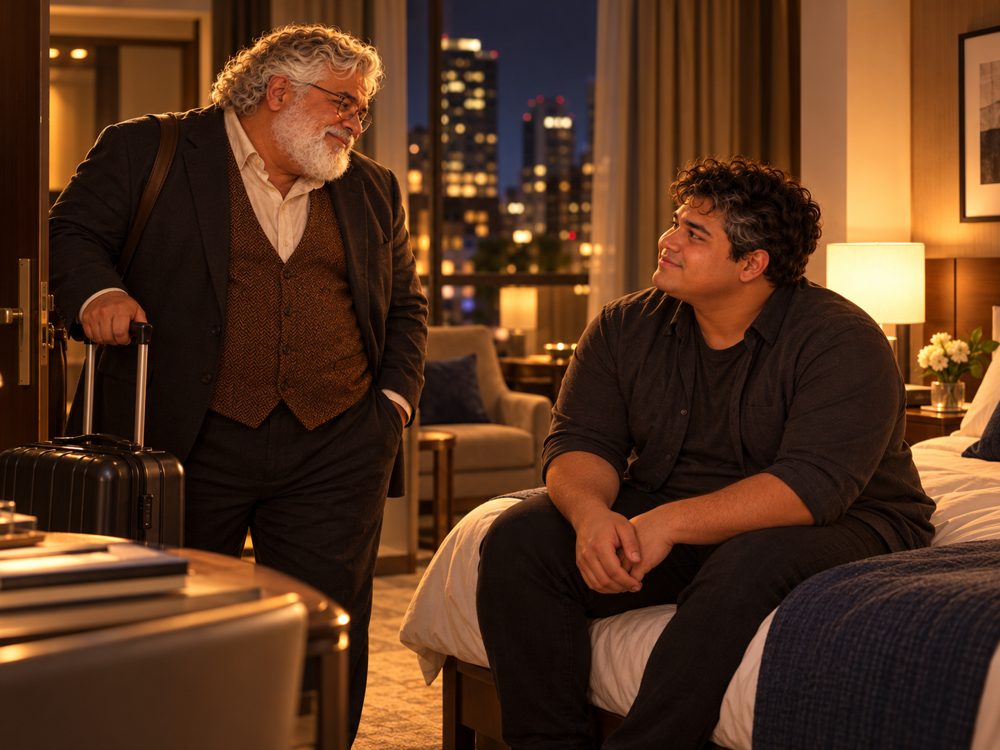
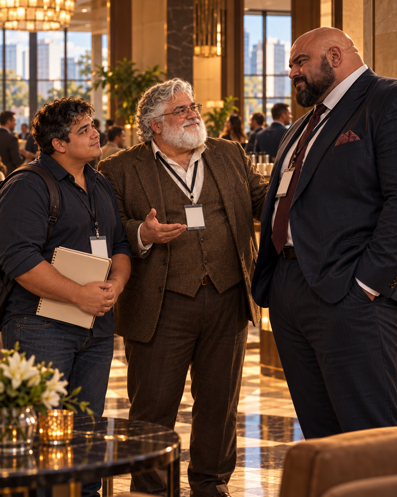
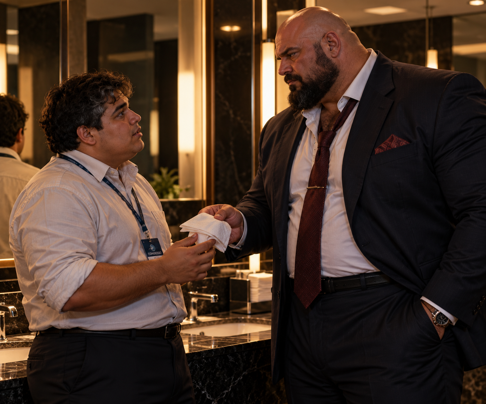
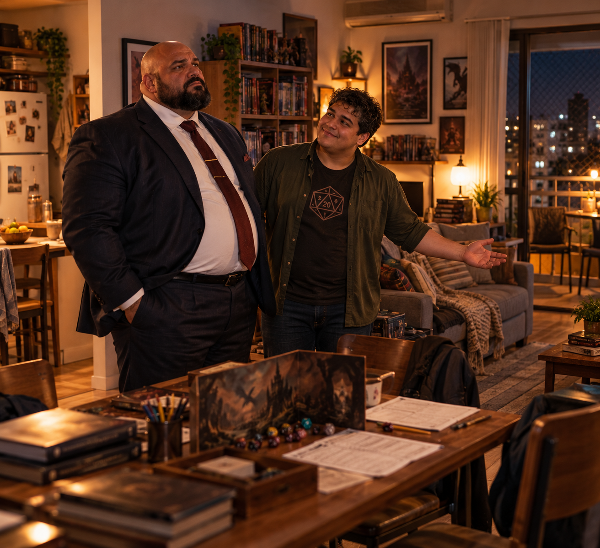
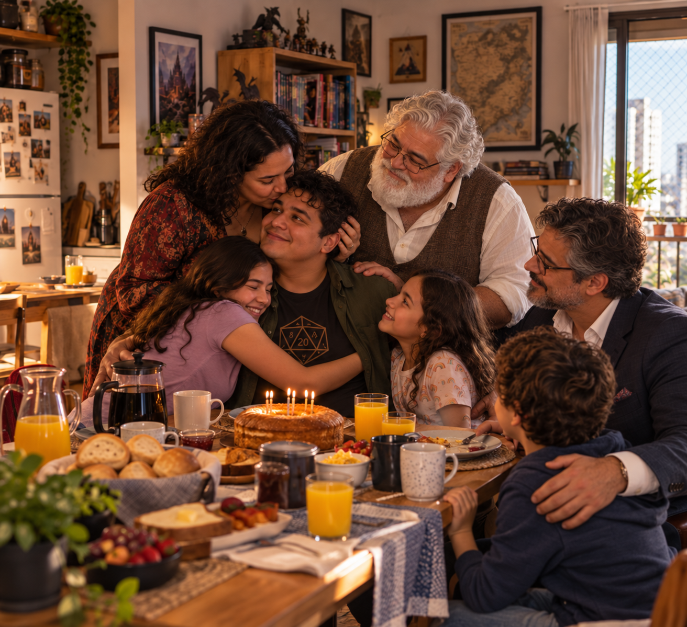
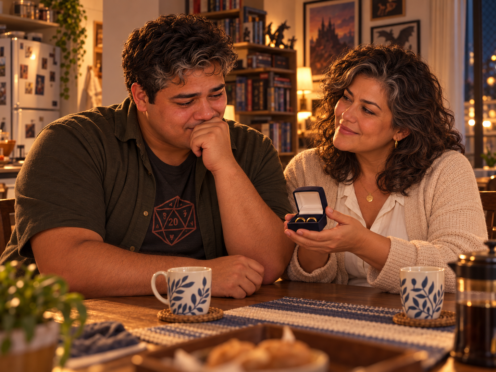
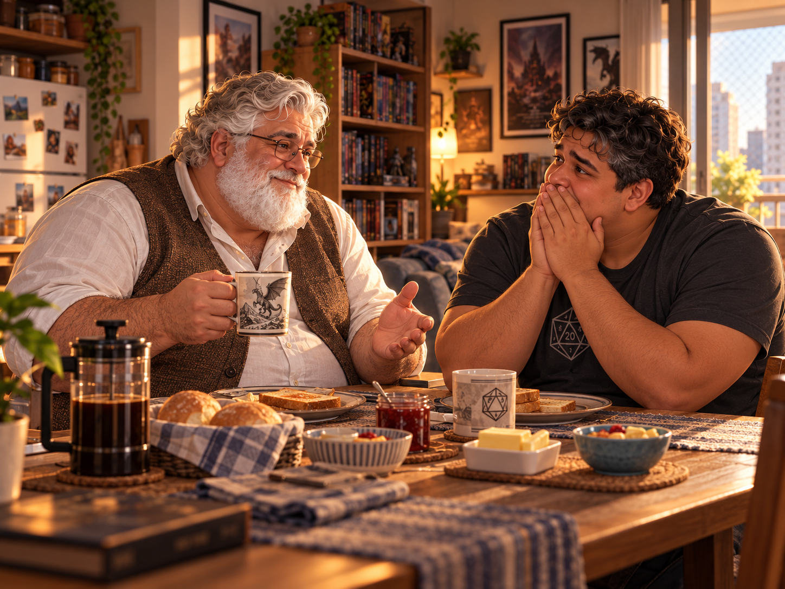

Trilogia Ostean · Livro I
A Terra e a Chuva:
O Convite
Prévia editorial — 88 unidades
Página 1
O Convite
O prédio novo da universidade respirava um cheiro agridoce de tinta fresca misturado ao pó dos livros velhos que César carregava na mochila. O corredor se estendia como um rio de luz, as janelas abertas deixavam o vento morno brincar com as cortinas e espalhavam ecos que faziam os passos parecer maiores do que eram. Leal, um jovem de 23 anos, pele parda, olhos castanhos e cabelos castanhos curtos com alguns fios grisalhos discretos, caminhava ao lado do amigo. Tinha 1,70 m de altura, corpo cheio de cerca de 100 quilos, ombros largos marcados por anos de esporte e um jeito contido que contrastava com sua inteligência criativa. O coração ainda leve pela confusão que o fizera perder a primeira aula, sentia-se entrando em um jogo atrasado, sem conhecer as regras, mas curioso pelo desenrolar da partida.
— Olha isso — disse, entregando o celular para César. O aparelho refletia a claridade da janela, mas a tela permanecia aberta, exibindo um e-mail com letras formais e, ainda assim, carregadas de cordialidade: “Prezado Leal, peço desculpas pela falha da coordenação. Gostaria de convidá-lo a ingressar na turma. Será um prazer tê-lo conosco. — Prof. Cael”.
César arqueou a sobrancelha, lendo rapidamente, e devolveu o aparelho como quem devolve um segredo.
— Ele mesmo que escreveu? — perguntou, quase incrédulo. — Normalmente, professor nenhum perde tempo com isso.
Leal deu de ombros, tentando parecer indiferente, mas havia algo no modo como o nome “Cael” encerrava a mensagem que lhe ficara gravado. Uma assinatura breve, elegante, como se fosse o início de uma conversa mais longa, quase uma promessa de presença.
— Pois é — murmurou, um rubor discreto subindo-lhe ao rosto. — Fiquei até sem graça.
— Não fica, não. — César abriu um sorriso cúmplice, ajeitando os livros no braço. — Você vai gostar dele. É diferente dos outros professores. Brinca, provoca, mas de um jeito que a gente aprende sem nem perceber. Na primeira aula, fez a gente criar um jogo em menos de dez minutos. E todo mundo entrou na dele, como se fosse natural.
O riso fácil de César ecoava, mas Leal se mantinha em silêncio, deixando que as palavras lhe impregnassem a mente. Ele ajeitou a mochila no ombro, sentindo o peso aumentar junto com a expectativa. A sensação era de atravessar um prelúdio — o corredor se alongava diante dele como uma música suspensa, aguardando a primeira nota.
A Espera
César puxou da mochila alguns livros pesados, o zíper aberto como uma boca ansiosa para engolir papéis. Os volumes pareciam quase conspirar contra ele, escorregando das mãos.
— Preciso devolver isso antes que vire dívida eterna — resmungou, equilibrando três títulos como quem carrega tijolos.
Leal apontou para um deles, reconhecendo de imediato a capa gasta: Psicologia Escolar e Processos de Aprendizagem. O coração bateu mais forte.
— Ei, esse livro… eu estava procurando justamente ele.
César congelou, os olhos arregalados, como se tivesse sido pego em flagrante.
— Não brinca. Esse eu já devia ter entregue ontem. Se não devolver agora, vou pagar multa.
Sem esperar resposta, fechou a mochila num gesto apressado e ajeitou os óculos, já disparando pelo corredor.
— Faz assim: a sala é no Bloco I, 401. Diz ao professor que eu vou me atrasar, que precisei resolver na biblioteca.
Leal ficou parado, o celular ainda quente entre os dedos, como se a ausência repentina do amigo abrisse espaço para uma ansiedade nova. O e-mail de Cael, aberto na tela, brilhava como um farol discreto. Nunca tinha visto aquele professor, e agora tentava imaginá-lo: voz grave ou leve? Olhar penetrante ou distraído? Um homem jovem demais, ou daqueles cuja autoridade vinha da experiência acumulada no corpo?
O prédio da Faculdade de Educação era recém-inaugurado. O piso encerado refletia a claridade das lâmpadas, e cada passo de Leal ecoava como se o lugar inteiro observasse. O ar tinha cheiro de móveis novos e papel recém-desembalado. Ele caminhava em corredores estranhos, cruzando com rostos que não reconhecia, professores que conversavam às portas das salas, alunos que o ignoravam como parte da rotina.
Parou diante de uma docente sorridente, que o recebeu com a cordialidade calma de quem está acostumada a orientar perdidos.
— No fim do corredor, à esquerda — disse ela, indicando o caminho.
Leal agradeceu num sussurro, a voz quase engolida pelo silêncio, e continuou até chegar à sala 401. A porta estava fechada, a sala mergulhada na escuridão. Nenhum movimento ao redor.
— Será que é aqui? — murmurou, com o coração batendo no ritmo das lâmpadas que piscavam no teto.
Conferiu o e-mail mais uma vez. O número estava certo: 401. Digitou uma mensagem a César, que respondeu quase de imediato:
“Ainda na fila da biblioteca. Mas o professor falou no grupo que vai atrasar.”
Leal rapidamente escreveu: “Pede pra ele me adicionar no grupo também.”
Mas a mensagem ficou travada, sem entrega, como se até a tecnologia decidisse alimentar sua espera.
O tempo se arrastava. Dez minutos se estendiam como uma eternidade. A cada passo no corredor, Leal erguia os olhos, tentando adivinhar: seria aquele homem de camisa azul? Ou o senhor de pastas na mão? Nenhum deles parecia carregar o peso e a leveza do nome “Cael”.
O vazio da sala crescia, e com ele a dúvida em seu peito. O coração era agora um relógio inquieto, marcando cada segundo como um compasso de expectativa.
O Outro Lado
Enquanto isso, algumas horas antes, Cael dirigia em silêncio. Os dedos descansavam firmes no volante, mas a mente se prendia ao sorriso encorajador da esposa. Haviam levado a filha mais nova ao médico depois de um enjoo insistente. Não parecia grave, a enfermeira garantira, apenas o final de uma gripe, nada que não passasse com repouso.
— Eu fico com ela — dissera a esposa, ajeitando a blusa como quem veste uma armadura cotidiana. — Estou de home office, consigo acompanhar tudo daqui.
Cael assentira em silêncio, grato. Abaixara-se até a altura da filha, os olhos buscando os dela. A menina, com aquela mistura de doçura e coragem que o derretia, segurara firme sua mão e dissera:
— Se precisar, eu sei me proteger. A mamãe convoca raios e, se não der, eu convoco você.
Ele riu, beijando-lhe a testa com ternura.
— Então estamos seguros.
Despediu-se com carinho da esposa, e ao entrar no carro, sua voz soou firme ao comando da IA integrada:
— Rota mais rápida e segura para o campus da Federal. Música suave, e avisa no grupo que chego em quinze minutos.
O painel se iluminou em azul, confirmando o pedido. A cidade passava pelas janelas em flashes de concreto e árvores, enquanto a vida cotidiana se dissolvia na urgência suave do caminho. Naquele instante, Cael não imaginava que a espera de um aluno, diante de uma sala escura, já começava a escrever a primeira página de algo maior.
Página 1
O Encontro
Na confusão de alunos, pelo menos trinta se amontoavam diante da porta da sala 401. Conversas cruzadas, risos, murmúrios. O corredor parecia um formigueiro inquieto. Leal se sentia parte e ao mesmo tempo alheio, observando o movimento com a ansiedade que crescia no peito. Não percebeu quando César chegou, ofegante, suado, abrindo caminho entre os colegas com um sorriso vitorioso.
— Aha! Cheguei! — exclamou, limpando o suor da testa com a manga da camisa.
Eles trocaram algumas palavras rápidas, rindo do atraso e da correria, até que Leal notou algo diferente. As conversas em volta diminuíam, o burburinho baixava, como se o ar estivesse sendo sugado do corredor. Então, ouviu uma voz. Grave, firme, potente como um tenor que não precisava gritar para ser ouvido. Aveludada, pesada e acolhedora, como um edredom que envolve o corpo em noites frias.
— Abram espaço, eu preciso de espaço... Mais espaço, gente. Vocês não estão vendo o meu tamanho? Vamos, vamos... eu tenho as chaves e só eu posso abrir. Essa porta tem uma armadilha mortal, se não se afastarem... — a voz vinha acompanhada de risos e murmúrios divertidos dos alunos que se moviam obedientes, abrindo passagem.
Leal ergueu os olhos. À sua frente, costas largas, ombros firmes, cabelos brancos ondulados que reluziam sob a luz fria do corredor. A camisa bem passada moldava um corpo imponente. De costas já lhe chamava a atenção. O coração bateu forte, e um pensamento atravessou como relâmpago: não é possível... eu não vou passar nessa matéria...
Foram segundos de paralisia que pareceram uma eternidade. César lhe deu um empurrão no ombro, rindo baixo.
— Vem, vamos. O professor chegou.
Dentro da sala, Leal confirmou sua impressão. Ali estava ele: Papai Noel durante o Natal, professor de Informática Educativa o resto do ano. A imaginação de Leal correu solta, desenhando cenas absurdas de Cael com sacos de presentes e risadas trovejantes. Mas quando o olhar do professor recaiu sobre ele, a fantasia se dissolveu, substituída pela força concreta daquela voz.
— Você deve ser o Leal — disse Cael, os olhos atentos, como se já soubesse quem era ele. — Venha, sente-se. Busque uma cadeira vazia... aqui, na frente. Parece que ninguém quer sentar tão perto da minha mesa.
Leal sentiu o instinto de preservação despertar como um alarme. Ninguém sabia que ele era gay. Ninguém sabia de sua atração por homens grandes, fortes, gordos. Sabia da existência da comunidade dos ursos, lera a respeito, imaginara... mas agora estava diante de um perfeito daddy bear. E ele não era apenas um homem. Era seu professor. O semestre prometia ser longo, intenso, e Leal mal conseguia decidir se isso o assustava ou o excitava.
Página 2
A Primeira Aula
A sala 401 se revelava como um laboratório moderno: fileiras de computadores em rede, a lousa eletrônica dominando a parede e um painel de cristal líquido touch screen que projetava slides e, ao mesmo tempo, refletia a imagem de Cael caminhando pela frente da sala. Tudo brilhava com um tom frio de tecnologia nova, mas a presença dele tornava o ambiente caloroso, quase íntimo.
Cael falava com a naturalidade de quem respira conhecimento. Um mergulho rápido pela história: Seymour Papert, as ideias da construção de saber pelos jogos, Paulo Freire e a pedagogia libertadora. A voz grave enchia o espaço, tão firme quanto suave, hipnótica. Entre uma citação e outra, alertava para o presente: computadores pessoais, celulares, internet das coisas, inteligência artificial. Falava de tudo como se fosse trivial, como se dominasse não apenas as máquinas, mas o tempo em que viviam.
Quando propôs a prática, a energia da sala mudou. Os alunos foram desafiados a criar jogos que ensinassem o uso consciente da informática e das redes. Não bastava falar: precisavam jogar, pensar, aplicar.
Leal, sem recorrer a nenhuma máquina, desenhou uma quest. Uma caçada em que cada colega teria de tomar decisões éticas que impactariam uns aos outros, criando uma rede viva de consequências. O objetivo não era vencer sozinho, mas perceber que a harmonia dependia do esforço de todos: alguns teriam de ceder, outros se dedicar mais, e apenas a cooperação poderia trazer ganhos coletivos. O jogo era simples e, ao mesmo tempo, carregava uma poesia própria.
Cael circulava entre os grupos, lançando comentários rápidos, ajustando uma regra aqui, sugerindo um detalhe ali. Em certo momento, ao comentar uma dinâmica, deixou escapar um termo de RPG.
Leal prendeu a respiração. A palavra ficou suspensa no ar como uma senha secreta, uma pista. Mas conteve o impulso de reagir. Terminou seu jogo, fingindo distração, enquanto o pensamento queimava em silêncio: ele joga…
As propostas foram apresentadas, uma a uma. A sala votou para decidir quais seriam testadas na semana seguinte. Três jogos foram escolhidos. Um deles, o de Leal.
No fim da aula, enquanto arrumava a mochila e caminhava com César para a saída, Leal ainda sentia o coração martelar. Não era apenas orgulho por ter sido escolhido. Era a certeza de que tinha um alvo. Não queria apenas impressionar os colegas. Queria impressionar o professor.
Cael, já à porta, lembrou os três grupos escolhidos:
— Durante a semana, passem na secretaria para marcar horários com os estagiários. Precisamos ajustar o laboratório para aplicar os jogos.
E então, ao cruzar o olhar com Leal, soltou como quem deixa escapar algo que não deveria, mas queria:
— Gostei da sua ideia, bem original. Acho que temos mais em comum do que apenas tatuagens.
A frase ficou no ar, como um código gravado na pele.
Página 3
O Prólogo Final
A noite caiu com um ar de decisão. Em uma sala discreta, Cael se reunia com Bernardo e Patrícia, os dois sócios que, junto a ele, sustentavam a empresa de consultoria em treinamento e seleção. O ambiente tinha cheiro de café forte e o brilho frio de telas abertas em planilhas de expansão. A empresa já estava pronta para dar um passo maior, e havia tempo que Cael falava da necessidade de trazer um estagiário ou estagiária de Psicologia para compor a equipe.
Bernardo, rindo baixo, abriu a conversa:
— Vejo que você também percebeu. Leal é rápido, intuitivo. Eu já tive ele em duas disciplinas. Este semestre está comigo em Avaliação e Diagnóstico Neuropsicológico. Ele não tem ideia do tamanho das habilidades que tem. Está em um grupo de pesquisa sem remuneração, mas é claro que pode muito mais.
Patrícia apoiou o queixo na mão, atenta:
— Então é questão de tempo. Precisamos dar a ele uma chance real.
Cael ouviu e, por dentro, a animação crescia. Sabia caçar talentos quando surgiam, e Leal tinha o brilho raro daqueles que ainda não percebem sua própria potência. Tomou um gole de café, recostou-se na cadeira e afirmou:
— Então vamos nos reunir com o conselho. Hoje à noite. Se queremos expandir, precisamos de financiamento, e precisamos começar agora.
As peças estavam em movimento. O tempo se curvava em silêncio, preparando o próximo capítulo.
Dias depois, o sol nascia sobre a cidade. O prédio da empresa refletia a claridade da manhã quando Leal atravessou a porta de vidro pela primeira vez. Tenso, ajeitava a mochila no ombro. Nunca tinha estagiado antes. O coração batia como se fosse tocar uma nota desconhecida. Ele não sabia ainda, mas aquele seria o primeiro passo em uma melodia longa, onde trabalho, descoberta e sentimentos se entrelaçariam.
Era o primeiro dia de Leal na empresa.
E assim se fechava o prólogo.
Página 4
Epílogo do Primeiro Dia
Leal já estava quase na porta quando parou, respirou fundo e, com a vergonha estampada no rosto, voltou-se para Cael.
— Professor… quer dizer… doutor Cael… Eu tomei uma decisão sem o senhor pedir.
Cael ergueu uma sobrancelha, a curiosidade acendendo-se em seu olhar.
— Decisão?
Leal segurou a alça da mochila com força, as palavras atropeladas saindo como se temesse recuar:
— Eu automatizei o questionário. Fiz uma aplicação guiada. O candidato pode responder direto, e os resultados vão para um banco de dados configurado com os parâmetros dos manuais. Se alguém preferir usar o modelo antigo, basta escanear a folha e… dá na mesma.
O silêncio que se seguiu pesou mais que qualquer crítica. Cael se levantou devagar, caminhando até a porta onde Leal hesitava. A voz grave soou próxima, densa como um chamado:
— Volte aqui. Me mostre isso.
Os dedos de Leal tremiam ao abrir o notebook. A tela iluminou a sala com sua luz azulada, refletindo nos olhos atentos de Cael. Eles se sentaram lado a lado, e Leal conduziu os primeiros testes. A aplicação respondia rápido, limpa, eficiente. Cael sorriu quando o relatório final surgiu quase instantâneo.
— Impressionante — disse, em tom baixo e sincero. — Você realmente tem um talento raro.
A sala estava vazia, apenas os dois, o brilho da tela e o som dos cliques ecoando no espaço. O tempo parecia se esticar, criando uma bolha de silêncio cúmplice. Entre explicações e comentários, nasceu uma intimidade sutil: não apenas de professor e aluno, não apenas de gestor e estagiário. Algo que se reconhecia no olhar, mas não se dizia em palavras.
Essa foi a primeira vez. Mas não seria a última. Em outros dias, quando o escritório estivesse silencioso, Leal e Cael voltariam a se encontrar. Entre códigos, jogos e ideias, criariam conexões que surpreendiam sempre — uma descoberta de Leal, uma visão de Cael. O trabalho era o pretexto. A presença, inevitável.
Página 5
Entre Família
Aquela noite com Tatyana foi diferente. O vinho tingia as taças de rubro, e cada gole parecia acender ainda mais a paixão que os unia. Havia anos que Cael não se sentia tão vivo, tão tomado por um arrebatamento que ia além da rotina do casamento. Naquela noite, não foi apenas desejo — foi a confirmação silenciosa de que compartilhar amor não diminuía nada, apenas multiplicava. Tatyana percebia isso. Entre beijos e carícias, via no marido uma chama renovada, uma alegria que transbordava até no trabalho.
E de fato, a empresa florescia. Ideias fluíam, projetos avançavam, Bernardo comentava com frequência sobre a energia de Cael. Mas em casa também havia mudança. Tatyana, com seu olhar firme, começou a puxar Leal para dentro dos círculos íntimos da família.
Primeiro foram os convites para almoços de domingo. Depois, encontros em finais de semana, aniversários das filhas, até a festa de um sobrinho. Foi nessa ocasião que descobriram um novo talento de Leal: o de DJ infantil improvisado. Entre playlists de desenhos e clássicos dançantes, ele misturava músicas com instinto certeiro. Em minutos, as crianças se espalhavam em roda, pulando e rindo. Até os adultos, contagiados, se juntavam à dança. Cael, encostado à parede, observava com um orgulho que lhe era impossível esconder.
Tatyana também observava. Mas não apenas com admiração: ela via além. Percebia o constrangimento de Leal em certos momentos, os silêncios longos, os olhares desviados quando o assunto se aproximava demais dos sentimentos.
Uma tarde, encontraram-se sozinhos na cozinha, depois de uma festa. O cheiro de bolo e refrigerante ainda pairava no ar, enquanto Leal lavava alguns pratos para ajudar. Tatyana se aproximou, pegou um pano de prato e, em silêncio, secou um copo. Depois falou, com a naturalidade de quem abre uma porta devagar:
— Você sabe, Leal… todos nós temos vergonha de alguma coisa. De sentir, de falar, de ser.
Ele congelou por um segundo, mas não ousou levantar os olhos.
— Eu… não sei se consigo… — murmurou.
Tatyana pousou o copo, virou-se para ele. Sua voz era firme, mas doce:
— Não tenha medo de ser você mesmo. Aqui, você está entre família.
As palavras entraram fundo, como bálsamo e como desafio. Leal respirou, devagar, e pela primeira vez sentiu que talvez pudesse confiar.
Página 6
O Convite
Bernardo entrou na cozinha no meio da conversa, rindo do próprio tropeço.
— Tem água aí ou vou ter que disputar com as crianças? — perguntou, abrindo a geladeira sem cerimônia.
O clima, antes contido pela delicadeza das palavras de Tatyana, se dissolveu em risos. Leal relaxou um pouco, lavando as mãos ainda úmidas de sabão. Tatyana o observava com um brilho maroto no olhar, como quem já visse dois passos adiante.
Ela então soltou, num lampejo prático:
— Bernardo, por que você e o Cael não levam o Leal para o congresso em São Paulo? Vocês vão precisar de alguém no estande da empresa enquanto estiverem palestrando.
Bernardo ergueu a sobrancelha, aprovando a ideia no ato.
— Boa. Ele está pronto pra isso.
E, virando-se para Tatyana com o afeto cúmplice de quem compartilha a mesma história, completou:
— Cael casou com a melhor pessoa do mundo, você sabe, não é, minha irmã?
Leal ficou imóvel por um segundo, como se a frase tivesse acendido luzes que ele ainda não sabia interpretar. Apenas sorriu, tímido. No fundo, sentia que algo importante se ajustava ao seu redor, como peças de um tabuleiro que finalmente se encontram.
Nos dias seguintes, mergulhou no trabalho para o congresso. Criou materiais para as palestras de Cael e Bernardo, esboçou ativações interativas para o estande, planejou dinâmicas que chamariam a atenção do público. As ideias fluíam com velocidade — mas, por baixo do turbilhão, havia outra correnteza: a expectativa da viagem.
Naquela noite, ao chegar em casa — o apartamento silencioso, o relógio batendo alto demais —, a ansiedade tomou conta. Deitou-se, olhos fixos no teto, e sonhou acordado com a estrada, com os corredores cheios de São Paulo, com o estande vibrando. E, sobretudo, com a possibilidade de estar sozinho ao lado de Cael, entre uma atividade e outra, como se o mundo coubesse naquela travessia a dois.
Página 7
A Viagem
O avião cortava o céu azul em silêncio, mas dentro de Leal o barulho era ensurdecedor. Nunca havia viajado para tão longe. Olhava pela janela, entre fascínio e ansiedade, enquanto Cael lia em silêncio e Bernardo fazia piadas com a aeromoça. Tudo era pago pelo patrocinador, e isso lhe dava um alívio imenso — a bolsa de estudos mal cobria as contas, e o medo de ter de gastar o que não tinha ainda pesava na mente.
Quando chegaram ao hotel, a confusão começou. Bernardo apareceu com o papel da reserva na mão e uma expressão fingidamente culpada.
— Pessoal… parece que eu errei. Só reservei dois quartos em vez de três.
O recepcionista confirmou: o hotel estava lotado por causa do evento. E havia outro detalhe: cada quarto tinha apenas cama de casal.
Leal sentiu o suor frio lhe escorrer pela nuca. Quis dizer algo, mas ficou mudo. Cael ajeitou os óculos e respirou fundo, enquanto Bernardo, sempre ágil, lançou a solução:
— Olha, eu e Cael já dividimos quarto muitas vezes em congresso. Então, Leal, como prêmio pelo seu trabalho, você fica sozinho. Mas vai ter que deixar todo o material no seu quarto, porque eu posso ser magro, mas seu amigo aqui é muito gordo! — deu um tapa camarada no ombro de Cael, arrancando risadas.
A piada funcionou. O riso quebrou a tensão, e até Leal deixou escapar um sorriso tímido. O corpo relaxou, sentindo-se aliviado.
Primeira Noite
À noite, os três saíram para jantar. São Paulo parecia infinita, com seus prédios iluminados, avenidas largas e um movimento que nunca parava. Para Leal, vindo de Salvador, tudo tinha um ar de descoberta. Gostava de sua cidade natal, mas nunca tivera chance de viajar para tão longe. Agora, estava sentado num restaurante elegante, com pratos pagos pelo patrocinador e a sensação estranha de pertencer a um mundo que não conhecia.
Riram, conversaram, brindaram com vinho. Na volta ao hotel, Leal agradeceu e tentou se retirar.
— Vou para o quarto. Quero revisar algumas aplicações para amanhã.
Bernardo insistiu:
— Que nada! Aproveita a noite, a feira só abre às quatro da tarde.
Cael não disse nada. Apenas continuou com o vinho na mão, olhando para Leal com aquele silêncio que parecia dizer mais do que palavras.
Leal subiu, mas minutos depois ouviu batidas na porta. Abriu e encontrou os dois: Bernardo carregando petiscos comprados no hall, Cael com uma garrafa de vinho.
— Não é justo — disse Bernardo. — Viemos ajudar, para você terminar mais cedo.
Montaram-se ao redor da mesa improvisada: Bernardo conferindo detalhes, Leal digitando, Cael sentado na cama com a garrafa. Mas o vinho logo lhe subiu à cabeça. Deitou-se “só por um segundo”… e começou a roncar.
Leal e Bernardo riram baixo, continuando o trabalho até onde podiam. No fim, deixaram parte para o dia seguinte. Bernardo, experiente, garantiu que certas plotagens só poderiam ser ajustadas quando vissem o estande montado.
Leal olhou para Cael, adormecido, e perguntou em voz baixa:
— E ele?
Bernardo sorriu, levantando-se.
— Vai dormir até amanhã. Se não tiver problema… hoje você dorme com o ronco. Afinal, você é o estagiário dele. — piscou o olho, em tom brincalhão, e saiu do quarto.
Leal ficou ali, sentado na beira da cama, o som grave da respiração de Cael preenchendo o quarto. O corpo ainda suava frio, mas algo nele sabia que aquela viagem mudaria tudo.
Página 8
A Madrugada
O vapor do chuveiro envolvia Leal como um manto. A água quente corria pela pele, levando embora o cansaço do dia, e por alguns minutos ele conseguiu esquecer. Esquecer que, a poucos metros dali, no quarto escuro, dormia o homem que ocupava seus pensamentos de forma avassaladora. Fez a barba, trocou de roupa, ajeitou-se como quem se preparava para o dia seguinte. Mas, ao abrir a porta, a realidade voltou inteira: Cael estava ali, adormecido, ainda vestido, o corpo pesado atravessado na cama, as pernas fora do lugar, como alguém que sucumbe ao cansaço e ao vinho.
Leal parou, paralisado, observando em silêncio. Não conseguiria dormir, sabia disso. O coração batia forte demais. Então se aproximou, hesitante, e com um gesto tímido retirou os sapatos de Cael, depois as meias. Cobriu-o com o lençol, ajeitando-o melhor. Foi um ato simples, de cuidado, mas que lhe trouxe uma vertigem nova: a sensação da pele quente sob seus dedos, a intimidade de um gesto que ninguém mais veria.
Cael se moveu, meio dormindo, meio acordado. Murmurou algo indistinto, confundindo nomes, como se chamasse por Bernardo. Leal conteve o fôlego, agradecendo em silêncio pelo equívoco. Menos mal que acreditasse estar em companhia do sócio. Aproveitou para terminar de ajeitar o lençol e recuou, sentando-se à beira da cama. O tempo parecia suspenso, como se todo o quarto respirasse junto com o sono pesado de Cael.
Deitou-se, finalmente, virado para o outro lado. A mente não parava. Pensamentos rodopiavam, ansiedades se acumulavam. Mas o cansaço foi mais forte. Aos poucos, a respiração desacelerou, e o sono o tomou.
O Amanhecer
Horas depois, a claridade tímida da manhã atravessava as cortinas. Leal despertou antes do relógio, ainda atordoado pelo peso dos sonhos. Levantou-se, foi ao banheiro, deixou-se ficar alguns minutos, tentando aliviar a tensão que não sabia nomear. Quando voltou, encontrou Cael na mesma posição, dormindo profundamente.
Deitou-se de costas, fechando os olhos por mais algumas horas de descanso. Então sentiu. Um calor próximo, um movimento sob o lençol. Cael se aproximava, ainda pesado de sono, e numa voz arrastada murmurou:
— Estou com frio…
Ao mesmo tempo, passou o braço pela cintura de Leal, puxando-o para perto, num gesto natural, como quem procura aconchego. Ficaram assim, corpo contra corpo, respirando no mesmo ritmo. Leal não reagiu, apenas deixou o corpo ceder, quieto. No fundo, não sabia se Cael sonhava ou estava desperto. Mas para ele, bastava.
E Cael, por trás dos olhos semicerrados, sabia. Tatyana lhe dissera: se conseguir, fale com ele. Mas fale com carinho. E era isso que o gesto trazia: um começo sutil, um espaço para que a conversa, mais cedo ou mais tarde, pudesse nascer.
Página 9
O Velho Lobo (ponto de vista de Cael)
À beira da piscina do hotel, a cidade subia como um rumor distante. Leal se afastou por um minuto para buscar água; foi o espaço exato para Cael encostar o ombro em Bernardo e sussurrar:
— Quero conversar com ele ainda hoje. Você se importa de me deixar a sós com ele aqui?
Bernardo apertou-lhe o ombro, rindo baixo, o afeto de quem conhece a outra metade da frase:
— Amigo, quanto antes você abrir essa janela, melhor para todo mundo. É claro que esse garoto te venera. Somos psicólogos: só ele ainda não percebeu o que todos já viram.
O alívio veio como ar fresco. Mas o plano durou pouco. Leal voltou com a garrafa nas mãos e, depois de alguns minutos de conversa leve, anunciou que subiria para revisar as aplicações do estande. Cael ensaiou retê-lo com um comentário, mas o rapaz já sorria com aquela educação tímida que diz “preciso ir”. O momento se adiou.
Foi então que Bernardo, com a sagacidade de sempre, mudou o tabuleiro:
— Não é justo deixar o moleque sozinho. Vamos lá ajudar.
Pegaram alguns petiscos no saguão e bateram à porta do quarto. O resto da noite se organizou em volta de uma mesa pequena: Leal digitando, Bernardo conferindo materiais, Cael acompanhando com o olhar. O vinho, porém, subiu devagar como maré. Cael sentou-se na beira da cama “só por um segundo” e a sonolência chegou com um ronco discreto.
Despertou horas depois, no silêncio azul do quarto. A cabeça estava clara; não era o vinho, era outra coisa — uma inquietação que lhe tremia nas mãos. Foi ao banheiro, enxugou o rosto, e ali encontrou uma peça de roupa esquecida. Não pensou: aproximou-a do rosto. O cheiro jovem, simples, verdadeiro, bateu forte. Para conter a vertigem, entrou no chuveiro e deixou a água fria organizar o corpo.
De volta, deitou-se de costas para Leal. A fresta da cortina já deixava escapar um fiapo de madrugada. Sorriu de si mesmo, num sussurro que só ele ouviu:
— Vai com calma, velho lobo. Respeite os sinais.
Ouviu passos leves. Leal levantou-se, foi ao banheiro, retornou em silêncio. Cael fechou os olhos de propósito, como quem aprende a esperar. O colchão afundou um pouco ao lado; o quarto respirou. Então o gesto nasceu sozinho, simples como quem pede abrigo:
— Estou com frio… — murmurou, e passou o braço pela cintura do rapaz, puxando-o para perto.
Leal não resistiu. Apenas se acomodou, aceitando o contorno do abraço. Ali, no intervalo entre sonho e vigília, Cael entendeu que aquele não era um fim, mas o início do caminho certo: primeiro o cuidado, depois a conversa. A palavra viria — longa, honesta — quando a manhã chegasse.
Página 10
A Revelação
A manhã trouxe consigo uma claridade tímida, filtrada pelas cortinas do quarto de hotel. O silêncio ainda dominava o espaço quando Leal, nervoso, virou-se para Cael. O mestre parecia preparado para falar, mas foi surpreendido.
— Eu preciso dizer — começou Leal, a voz embargada. — Desde o primeiro dia de aula, desde aquele e-mail, tudo mudou. Cada conversa, cada vez que ficamos sozinhos, cada brincadeira… até os abraços, os beijos no rosto, tudo isso ficou marcado em mim. E quando Tatyana me acolheu, quando percebi que sua família me recebia de braços abertos… eu só senti mais certeza. — Engoliu em seco, lágrimas já se formando. — Eu respeito demais a sua família, Cael. Por isso preciso ser honesto.
Cael manteve o olhar firme, respirando devagar, mas não avançou. Sabia que, se se revelasse por inteiro naquela hora, corria o risco de apressar algo que deveria ser cultivado com cuidado. O aprendiz precisava estar pronto, precisava antes compreender suas próprias dores.
Leal continuou, agora com lágrimas correndo.
— Eu já saí com um cara uma vez… ele era casado. Sempre foi mais fácil assim, porque eu tinha medo. Medo de namorar, medo de ser rejeitado, medo de mostrar quem eu sou de verdade. E eu não quero mais ter medo. Não com você.
As palavras caíram como pedras soltas de um penhasco. Leal tremia, preso entre a confissão e a vergonha. Foi então que Cael se moveu. Puxou-o para um abraço firme, peito com peito, barriga com barriga, as mãos se apertando mesmo por cima da roupa.
— Respira comigo — disse, grave e sereno. E conduziu o aprendiz, inspirando fundo, expirando lento, até que as lágrimas se misturaram ao ritmo compassado da respiração dos dois. O peso parecia diminuir a cada sopro.
Quando percebeu que Leal se acalmava, Cael ergueu a própria camiseta, mostrando o peito nu. Pediu que o rapaz fizesse o mesmo.
— Sentir a pele um do outro vai ajudar a diminuir a ansiedade. Confia em mim.
Leal hesitou, mas obedeceu. Encostaram-se, pele contra pele, e a respiração em conjunto tornou-se ainda mais profunda, mais enraizada. O calor compartilhado dissolveu o tremor.
Então Cael, olhando-o nos olhos, pediu permissão:
— Posso ser carinhoso com você?
— Sim — respondeu Leal, tímido, mas firme.
Os lábios de Cael tocaram os dele num beijo leve, quase um ósculo. Leal retribuiu, ainda trêmulo, mas sincero. Cael sorriu e explicou:
— Esse gesto… eu já ofereci aos meus pais, à minha esposa, às minhas filhas. É um gesto de família. Você também é parte disso, se assim desejar.
O silêncio se encheu de significado. Leal, com lágrimas nos olhos e um sorriso pequeno, respondeu:
— Sim.
Naquele quarto de hotel, antes do café da manhã, não havia mais disfarces. Apenas o início de um vínculo tecido em verdade, cuidado e a promessa de que, a partir dali, nada seria como antes.
Página 11
O Primeiro Dia do Congresso
Naquela manhã, já após o café, Cael pediu um tempo para conversar com Bernardo antes de partirem para o congresso. Encontraram um canto discreto do hotel, longe da movimentação dos participantes, e Cael falou com a gravidade de quem sabe que cada palavra carrega peso.
— Bernardo, precisamos ir com calma. Leal tem só vinte e três anos. Já carrega mais traumas com sua sexualidade do que deveria, começou a vida toda do jeito errado, no medo, no silêncio. Essa viagem precisa ser para que ele se sinta seguro comigo. Não quero apressar nada.
Bernardo assentiu, ouvindo com atenção. Cael prosseguiu:
— Hoje ele se declarou para mim. Falamos bastante antes do café da manhã. Ele abriu o coração, mas eu ainda não falei de mim. Não é a hora. Primeiro preciso que ele se veja inteiro, sem medo.
Houve um silêncio breve. Então Bernardo puxou o amigo para um abraço forte.
— Você sabe que pode contar comigo. Sempre.
O gesto simples selou a confiança entre os dois. Em seguida, recolheram o material e partiram juntos para o centro de convenções. O primeiro dia do congresso se abria diante deles: estandes, palestras, corredores cheios. Mas, por trás de tudo, Cael carregava uma decisão firme — aquela viagem não seria apenas trabalho. Seria, acima de tudo, o espaço para Leal encontrar segurança, e para o vínculo entre eles ganhar raízes mais fundas.
A Mensagem de Tatyana
Entre a montagem do estande e os primeiros contatos com outros profissionais, Leal sentiu o celular vibrar. Era uma mensagem de Tatyana. Ele abriu, curioso.
“Tenho um sexto sentido, Leal… imagino que o seu coração esteja pequenininho agora. Mas você não imagina o quanto ele é grande.”
Leal ficou imóvel por um instante. O peito se aqueceu de um jeito inesperado. Logo em seguida chegou outro arquivo: um vídeo curto. As filhas de Cael apareciam sorridentes, chamando-o de tio Leal, dizendo que estavam torcendo por ele, para que aproveitasse a viagem e fosse feliz.
Segurou o riso e a emoção, respondendo apenas com emojis rápidos. Mas antes do almoço, quando conseguiu uma pausa, digitou de volta, intrigado:
— O que você quis dizer com aquela mensagem sobre meu coração estar pequenininho? Isso não é só sobre o congresso, é?
Tatyana demorou alguns minutos, depois respondeu:
— Dei bom dia ao Cael hoje cedo, mas ele nem falou muito comigo. Não foi sobre isso que escrevi. Confie no tempo, Leal. E… faça uma coisa por mim: dê um beijo e um abraço no meu marido por mim.
Leal deixou o celular sobre a mesa, o coração acelerado. As palavras de Tatyana soavam como enigmas, mas também como promessa. Algo invisível parecia costurar sua vida àquela família, e ele começava a acreditar que não estava mais sozinho em nada daquilo.
Página 12
O Dia no Congresso
Depois do almoço, Leal voltou ao estande com um semblante diferente. A mensagem de Tatyana e o vídeo das filhas lhe davam uma leveza inesperada. Pela primeira vez, sentia-se confiante o bastante para assumir a dianteira. Organizou materiais, cumprimentou visitantes e passou a apresentar as aplicações que havia desenvolvido. As palavras saíam mais fáceis, os gestos mais firmes. Era como se todo o peso da manhã tivesse se transformado em energia nova.
Enquanto isso, Cael circulava entre colegas psicólogos, reencontrando antigos conhecidos, trocando cartões, rindo de histórias antigas. Sua postura elegante chamava atenção, sempre articulado e seguro, como quem dominava aquele ambiente há anos. Bernardo, por outro lado, aproveitava cada intervalo para articular contatos com possíveis parceiros e investidores, já preparando terreno para as palestras da empresa.
O dia seguiu intenso, entre demonstrações, encontros e pequenas reuniões. O estande da empresa recebeu mais visitantes do que esperavam, e Leal brilhou com suas explicações claras, chamando a atenção de quem parava para ouvi-lo. Cael observava de longe, com orgulho silencioso, mas também com um calor interno que só crescia.
À noite, os corredores do centro de convenções se transformaram para a abertura oficial. Um coquetel elegante reuniu palestrantes, patrocinadores e convidados. Leal, ainda maravilhado com a grandiosidade do evento, caminhava entre taças e risos, tentando absorver tudo. A palestra de abertura foi vibrante, falando sobre o futuro da psicologia diante da tecnologia, e ele se pegou pensando no quanto aquele espaço parecia um novo mundo que agora também lhe pertencia.
Quando a cerimônia terminou, São Paulo mostrou seu rosto noturno: ruas vivas, luzes que nunca se apagavam. O grupo se dividiu. Bernardo saiu com alguns investidores para uma reunião tardia, deixando Cael e Leal livres para jantar sozinhos.
Sentaram-se em um restaurante próximo ao hotel. A mesa era pequena, a iluminação suave, e a cidade pulsava lá fora. Pela primeira vez no congresso, estavam apenas os dois — e o silêncio que se formou entre eles não era vazio, mas cheio de possibilidades.
Página 13
O Jantar e o Beijo
O restaurante era acolhedor, com luz baixa e mesas pequenas. A cidade pulsava lá fora, mas entre Cael e Leal havia um silêncio carregado de expectativa. Foi Cael quem quebrou o gelo, erguendo a taça com um meio sorriso.
— O que acontece em Vegas fica em Vegas, não é? — disse, brincando, mas com uma seriedade velada no olhar. — Então aqui, longe de tudo, você pode falar comigo como nunca falou com ninguém.
Leal respirou fundo, os dedos apertando o guardanapo no colo. As palavras vieram em ondas.
— Eu… não tenho experiência. Sempre tive medo. Medo de ser quem eu sou, medo de ser rejeitado. Já tentei uma vez… foi com um homem casado. Parecia mais fácil assim, porque não precisava enfrentar nada. Mas nunca me senti livre, Cael. Eu achava que era impossível ser feliz de verdade.
Os olhos marejaram. Cael o ouviu em silêncio, a expressão grave e acolhedora. Quando falou, a voz era firme e terna.
— Eu entendo. E quero que saiba: eu quero ser o suporte que você nunca teve. Você não faz ideia do quanto me honra ouvir sua declaração. Nem imagina como o meu coração se aqueceu desde então.
Leal baixou os olhos, envergonhado, e mudou de assunto, como quem busca respiro.
— Sua esposa me mandou uma mensagem… e um vídeo das meninas. — Mostrou a tela do celular.
Cael olhou, depois tirou o próprio celular do bolso. Mostrou que a última mensagem de Tatyana tinha sido de manhã, e agora apenas uma breve de “boa noite”.
Leal ficou sem graça. O jantar terminou em clima suave, mas cheio de silêncios densos. Caminharam juntos de volta ao hotel. Bernardo ainda não havia retornado, ocupado com investidores.
Pararam diante da porta do quarto de Leal. Houve um instante de hesitação. Leal entrou, fechou a porta e encostou-se nela, o coração em disparada. Menos de cinco segundos depois, alguém bateu.
Era Cael.
— Você tem uma coisa para me dar e não me deu. E sabe… não cumprir pedidos da Tatyana pode ser perigoso.
Leal riu sem jeito, abraçou o orientador e deu-lhe um beijo rápido no rosto. Cael o fitou com fingida chateação, os olhos azuis cravados nos castanhos de Leal.
— Você acha que esse seria o beijo que minha esposa me daria?
Antes que Leal respondesse, Cael o puxou para fora do quarto, e no corredor o beijou de verdade — longo, intenso, arrebatador. O mundo se apagou por alguns segundos, até o som do elevador apitar. Eles se separaram às pressas, ainda ofegantes.
Do elevador saiu Bernardo, sorridente, distraído, sem notar nada. Passou por eles e perguntou a Leal:
— Como está o seu inglês? Você vai pros Estados Unidos!
Com um gesto brincalhão, empurrou Cael para dentro do quarto de Leal.
— Você dorme aqui. Faz anos que não durmo tão bem. — E saiu rindo, deixando os dois sozinhos outra vez.
Página 14
A Primeira Noite no Mesmo Quarto
Bernardo partiu com seu sorriso ainda estampado, deixando a porta bater atrás de si. O silêncio caiu sobre o corredor, e Cael olhou para Leal com calma. Não havia pressa, não havia desejo bruto — apenas a decisão de permanecer.
— Vou buscar minhas coisas — disse, e seguiu até o próprio quarto. Voltou minutos depois com a mala em mãos, como quem muda de endereço por uma noite. Enquanto isso, Leal já estava no banheiro, tomando banho, tentando organizar na mente o que estava acontecendo.
Quando saiu, encontrou Cael sentado na cama, falando sobre trivialidades: viagens antigas, a rotina da empresa, e sobretudo sobre a cumplicidade com Tatyana.
— A vida a dois, Leal, só funciona com parceria verdadeira. Ela é minha melhor amiga, e tudo o que construímos foi porque não escondemos nada um do outro.
Leal ouvia, absorvia, mas Cael percebia: toda a inteligência do aprendiz, brilhante em jogos e ideias, tropeçava diante do tema de amor, sexo, intimidade. Havia ali um campo ainda intocado, de inocência misturada com traumas.
Num gesto inesperado, Cael mostrou desinibição: foi ao banheiro e tomou banho de porta aberta, conversando o tempo todo com Leal, que, incrédulo, não acreditava no que via. A cena comum, cotidiana, parecia para ele quase impossível. Ver aquele homem se enxugar diante de si foi como atravessar um limiar.
Logo depois, Cael deitou-se na cama. Estava desnudo, mas coberto pelos lençóis, o corpo grande e peludo acomodado com naturalidade. Percebeu a tensão em Leal, que hesitou ao se aproximar.
— Espero que você entenda — disse, a voz calma e grave. — Eu não estou desdenhando de você. Mas eu realmente durmo assim. Esse monte de pelos me deixa com calor.
Leal respirou fundo, deitou-se ao lado e puxou sua coberta. Depois, com uma coragem tímida, perguntou:
— Podemos dormir como na última noite?
Cael sorriu de leve, virou-se de costas e, com um gesto sereno, pegou o braço do rapaz e o colocou sobre a própria cintura. Então se ajeitou, reproduzindo o mesmo movimento que Leal havia feito para se acomodar na conchinha da madrugada anterior.
No quarto, não havia espaço para pressa. Apenas o calor silencioso de dois corpos descobrindo como podiam caber um no outro, sem medo.
Página 15
O Despertar
A manhã nasceu sem pressa, filtrada pelas frestas da cortina. O quarto ainda guardava o calor da noite anterior, e, sob os lençóis, os corpos repousavam lado a lado. Mas não era apenas o silêncio que os unia. Havia um impulso antigo, um desejo que vinha à tona antes mesmo de abrirem os olhos.

Cael se moveu primeiro, ainda sonolento, buscando Leal no escuro morno do quarto. As mãos encontraram caminho até o corpo do aprendiz, e o gesto simples carregava mais que instinto: havia ternura, havia ensino. Leal correspondeu devagar, como quem aprende uma nova linguagem. Abraços e toques se misturaram ao peso da respiração, ao calor compartilhado. Não havia pressa, apenas o ritmo natural de quem se descobre em conjunto.
O êxtase não chegou como um trovão, mas como uma onda: subiu, envolveu, e se derramou sobre os dois em silêncio cúmplice. De olhos semicerrados, ainda presos ao torpor do despertar, permaneceram próximos, deixando que o coração acalmasse o corpo.
Mais tarde, levantaram-se sem dizer muito. O banheiro se encheu de vapor, e o banho compartilhado foi quase brincadeira: um riso leve, a espuma dividida, a sensação de cumplicidade em cada gesto cotidiano. Quando se olharam no espelho embaçado, perceberam-se mais serenos, como se algo fundamental tivesse sido alinhado entre eles.
Vestiram-se e seguiram para o café da manhã. No salão amplo do hotel, misturados à multidão de congressistas, ninguém poderia adivinhar o segredo suave que carregavam. Apenas eles sabiam: naquela manhã, algo havia se transformado. O vínculo já não era apenas de mestre e aprendiz. Era também de dois homens que, entre mãos e abraços, haviam encontrado um espaço de confiança e desejo partilhado.
Página 16
Café da Manhã e Mensagens
O salão do hotel estava cheio, congressistas em trajes sociais circulando entre mesas e ilhas de comida. Bernardo, sempre alegre, parecia brilhar ainda mais naquele ambiente. Conversava com garçons, elogiava a tapioca feita na hora, e ria sozinho de algo que apenas ele sabia. Para Leal, parecia que Bernardo tinha consciência de tudo — como se adivinhasse o que se passava entre eles —, mas sabia também não ultrapassar a linha. Não fez brincadeiras, não foi inconveniente. Apenas manteve a leveza no ar.
Os três estavam juntos quando, quase ao mesmo tempo, os celulares vibraram. Mensagens. No de Cael e no de Leal, o nome era o mesmo: Tatyana.
Bernardo se levantou para buscar ovos mexidos e uma tapioca, e Cael aproveitou o momento. Inclinou-se discretamente para Leal e perguntou em voz baixa:
— Você entende a diferença entre traição e lealdade?
Leal franziu o cenho, confuso, mas Cael prosseguiu:
— Entre eu e Tatyana, não há segredos. Dividimos tudo. Se ela não me perguntar nada, não sou obrigado a dizer. Não porque escondo, mas porque confio que o silêncio também pode ser leal.
Leal respirou fundo, sentindo-se acolhido naquela lógica. Gostava desse modelo. Gostava ainda mais de perceber que não estava caminhando sozinho.
Olhou para a tela do próprio celular. A mensagem de Tatyana era simples e direta:
“Você está feliz? Cuida de Cael para mim.”
No celular de Cael, ela tinha escrito:
“Como você está? Eu já sei de tudo… não me faça repetir o sonho. Mas foi uma jogada de mestre o que Bernardo fez.”
Leal congelou. As palavras despertaram algo dentro dele, como se um véu caísse. Saiu antes de pensar:
— O que Bernardo sabe?
Cael olhou para ele com calma, tomando um gole do café.
— Mais ou menos nada. Ele sabe que você se declarou. Só isso. E, mesmo assim, nada mudou entre nós. Já sabia, e continua o mesmo. É assim na nossa família.
Leal mordeu os lábios, pensativo. Cael, percebendo a tensão, completou:
— Vê Tatyana? Você acha que ela sabe? É dela que falo. Eu não contei nada. Juro.
Bernardo voltou à mesa com um prato cheio, sorridente como sempre. A conversa se dissolveu naturalmente, mas no coração de Leal havia uma certeza nova: não estava apenas diante de um professor ou de um amor nascente. Estava entrando, passo a passo, em uma família que o aceitava com todas as suas verdades.
Página 17
O Segundo Dia do Congresso
A manhã seguiu vibrante no centro de convenções. Os corredores estavam ainda mais cheios, e o estande da empresa atraía um fluxo constante de curiosos e interessados. Leal, agora mais confiante, assumia a dianteira nas apresentações, explicando dinâmicas e demonstrando aplicações que havia ajudado a desenvolver. Sua voz, antes tímida, ganhava firmeza. E cada olhar de aprovação que recebia do público reforçava sua certeza de que estava no lugar certo.

Cael transitava pelo congresso com a naturalidade de quem já conhecia cada esquina. Participava de mesas-redondas, cumprimentava antigos colegas, trocava cartões, era chamado por ex-alunos que faziam questão de abraçá-lo. Havia nele uma autoridade serena, e Leal, sempre que podia, o observava de longe com uma mistura de orgulho e encantamento.
Bernardo, por sua vez, articulava sem descanso. Conversava com investidores, abria novas possibilidades de parceria e já encaminhava detalhes para futuras palestras da empresa. Sua energia parecia inesgotável, e seu entusiasmo mantinha todos ao redor envolvidos.
À tarde, Leal participou de oficinas e diálogos nos corredores. Descobriu-se ouvido por outros jovens pesquisadores, que se impressionavam com suas ideias sobre jogos, ética e psicologia aplicada. Pela primeira vez, sentiu que não era apenas aprendiz, mas colega entre colegas.
Quando a noite chegou, o movimento do congresso começou a mudar. As atividades principais daquele segundo dia se encerravam, os auditórios esvaziavam-se e os últimos participantes deixavam os estandes. Mas a programação ainda reservava um encontro especial: o Grupo Ostean ofereceria uma confraternização aos congressistas e às empresas participantes.
O grande salão do centro de convenções havia sido preparado para receber convidados de diferentes regiões do Brasil. Era uma oportunidade para reencontrar antigos colegas, estabelecer novas parcerias e aproximar profissionais, empresários e investidores em um ambiente menos formal do que aquele das palestras e reuniões.
Bernardo estava particularmente animado. Conhecia muitos dos presentes e sabia que aquelas conversas poderiam abrir caminhos importantes para a empresa. Cael também reencontraria antigos colegas. Para Leal, porém, seria mais uma experiência inteiramente nova: depois de um dia em que começara a se reconhecer como alguém capaz de ocupar aquele espaço profissional, teria agora de aprender a circular entre pessoas que até então conhecia apenas pelos nomes, pelas pesquisas ou pela reputação.
Os três seguiram para o salão, onde a confraternização já começava.
Página 18
O Jantar com os Amigos
Depois das atividades principais do segundo dia, a Ostean ofereceu aos congressistas e às empresas participantes uma confraternização no grande salão do centro de convenções. Havia um coquetel, mas a noite se organizava sobretudo em torno do jantar: mesas enormes reuniam investidores, antigos amigos e representantes de empresas de diferentes regiões do Brasil, entre conversas, bebidas e oportunidades de estabelecer novas parcerias. Bernardo, sempre entusiasmado, fez questão de se sentar com amigos e investidores, e logo a mesa se encheu de vozes, histórias e risadas. Para Leal, no início, aquilo foi constrangedor. Sentia-se deslocado, como se fosse um convidado que ainda não sabia bem o seu lugar. Mas Cael, com sua serenidade, soube conduzir a situação. Apresentou-o aos demais, explicou de forma natural seu papel no estande e, pouco a pouco, o desconforto se dissolveu.
Bernardo, maduro e atento, percebeu o incômodo do rapaz desde o começo. Sem deixar transparecer nada, buscou incluí-lo na conversa, sempre com perguntas fáceis, comentários que o fizessem rir, como quem puxa alguém para dentro de um círculo. Quando Cael se levantou por alguns minutos para cumprimentar um colega em outra mesa, Bernardo aproveitou a brecha. Aproximou-se de Leal e falou baixo, com seriedade rara:
— Conheço o Cael há mais tempo do que você tem de vida. E nunca o vi assim desde que conheceu Tatyana e teve as filhas. Minha irmã gosta de você. As meninas gostam de você. Meus filhos gostam de você. Só o tempo vai dizer o que acontece daqui para frente, mas posso te dizer algo: se me permite, fique calado, só consinta comigo. Quando voltarmos, vai ser preciso ter alguns cuidados. Aqui é uma coisa, mas na empresa é outra. As pessoas nem sempre sabem cuidar da própria vida. Você já sabe o peso do preconceito. Então confie em mim. Não é segredo, mas vamos precisar ser discretos para que dê certo — o que tiver de dar.
Leal engoliu em seco, surpreso com a franqueza. Bernardo então abriu um sorriso rápido e completou, já preparando o retorno de Cael à mesa:
— Agora, a pergunta que não cala: quais são as suas intenções com ele?
Leal gaguejou, ruborizado, sem ter resposta. Foi nesse instante que Cael retornou e ouviu apenas o final. Olhou para Bernardo com falsa reprovação e rebateu:
— As intenções dele não são da sua conta, nem do seu rosário.
Por um segundo, o silêncio caiu sobre a mesa. Em seguida, todos riram. A tensão se desfez. Leal, mais relaxado, deixou a mão pousar discretamente sobre a perna de Cael em alguns momentos. Os olhares trocados entre eles eram rápidos, mas cheios de sentido.
Ao redor, o jantar prosseguia entre conversas, risos e brindes. Leal começava a se sentir mais à vontade naquele ambiente, sem imaginar que a mesma noite ainda lhe reservaria um encontro inesperado.
Página 19
O Encontro com Victor
O jantar oferecido pela Ostean seguia animado no salão do centro de convenções quando Leal levantou-se da mesa para ir ao banheiro. No caminho, foi abordado discretamente por uma das recepcionistas do evento, que lhe entregou um envelope pequeno e um cartão de visita.
— O senhor é Leal, da empresa de jogos e treinamentos da Bahia? — perguntou, sorridente. Ao receber a confirmação, completou: — Um recado especial para você.
Sem compreender muito, Leal agradeceu e entrou no banheiro. Guardou o cartão no bolso sem pensar muito, mas, enquanto lavava as mãos, percebeu a aproximação de um homem alto, corpulento, de terno alinhado. O olhar imediatamente o confundiu com uma lembrança cinematográfica: por um instante, pareceu-lhe estar diante do ator que interpretava o Rei do Crime. O piscar de olhos desfez a ilusão, mas a referência ficou gravada.
O homem sorriu com uma calma controlada, entregando-lhe uma toalha de papel.
— Deixe-me ajudar. Sou Victor. Minha assistente lhe entregou o cartão, certo?
— Sim, senhor — respondeu Leal, com respeito.
Victor se aproximou um passo. Sua presença preenchia o espaço como se fosse maior que o banheiro inteiro. A voz grave soava ao mesmo tempo acolhedora e firme:
— Eu o aguardo no meu escritório, no último dia do congresso. Hoje não foi possível, surgiu um imprevisto. Mas não queria deixar de lhe fazer o convite pessoalmente.
Enquanto falava, segurou por um instante a mão de Leal ao lhe entregar a toalha. A pele áspera, o braço coberto de pelos, o gesto calculado. Percebendo o olhar do rapaz se perder no colarinho da camisa, Victor desatou suavemente a gravata e abriu dois botões. O peito peludo ficou à mostra. O gesto não foi explícito, mas bastou para deixar Leal paralisado, sentindo-se como quem acabara de atravessar um limite invisível.
Saiu do banheiro apressado, o corpo em suor frio, como se carregasse um segredo indevido. Antes de voltar à mesa, parou para beber um copo de água. Quando retornou, Cael e Bernardo não perguntaram nada. Apenas o olhar de Cael, breve, parecia notar sua inquietação.
A confraternização chegou ao fim, e os convidados começaram a deixar o salão. No caminho de volta ao hotel, Leal contou a Cael sobre o convite, tentando soar entusiasmado, sem perceber o tom ambíguo do encontro. Bernardo, que ouvira rumores sobre Victor, abriu os olhos com surpresa.
— Você não tem ideia… — disse ele. — Esse homem é um magnata da psicologia na América Latina. Tem patentes de testes e instrumentos usados em meio mundo. O centro de pesquisa dele fica nos Estados Unidos.
Leal engoliu em seco, sem saber como reagir. Para ele, ainda era só um convite de trabalho. Mas Cael caminhava em silêncio, ciente de que havia muito mais em jogo.
De volta ao hotel, Bernardo despediu-se dos dois com um abraço fraterno, espalhando leveza como sempre. Restaram apenas Cael e Leal, dividindo o corredor e o peso de uma noite que havia se tornado mais complexa do que parecia à primeira vista.
Página 20
Victor Ostean
Dois dias antes, enquanto o congresso ainda se preparava para a abertura, Victor Ostean já estava em São Paulo. Aos cinquenta e cinco anos, era um homem imponente: muito alto, corpo corpulento, a cabeça completamente careca, a barba escura bem aparada e o rosto marcado por linhas de força. Seus olhos negros e profundos transmitiam determinação. A voz, grave e firme, soava como a de alguém acostumado a ser obedecido.

Filho de uma família muito rica, Victor ampliara o poder herdado com seu próprio talento e disciplina. Tornou-se um dos nomes mais influentes da psicologia aplicada no mundo, com centros de pesquisa nos Estados Unidos e patentes de instrumentos de avaliação usados em dezenas de países. Era respeitado, temido e cortejado por governos e empresas.
Na vida privada, era discreto. Nunca casou. Seus romances e fetiches ficavam sempre longe dos holofotes. Frequentava festas e cruzeiros da comunidade urso em diferentes partes do mundo, cercado de homens maduros e de confiança. Houve um relacionamento longo, de dez anos, com um parceiro que hoje vivia no Japão e mantinha uma empresa de jogos eletrônicos. Mas ninguém falava abertamente sobre Victor, pois ele cultivava silêncio em torno de sua intimidade.
Quando desejava alguém, a conquista vinha de forma avassaladora. Era determinado, estratégico, irresistível. E foi assim com Leal. Na primeira manhã do congresso, enquanto circulava pelos estandes, Victor o viu trabalhando, concentrado, e sentiu um impacto inesperado. A partir dali, enviou olheiros, contratou avaliadores, organizou testes disfarçados. Leal passou em todos os critérios: simpático, atencioso, inteligente, criativo. Tinha algo de raro.
Victor, através de um engenheiro de sua equipe de informática, levantou toda a vida digital do rapaz. Soube que vivia sozinho em Salvador, que a mãe morava em uma cidade pequena do interior, que nunca havia namorado formalmente, mas que já tivera casos discretos com homens mais velhos, sempre gordos e casados. Descobriu que estudava psicologia há quatro anos, fazia estágio remunerado em uma grande empresa com três sócios influentes, jogava RPG com amigos e videogames quase diariamente. Suas redes sociais eram discretas, quase herméticas.
Ao ler o relatório, Victor teve a estranha sensação de um orgasmo interno. O desejo era tão forte que se reconheceu na intensidade dele. Sentia-se adolescente, impulsivo, algo que nunca era. Não podia esperar. Precisava sentir o rapaz de perto.
Quando o viu de novo, no banheiro do centro de convenções, o desejo explodiu. O toque breve de suas mãos, o olhar de Leal em direção ao seu colarinho — bastou para que abrisse a gravata e desabotoasse a camisa, revelando o peito peludo. Foi um gesto calculado, mas que o arrebatou também. Saiu dali transtornado, como se tivesse cometido um risco fora de sua própria regra de frieza.
Na porta, seu segurança havia barrado três pessoas que tentavam usar o banheiro. Victor seguiu direto para o helicóptero particular, cancelando todas as reuniões do dia, menos a primeira da manhã seguinte — justamente com a empresa baiana. Ligou para a assistente e ordenou:
— Quero aquele garoto no meu escritório, no horário certo. Garanta isso.
Enquanto a noite de São Paulo pulsava, Victor já arquitetava seus próximos passos. Precisava entender o que havia em Leal que o desestabilizava. Precisava sentir novamente aquele cheiro amadeirado, olhar de novo para aqueles olhos castanhos, e descobrir por que, depois de tantos anos de conquistas fáceis, havia encontrado alguém capaz de despertar nele algo imprevisível.
Página 21
Noite de Confissões e Descobertas
O quarto estava mergulhado em meia-luz quando Cael fechou a porta atrás de si. O dia longo, o coquetel, o encontro inesperado com Victor ainda pairavam na mente de Leal, mas Cael trouxe o assunto para a superfície com serenidade.
— Essas oportunidades não aparecem duas vezes, rapaz. — disse, tirando os sapatos e se acomodando na poltrona. — Nem eu, nem Bernardo, vamos deixar isso passar. Você sabe o que significa ter alguém como Victor interessado? Isso pode abrir portas para a nossa empresa e, claro, para você.
Houve um instante em que um ciúme bobo lhe atravessou o pensamento — uma sombra rápida, nascida da lembrança de que Leal sempre se encantava por homens como ele, gordos, peludos. Mas Cael, com a experiência de seus cinquenta anos, logo afastou aquilo. Sorriu e prosseguiu com voz firme:
— Estamos em novembro. Você tem só mais um ano de curso, não é?
Leal assentiu, encostado na cabeceira da cama.
— Sim. O TCC é para o fim do próximo ano… mas já está quase pronto.
— E já corrigiu os dez pontos que lhe mandei na última leitura? — perguntou Cael, arqueando a sobrancelha.
Leal riu, envergonhado.
— Ainda não. Mas vou corrigir, prometo.
A conversa deslizou, leve, entre estudos, planos e sonhos. Aos poucos, o peso do dia foi se dissipando. Cael trocou de roupa sem cerimônia, revelando uma naturalidade que deixava Leal entre fascinado e tímido. O professor apagou a luz e deitou-se ao lado dele. O silêncio que se seguiu não era vazio: era uma espera.
Leal se aproximou, buscando um abraço. Cael o recebeu de imediato, as mãos largas percorrendo suas costas como quem desenha um mapa novo. O beijo que veio depois foi mais demorado, mais seguro, carregado de descoberta. Os corpos se encontraram sem urgência, apenas para reconhecer a presença um do outro. Mãos exploraram, respirações se entrelaçaram, e o quarto se encheu de um calor que não precisava de palavras.
Naquela noite, Cael sonhou. Um sonho vivido, real: Leal morando com ele, com Tatyana e as crianças, parte da vida de sua família. Era como se fosse um vislumbre do futuro — sem amarras, só felicidade. Um lar pleno, onde todos se pertenciam. O sonho era tão vívido que parecia mais memória do que imaginação.
Leal, por sua vez, adormeceu depois novamente em paz. Pela primeira vez desde que aceitara para si quem era, dormia sem sobressaltos, entregue à sensação de estar seguro, amado e desejado.
Quando despertou, a aurora já se insinuava pelas frestas da cortina. E dentro de Cael também havia um despertar: algo novo que crescia, a certeza de que Leal já fazia parte de sua vida de um modo irreversível. E foi nesse instante, ainda na penumbra, que mãos, bocas e desejos voltaram a se procurar, num prelúdio íntimo antes do banho e do café que os levaria ao terceiro dia de congresso.
Página 22
O Café da Manhã e o Agente
O terceiro dia do congresso começou antes mesmo da abertura dos portões. No salão iluminado do hotel, Bernardo já chegou à mesa trazendo um e-mail aberto no celular. Sua voz carregava entusiasmo:
— Pessoal, vocês não vão acreditar. Acabamos de receber um convite de um CO da multinacional de jogos. Eles querem uma rodada de negócios conosco. Essa empresa não recebe pedidos, eles convocam. Pode ser muito melhor do que eu imaginava. Temos que ouvir a proposta deles hoje.
Cael arregalou os olhos, quase como um menino. A ideia de que a empresa deles poderia se sentar com gigantes parecia impossível até poucos segundos atrás. Agora, era real. Bateu palmas discretas e comentou:
— Isso pode ser algo que nunca ousamos sonhar.
Leal observava em silêncio, tentando acompanhar. Não entendia muito de rodadas de negócio, mas quis ajudar:
— Posso fazer algo?
Bernardo sorriu, paternal:
— Acho que nada, meu querido. A não ser que você tivesse trazido os números dos últimos dez anos: áreas de atuação, projetos consolidados em Salvador… quem sabe até dados do interior, da pós-graduação, da nossa fábrica de jogos e dinâmicas.
Cael completou:
— Sem falar das vivências com crianças, jovens e adultos, os acampamentos, oficinas. O alcance que tivemos nesses anos todos.
Enquanto falavam, Leal, discreto, digitava no tablet. Entre um gole de suco e uma mordida no pão, anotava cada detalhe. Bernardo ainda acrescentou:
— Fora as formações, os cursos… e até aulas de dança.
Leal ergueu os olhos, incrédulo:
— Sério? Aulas de dança, culinária e treinamento em encaixotamento de materiais para acampamentos?
Os dois riram alto, divertidos. Bernardo lhe deu um afago no ombro:
— Não garoto, nunca imaginamos esse tipo de reunião em eventos assim.
Cael brincou:
— Eu não tenho nem roupa para isso.
Leal riu também, mas em seguida inclinou-se para ajeitar a gola da camisa de Cael. Antes de soltar a gola, apertou um ícone no tablet. Uma janela se abriu, exibindo um agente digital.
— Em alguns minutos teremos o documento que vocês precisam. Ele está perguntando se deseja gráficos e tabelas cruzadas, aporte financeiro, quais programas dão lucro, quais se pagam e quais geram prejuízo. Já está criando também uma sessão de crescimento orgânico, ano após ano. Querem projeções de cinco, dez ou vinte anos? — disse Leal, sorrindo.
Bernardo e Cael ficaram paralisados, boquiabertos.
— O que você está fazendo, rapaz? — perguntou Bernardo.
Cael pegou o tablet com cuidado. O agente exibiu a mensagem: Mestre Leal, deseja que o formato final tenha as logos da empresa em cada capítulo?
— Aperte sim, professor — disse Leal, com brilho nos olhos.
Cael tocou na tela. A voz masculina do agente respondeu:
— Continuarei trabalhando, Mestre. Deseja em formato impresso ou apenas digital?
Leal ergueu uma sobrancelha para Cael, como quem o desafia. O professor pigarreou antes de responder:
— Apenas digital. As árvores agradecem.
— Com certeza, Soberano Cael. Enviarei também para os e-mails dos diretores e responsáveis. O senhor confirma? — disse o agente.
Bernardo rapidamente colocou um dedo nos lábios do amigo e respondeu:
— Não. Mande apenas para mim e para Cael.
— Obrigado pela confirmação, Monarca Bernardo. Em instantes enviarei aos seus e-mails. — replicou a voz.
Dez segundos depois, os celulares dos dois apitaram. Leal não conseguiu se conter: ria da surpresa dos amigos, como se tivesse pregado uma peça.
Cael, tomado por uma emoção súbita, inclinou-se e beijou Leal ali mesmo, no café da manhã do hotel. O gesto foi rápido, mas suficiente para selar aquele instante como o começo de algo irreversível.
Página 23
A Rodada de Negócios
A sala reservada para a rodada de negócios parecia suspensa em um ar de tensão. Não havia programação oficial para aquilo no congresso, e ainda assim, ali estavam alguns dos nomes mais influentes do setor. Havia dois tipos de pessoas presentes: os que tremiam, nervosos diante da imponência de Victor Ostean, e Cael e Bernardo, que mantinham a calma de quem sabia o valor do próprio trabalho.
Victor dominava o ambiente sem esforço. Alto, corpulento, com seu terno impecável, caminhava entre as mesas como se fosse o próprio anfitrião. Seu plano, nascido do ímpeto que o movia, precisava ser perfeito: queria a empresa baiana como canal para expansão. A proposta era clara e sedutora — adquiriria 10% da empresa, faria o investimento inicial e, com os lucros, a dívida seria paga até que restasse apenas a parceria limpa. Mas havia uma condição: alguns funcionários precisariam passar seis meses nos Estados Unidos, como âncoras de treinamento.
As apresentações se seguiram. Cael e Bernardo foram muito elogiados e escolhidos como os representantes ideais para conduzir esse processo. Mas o que realmente impressionou Victor foram os documentos e números apresentados. Em certo momento, não resistiu e aproximou-se da dupla:
— Vocês costumam andar sempre com todos esses relatórios em viagens? — perguntou, com um sorriso contido.
Cael respondeu com naturalidade:
— Não. Foi o nosso estagiário que preparou tudo isso.
Victor reprimiu um riso. Esse garoto não para de me surpreender, pensou, com uma fagulha de desejo e admiração acendendo-se em seu olhar.
Ele prometeu então uma visita à capital baiana para uma reunião com a diretoria e o fechamento do negócio. Queria começar as operações já em janeiro. Cael, sempre atento, perguntou sobre as condições dos funcionários que seriam enviados. Victor aproveitou o momento para lançar um gesto calculado: olhou de lado e autorizou uma assessora a se aproximar.
— Convido vocês e suas famílias para passarem o Natal em Nova York. — disse com naturalidade, como quem falava de algo trivial.
O gesto, porém, não soava como um simples convite. Parecia uma convocação. Victor chegou a se afastar, mas voltou, teatral:
— Desculpem. É claro que precisam estar na sede para entender como tudo funciona. Não aceitaria que fechassem nada sem conhecer as engrenagens de perto.
Nada em Victor era por acaso. O plano estava claro: cercar a vida de Leal por todos os lados, até que o garoto se visse inevitavelmente em suas mãos. Mas Victor também sabia que não poderia avançar apenas com poder, dinheiro ou corpo. Leal era especial. Inteligente. Não se renderia a gestos fáceis.
Por isso, enquanto respirava fundo e lembrava do perfume que já sentira, Victor arquitetava outro caminho: conquistaria Leal pela mente. Ofereceria um período de estudo, talvez um mestrado, pesquisa com recursos abundantes. E seria ele, Victor Ostean, o mentor dessa nova empreitada.
Página 24
A Guerra de Sensações
Estar diante de Victor Ostean era como ser tragado por uma corrente invisível. Sua presença enchia a sala, o corpo corpulento projetado contra a mesa onde se apoiava. Estava sem o blazer, apenas de calça bem cortada e camisa justa, aberta nos primeiros botões, revelando parte do peito peludo. Cada detalhe parecia calculado para exibir domínio. E, no entanto, nada era forçado: fluía dele como uma segunda pele.
Leal sentiu o peso daquele olhar fixo. Victor não desviava os olhos, encarava-o como se quisesse atravessar sua alma, sempre em silêncio antes de falar — deixando o desconforto se instalar como parte do jogo.
— De tempos em tempos — começou, com a voz grave e ritmada — convido alguém para estudar na minha universidade. Pode ser um mestrado, um doutorado, ou até o desenvolvimento de um produto. O título não importa. O que importa é a experiência.
A frase ecoou, carregada de promessas. Victor se ergueu, caminhou até Leal e, com um gesto suave, tomou-lhe a mão. A pele áspera em contato com a dele era ao mesmo tempo firme e controlada. Conduziu-o até a janela ampla, de onde se via o pátio do congresso repleto de gente chegando. Leal sentiu o corpo do homem próximo demais às suas costas, o hálito quente junto à orelha.
— Você tem potencial para ser eu um dia. — sussurrou Victor, a voz grave vibrando como trovão contido. — Aqui, no meu lugar. Ou no seu. Para mim não importa. Eu quero dividir com você tudo que sei… e tudo que ainda vou aprender.
Meio passo para trás. Victor girou o ombro de Leal delicadamente, virando-o de frente. Seus olhos negros o prenderam de novo, como algemas invisíveis. A mão pesada repousou sobre o ombro do rapaz com uma suavidade quase paterna, mas carregada de tensão.
— E o que você tem… para me ensinar? — disse, baixo, quase como uma confidência.
O ar parecia rarefeito. Para Leal, estar diante de Victor era sentir-se ao mesmo tempo desejado, testado e desafiado. Uma guerra de sensações se travava dentro dele: o impulso de recuar, a curiosidade de avançar, o medo de se perder e a estranha atração de ser visto tão de perto.
E então, pequenos detalhes saltaram aos olhos de Leal. No canto da mesa, o monitor de Victor exibia uma imagem discreta de um urso, com cores que lembravam a bandeira da comunidade ursina. O silêncio se prolongou. Nesse intervalo, a tela do celular de Victor acendeu, revelando o papel de parede com listras inconfundíveis, evocando a mesma bandeira. Nada daquilo era acaso. Cada peça parecia premeditada.
Leal, ainda calado, deixou escapar um olhar demorado para o monitor. Victor, percebendo, sorriu largamente — atuando, claro, como se tivesse sido pego por acidente.
Antes de se despedir, Leal deixou transparecer que compreendera a mensagem velada. Victor apenas reforçou o sorriso, satisfeito. Para ele, a semente havia sido plantada.
Página 25
A Tarde em São Paulo e a Sauna
O congresso havia terminado, mas ainda havia horas até o voo da noite. Bernardo sugeriu aproveitar a cidade, e Cael concordou prontamente. Assim, Leal conheceu pela primeira vez a Paulista em sua vibração plena: os prédios altos refletindo a luz de novembro, o movimento incessante de pessoas, artistas de rua disputando olhares, livrarias com vitrines chamativas.
Cael, sempre atento, levou o aprendiz às lojas de quadrinhos, camisetas e colecionáveis. Leal parecia uma criança, rindo, segurando miniaturas e livros de RPG, o olhar brilhando a cada descoberta. Bernardo, divertido, carregava sacolas e mais sacolas, fingindo reclamações, mas orgulhoso de ver o entusiasmo do jovem.
Da Paulista, foram até o bairro da Liberdade. O contraste de lanternas vermelhas, vitrines de mangás e aromas de comida oriental fez Leal mergulhar ainda mais no universo que adorava. Comeram ramen em tigelas fumegantes, provaram doces japoneses, e Cael registrava cada instante com a paciência de quem sabia que aqueles momentos seriam lembrados para sempre.
No fim da tarde, já cansados, Bernardo pigarreou, visivelmente constrangido:
— Eu sei que parece fora de contexto, mas… já que estamos aqui… pensei em terminar a tarde em uma sauna.
Leal arregalou os olhos, surpreso. Cael, rindo, deu-lhe um tapinha no ombro:
— Ninguém vai te atacar, Bernardo. Você até vai ser assediado, claro. Mas esse povo respeita o “não”. Não é como esse povo hetero que não entende limites.
Entre risos nervosos e olhares cúmplices, foram.
Dentro da sauna, o ambiente era outro: iluminação baixa, corredores discretos, homens de todos os tipos circulando. Para Leal, era um universo novo e intimidante, mas a presença de Cael lhe trazia segurança. Cael, com sua figura imponente, atraía olhares imediatos. Um homem mais jovem se aproximou, mas Cael foi claro e educado no gesto de recusa, provando suas próprias palavras. Bernardo, por outro lado, recebia olhares curiosos e parecia corar a cada aproximação.
Leal, entre a curiosidade e o receio, observava tudo como quem estuda um campo de pesquisa. E foi Cael quem, ao notar sua tensão, se inclinou e disse baixo:
— Aqui você não precisa fazer nada, só sentir o ambiente. É sobre conhecer.
Foi uma experiência breve, mais um rito de passagem do que qualquer outra coisa. Ao saírem, o ar fresco da noite paulistana trouxe alívio e leveza.
De volta ao hotel, descansaram até a hora do voo. O embarque noturno os levou de volta a Salvador, onde chegaram exaustos na madrugada.
O dia seguinte amanheceu como se um ciclo tivesse se fechado. Cada um retomou sua rotina: Bernardo mergulhou nas planilhas e planejamentos, Cael voltou às aulas e consultas, e Leal, ainda atordoado pela intensidade da viagem, percebeu que sua vida já não seria mais a mesma. O congresso havia terminado, mas uma nova história apenas começava.
Página 26A
Cael
O retorno a Salvador não trouxe apenas rotina para Cael. Trouxe também a urgência de organizar os próprios sentimentos. Em casa, no silêncio da sala depois do jantar, conversava longamente com Tatyana.
Falou dos sentimentos por Leal com a seriedade de quem carrega uma vida inteira de experiências:
— Eu preciso que você me ajude. Sempre que eu me afastar demais, seja como pai, marido ou amante, me dá um toque. Leal mexe muito comigo. Eu não sei dizer se ele quer uma relação séria, se toparia ser parte da nossa vida como ela é. Talvez… nem precise de romance entre vocês dois. Mas eu não quero mentiras nem ciúmes.
Tatyana o ouviu com calma. Perguntou, direta:
— Você quer que eu fale com ele?
Cael sorriu, balançando a cabeça:
— Ainda não é tempo. Por enquanto, só preciso saber que estamos alinhados.
Havia uma luz diferente nos olhos dele. Confessou à esposa:
— Acredito que amo Leal há muito tempo. Essa mistura da minha maturidade com a inexperiência dele acendeu em mim um fogo juvenil. E eu tenho medo de colocar os pés pelas mãos.
Tatyana, com a sabedoria firme que sempre tivera, respondeu:
— Só o fato de você perceber isso já mostra a sua maturidade. E, se for ele o mais maduro da relação… que seja.
Cael respirou fundo. O silêncio se instalou, mas era um silêncio de partilha, não de conflito. Então, desviou o assunto para a empresa:
— A reunião com a multinacional foi clara. Eles querem âncoras lá nos Estados Unidos. Alguns anos, talvez. Eu poderia pedir licença aqui, ou até dar aulas como professor convidado em uma universidade de lá. Você iria comigo?
Tatyana franziu a testa.
— Eu preciso pensar, Cael. Nossas filhas têm 14 e 16 anos. É uma decisão grande.
A conversa se estendeu noite adentro. Não havia respostas prontas, mas havia algo mais importante: cumplicidade. Cael sentia que, no meio de tantas dúvidas, podia contar com Tatyana para segurar o chão dele.
Página 26B
Leal
A primeira semana de volta à rotina trouxe para Leal um contraste duro. Depois da intensidade do congresso, os dias se tornaram uma maratona de provas, entregas e correções.
Na faculdade, corria de sala em sala. Sentava-se em corredores lotados com apostilas abertas no colo, riscando com marca-texto os pontos mais importantes. Revisava as anotações do TCC, incorporando uma a uma as sugestões que Cael havia feito na última leitura. Cada comentário do orientador era como uma voz firme dentro da cabeça: “expanda aqui”, “esclareça esse ponto”, “construa melhor essa hipótese”. Quando finalmente entregou a nova versão, sentiu um orgulho silencioso, como quem respira aliviado depois de subir uma ladeira íngreme.
Os colegas se aproximavam, curiosos:
— E aí, Leal, como foi o congresso?
— Vocês conseguiram mesmo parceria com uma multinacional?
— Diz que você conheceu o Ostean! É verdade?
Leal sorria, desviava, respondia com frases curtas. Não queria mentir, mas também não conseguia contar tudo. Havia coisas que pareciam grandes demais para serem ditas.
As tardes eram no estágio. Organizar relatórios, revisar dinâmicas, ajudar nos testes. A empresa parecia igual, mas tudo tinha mudado. Olhares, palavras, silêncios — nada mais era neutro. Quando Cael passava perto, bastava um toque de ombro ou uma frase casual para Leal sentir que a cumplicidade estava viva, mesmo dentro do ritmo impessoal do trabalho.
À noite, em casa, o cansaço o empurrava para a tela do computador. Jogava online com os amigos, fones de ouvido apertados, risadas e gritos de vitória explodindo no quarto. O jogo trazia leveza, uma ilusão de normalidade. Mas, entre uma partida e outra, a mente de Leal vagava.
Em um intervalo, abriu a aba da rede social. Procurou discretamente pelo nome da multinacional de psicologia. Encontrou a página oficial. Passou alguns minutos explorando, clicando em perfis de diretores, consultores, palestrantes. Até que, num deslize, encontrou um perfil: Victor Ostean. O coração acelerou.
A página estava bloqueada, inacessível. Apenas uma foto pequena, de terno, e um nome que parecia maior que a própria tela. Por um instante, Leal pensou: e se eu pedisse amizade? O dedo pairou sobre o botão, mas a próxima partida começou, e o momento se perdeu.
Dez minutos depois, no meio de uma jogada, o celular acendeu. Uma notificação na tela: pedido de amizade.
O tempo pareceu parar. Era como se todas as vozes do jogo tivessem ficado distantes, abafadas. Leal piscou, olhou de novo. Não havia dúvida. O pedido era dele.
Victor.
O quarto ficou em silêncio, mesmo com os fones ainda nos ouvidos. Leal pousou o controle no colo, sem se mover. Dentro dele, uma guerra silenciosa: medo, curiosidade, desejo, ansiedade. O que significava aquele gesto? O que aconteceria se aceitasse?
O dedo deslizou quase sozinho. Um clique. Pedido aceito.
Por alguns segundos, nada aconteceu. O perfil bloqueado agora exibia uma foto maior, alguns contatos em comum, o suficiente para confirmar que era real. Leal sentiu uma onda de adrenalina, como se tivesse atravessado um portal invisível.
Mas logo veio o arrependimento. Não pelo gesto em si, mas pelo que aquilo despertava dentro dele. O que eu sinto por Cael é único? Ou é só porque ele também é gordo, peludo, forte, como Victor? Desde junho, quando conhecera o professor, tudo acontecera rápido demais. Agora, a poucos dias de seu aniversário, percebia que carregava dúvidas maiores do que qualquer prova.
A tela brilhava sobre o travesseiro, um farol incômodo. Não havia mensagem nova, mas a simples existência daquele vínculo já pesava.
Virou de lado, os olhos abertos no escuro. Perguntava-se em silêncio: Será que estou me confundindo? Será que o que sinto por Cael anula a sensação que Victor me desperta? Ou será que posso sentir pelos dois, de formas diferentes?
Tentou dormir. Mas quando o sono veio, trouxe consigo a figura de Victor. Ele o sonhou em Salvador, caminhando pelo escritório da empresa, olhando-o de cima com a mesma intensidade que no congresso. Sonhou com sua voz grave, com a camisa aberta revelando o peito peludo, com o convite velado que parecia se repetir sem fim.
Leal acordou na madrugada, suado, o coração acelerado. Sabia que tudo o que vivera com Cael em São Paulo fora mágico. Mas agora percebia que os sonhos não pedem licença. E que Victor já tinha atravessado a porta da sua mente.
Página 26C
Momentos em Comum
Apesar das agendas cheias e das responsabilidades que se acumulavam, havia sempre brechas. Brechas no meio da rotina que Cael e Leal aprendiam a cultivar em silêncio.
No estágio, quando a sala estava cheia de estagiários e computadores ligados, bastava uma troca de olhares. Cael passava a mão pelo ombro de Leal ao comentar uma tarefa, gesto rápido demais para chamar atenção, mas caloroso o bastante para deixar o jovem corar. Leal fingia se distrair com o monitor, mas o coração batia rápido.
Às vezes, no fim da tarde, quando Bernardo saía para reuniões externas, Cael ficava. Chamava Leal para revisar juntos o curso que estavam montando para uma escola de Salvador. Sentavam lado a lado, folhas espalhadas pela mesa, discutindo jogos, dinâmicas, possibilidades. O trabalho fluía com naturalidade, como se fossem dois lados de uma mesma mente: Leal criava com energia e rapidez; Cael lapidava, ajustava, mostrava como transformar ideias em prática.
Não eram momentos longos, nem reservados, mas neles havia um fio invisível. Leal percebia como Cael sorria quando ele tinha uma boa ideia. Cael notava como Leal se iluminava ao receber um elogio. Pequenos gestos, grandes significados.
Em casa, à noite, Cael falava com Tatyana sobre os progressos do curso. Às vezes ria sozinho ao lembrar de uma tirada nerd de Leal. E Tatyana, com um olhar tranquilo, apenas observava — já entendia o lugar que aquele jovem começava a ocupar na vida deles.
Para Leal, cada encontro parecia um presente. Guardava no peito a lembrança do congresso, das noites de São Paulo, mas agora aprendia a valorizar também os intervalos: a piada no corredor, o elogio murmurando baixo, o simples ato de dividir um café. O extraordinário se dissolvia em cotidiano, e isso, de certa forma, era ainda mais mágico.
Página 27
Victor
Victor Ostean não era mau. Era poderoso. Conquistador. Um homem que sempre soube transformar desejo em realidade.
Seu passado estava marcado por relações intensas. A mais longa, dez anos com um marido que, ao se afastar, não deixou ruínas, mas uma amizade sólida. Eles haviam entendido que era melhor separar-se antes de apagar a magia que os unira. Victor seguiu com respeito, mas não sem marcas.
No mundo dos fetiches, ele era chamado de Mestre. Não por acaso. Dominava com presença, com olhar, com voz. Não precisava gritar. Precisava apenas existir. Ter ao seu lado alguém disposto a se entregar, a aprender, a ser servo e parceiro ao mesmo tempo. Não sombra, mas parte da vida. Durante anos buscou, encontrou pretendentes, mas nenhum estava pronto para mergulhar tão fundo.
Até Leal.
Não pelo que o garoto mostrava, mas pelo que escondia. Medo. Vergonha. Silêncios. Victor rastreava cada clique, cada rede social, cada curva da rotina. Amigos inteligentes, dedicados, mas nenhum que conhecesse suas sombras. Medo era a palavra-chave. E Victor acreditava que poderia transformar medo em poder.
Leal tinha algo raro. Algo que o fazia pensar: eu posso ensinar esse menino a ser senhor de si. Posso fazê-lo ser admirado não apenas por sua inteligência, mas pela coragem de existir sem amarras.
Foi nesse estado de vigília que Victor, em sua cobertura em Nova York, debruçado sobre telas e relatórios, sentiu o inesperado: Leal acessou suas redes sociais.
O corpo reagiu como não reagia há anos. Um calor subiu da barriga para o peito, até a nuca. O suor desceu lentamente, frio e excitante. A respiração ficou pesada. Tremia, não de medo, mas de desejo.
Era como se um sinal tivesse sido disparado. Um instinto antigo, visceral. Sem pensar, abriu o perfil de Leal e clicou: pedido de amizade.
Na solidão do escritório, Victor fechou os olhos. Imaginou o rosto do garoto ao ver a notificação. O coração dele acelerando, as mãos suando. Imaginou cada reação, cada dilema. E isso o incendiava ainda mais.
Pegou o celular e chamou sua secretária:
— Compre uma passagem para Salvador. Amanhã. Discrição total. Apenas com meus seguranças. E um carro blindado. Não anuncie minha saída da cidade.
— Quando retorna, senhor?
Victor sorriu sozinho, olhando pela janela os arranha-céus de Nova York.
— Você saberá. Nem eu sei se volto.
Na noite seguinte, um voo comercial pousava discretamente em Salvador. Victor, em traje sóbrio, passava despercebido entre os passageiros.
Do carro blindado, mandou a mensagem:
Oi, como você está?
Leal, chegando em casa depois do estágio, ainda no hall do prédio, viu a notificação. O corpo reagiu antes da mente. Tremor. Respiração curta. Digitou rápido, formal, como se quisesse se proteger atrás de palavras distantes:
Estou chegando em casa, senhor Victor.
A resposta veio imediata, implacável:
Pode cancelar o que tiver hoje? Quero lhe ver.
Leal tentou resistir. Escreveu, apagou: Tenho um evento com amigos. Mas como se adivinhasse, Victor já havia movido as peças. O mestre da mesa de RPG mandava no grupo: Galera, sem internet hoje, vamos remarcar.
O garoto respirou fundo, derrotado por uma força invisível. Digitou por fim:
Não tenho nada para hoje. Ia apenas jogar videogame, comer algo…
Victor não perdeu tempo:
Meu motorista vai lhe buscar em 45 minutos. Precisa de mais tempo?
À hora marcada, um carro preto estacionou em frente ao prédio. Foto e placa enviadas ao celular de Leal. O motorista desceu, abriu a porta de trás com um gesto elegante.
— Podemos ir, senhor?
Leal engoliu em seco. Entrou no carro.
— Sim.
E todos os músculos do seu corpo tremeram.
Página 28
O Convite
No banco de trás do carro preto, Leal tentava controlar a respiração. As mãos suavam discretamente sobre o colo. Procurou algo para quebrar o silêncio e se voltou ao motorista, que parecia mais um guarda-costas.
— Você trabalha há muito tempo com o senhor Victor? — arriscou.
O homem sorriu pelo retrovisor.
— Pode me chamar de Tokyo. É assim que gosto de ser chamado. Trabalho com ele há muitos anos.
A voz era calma, segura, quase amistosa. Conversava com desenvoltura, como se estivesse apenas guiando um carro comum numa noite de quinta-feira. Mas cada gesto revelava disciplina, como quem calcula o espaço, o tempo, as palavras.
— E… para onde estamos indo? — perguntou Leal, disfarçando a ansiedade.
Tokyo ajeitou a direção, como se fosse parte da resposta.
— O senhor Victor gosta de comer bem. Aqui em Salvador há um restaurante de um chefe português que prepara o bacalhau como ninguém. Ele não resistiu. Resolveu vir, e quis uma companhia conhecida.
Leal engoliu em seco. Aquilo não parecia planejado, mas o tom do motorista indicava o contrário.
— Só não ache estranho — continuou Tokyo, sereno — o restaurante está fechado hoje. O senhor Victor precisa, às vezes, garantir sua segurança.
Leal apenas assentiu com a cabeça, fingindo compreender. Por dentro, um redemoinho de perguntas.
O carro parou diante do restaurante. A rua, que em uma quinta-feira à noite deveria estar movimentada, estava incomumente silenciosa. Tokyo virou-se:
— Espere eu abrir a porta. Não é cortesia. É segurança. Preciso olhar ao redor.
Leal obedeceu. Ao sair, reconheceu a fachada. Já havia estado ali antes. Sabia que reservas demoravam semanas, às vezes um mês inteiro.
Dentro, o salão estava vazio. Uma única mesa ocupada. Victor levantou-se imediatamente ao vê-lo. Por um instante, Leal não soube se era mais estranho ver aquele homem de terno claro sozinho numa sala vazia, ou perceber que ele estava nervoso.
Victor caminhou até ele. A presença era imensa, mas o sorriso tinha algo de humano. Estendeu a mão com firmeza.
— Desculpe o convite inusitado. Eu não gosto de comer sozinho. Estava por perto e lembrei daqui.
Leal aceitou a mão, sentindo o calor e a força no aperto. Victor inclinou-se levemente, os olhos fixos nos dele.
— Você gosta de comida portuguesa? — perguntou com naturalidade. — Precisa experimentar o bacalhau daqui.
Página 28 (continuação)
O Jantar
Victor conduziu Leal até a mesa com um gesto quase cerimonioso. O salão estava silencioso, iluminado por luzes amareladas que criavam sombras elegantes nas paredes. Sobre a mesa, duas taças já servidas.
— Sente-se — disse Victor, com a voz grave, mas sem pressa. — Espero que não se importe por eu ter escolhido o vinho. É português, claro. Vinho verde. Combina com o prato.
Leal assentiu, ainda tenso, mas curioso. Segurou a taça com as duas mãos para disfarçar o tremor.
Victor ergueu a dele.
— A novos encontros. — brindou, e esperou que Leal o imitasse.
O primeiro gole trouxe um leve frescor, quebrando a rigidez do momento. Mas não o suficiente para dissipar a sensação de estar sendo observado. Victor não apenas olhava — ele estudava. Cada movimento de Leal parecia ser analisado, medido, decifrado.
— Você deve estar se perguntando por que eu o chamei assim, de repente. — Victor apoiou os braços sobre a mesa, o corpo inclinando-se um pouco à frente. — Gosto de pessoas que me intrigam. E você me intriga, Leal.
O nome dito em sua voz grave soava como uma chave girando numa fechadura.
Leal respirou fundo.
— Eu não… não sei o que dizer.
Victor sorriu de canto.
— É exatamente por isso. A maioria das pessoas tenta impressionar. Você, não. Você apenas é.
Um garçom discreto trouxe os pratos. O bacalhau, perfumado de azeite e alho, envolveu o ar. Victor agradeceu com um aceno breve e, antes de tocar no prato, voltou a encarar Leal.
— Não se preocupe — disse em tom baixo, quase íntimo. — Não quero nada de você hoje além de uma boa conversa. Mas preciso que entenda algo: quando eu escolho estar com alguém, não é por acaso.
Leal sentiu o estômago se contrair, não sabia se pelo cheiro da comida ou pelo peso das palavras.
— Eu vi seu trabalho no congresso. Vi como pensa rápido, como cria soluções. Isso é raro. — Victor partiu o peixe com precisão. — Inteligência é o maior afrodisíaco que existe.
A frase pairou no ar. Victor não piscava, mas não havia agressividade no olhar. Era diferente: uma mistura de admiração e desafio.
— Você sabe o que eu faço, Leal? — perguntou, recostando-se na cadeira. — Eu ensino pessoas a não terem medo. A se colocarem no mundo como são.
Leal baixou os olhos para o prato, como se buscasse uma resposta ali.
Victor então suavizou o tom, deixando escapar um riso breve.
— Não se preocupe, não vou devorá-lo. Ao menos, não sem seu consentimento.
A tensão se dissolveu em um sorriso nervoso de Leal. Victor ergueu novamente a taça, brindando sozinho, antes de beber.
— Agora, prove. — ordenou, mas com uma gentileza inesperada. — O bacalhau daqui realmente vale a noite.
Leal obedeceu. O sabor intenso preencheu a boca, trazendo uma estranha sensação de acolhimento. Pela primeira vez naquela noite, ele se permitiu respirar fundo.
Victor observava em silêncio, satisfeito. Não precisava de mais. O jogo tinha apenas começado.
Página 28 (fechamento)
O Jantar
O vinho já tinha aquecido os corpos, e o bacalhau trazia uma calma que contrastava com a tensão inicial. Victor mantinha seu ritmo calculado: voz grave, pausas medidas, olhos fixos. Leal, porém, começava a se sentir mais à vontade. O silêncio da sala era preenchido pelo tilintar dos talheres e por uma estranha eletricidade que parecia crescer entre os dois.
Victor apoiou o cotovelo sobre a mesa, cruzou as mãos diante do rosto e disse:
— Pergunte o que quiser. Qualquer coisa. Não costumo abrir esse espaço, mas com você, sim.
Leal respirou fundo. Antes de falar, ergueu os olhos e, com uma calma que surpreendeu até a si mesmo, lançou o aviso:
— Não se sinta obrigado a responder. Eu insisto.
Victor arqueou uma sobrancelha, curioso.
— Essa é sua forma de me conquistar? — Leal perguntou, firme, mas com a voz embargada. — Ou é o seu jeito de dizer que quer transar comigo?
O silêncio ficou pesado. Victor não moveu um músculo, apenas o observava.
Leal continuou, mais rápido, como se as palavras saíssem antes de poder contê-las:
— Eu sei que nada disso tem a ver com a proposta que me fez. Há algo a mais. Não parece o esforço de alguém que só quer sexo. Se fosse isso, você teria feito lá no banheiro.
Victor respirou fundo, recostando-se na cadeira, os dedos tamborilando devagar na mesa.
— Aquele lugar… — Leal baixou os olhos, envergonhado, mas logo voltou a encarar o homem à sua frente. — Foi o lugar mais erótico em que me encontrou. Depois você me mostrou poder, e eu gostei também. Mas agora… agora estou até esperando um pedido de namoro.
O sorriso de Victor surgiu lento, inesperado. Não era deboche, nem vitória. Era surpresa. Pela primeira vez naquela noite, talvez em muito tempo, alguém o havia tirado do script.
Ele ergueu a taça de vinho, ainda com o sorriso contido, e brindou em silêncio a ousadia do garoto.
Página 28 (final)
O Beijo
Victor permaneceu em silêncio por alguns segundos. O peso das palavras de Leal parecia ecoar pelo salão vazio. Aquilo não estava nos seus planos. O conquistador, o estrategista, o homem que controlava salas inteiras com um olhar… estava, pela primeira vez em anos, sendo colocado contra a parede.
Com calma, Victor repousou o guardanapo sobre a mesa, levantou-se e caminhou até Leal. Seus passos soaram firmes no chão de madeira, cada um carregado de intenção.
Parou diante do jovem, inclinou-se levemente, e com a voz grave, baixa, carregada de uma sinceridade nua, disse:
— Posso te responder tudo, Leal. Mas o que eu mais quero… é te dar um beijo.
Leal prendeu a respiração. O coração parecia martelar dentro do peito.
Victor segurou o queixo dele com delicadeza inesperada, aproximou-se devagar e, sem pressa, encostou os lábios nos dele. Não havia pressa, não havia violência — apenas a certeza de um desejo que já não podia ser disfarçado.
O beijo foi lento, firme, profundo o bastante para não deixar dúvidas. Quando se afastou, Victor manteve os olhos fixos nos de Leal, o tom de voz quase um sussurro:
— Essa é a minha resposta.
Leal, atônito, não conseguiu articular nenhuma palavra. Apenas sorriu, tímido, como quem aceita um pacto silencioso.
Victor voltou a se sentar, ergueu a taça de vinho e completou, agora com seu controle recuperado:
— Agora sim, prove o melhor bacalhau da sua vida.
E o jantar seguiu, mas nada mais era o mesmo.
Página 29
A Pedra Bruta
A conversa já se arrastava entre goles de vinho e olhares longos. Victor, sempre no controle, tinha dosado cada gesto, cada palavra. Mas foi Leal quem quebrou o ritmo.
— Quer… conhecer minha casa? — perguntou de repente, sem pensar muito, mas sentindo que precisava dizer.
Victor não sorriu, não se espantou. Apenas o olhou demoradamente, como quem avalia uma joia rara. Depois, inclinou a cabeça de leve.
— Você sabe o que acabou de me oferecer, não sabe?
Leal engoliu em seco.
— Acho que sim.
Victor se recostou na cadeira, deixou o silêncio pesar um pouco mais e então respondeu:
— Então não tenha medo. Eu só aceito porque você pediu.
Aquelas palavras caíram sobre Leal como um selo. Não era imposição, era permissão. O peso do desejo, antes carregado de dúvida, transformou-se em algo quase sereno.
Naquele instante, Leal percebeu que não era apenas mais um encontro. Victor o olhava como quem enxerga valor onde outros só veem fragilidade. Ele não o tratava como um garoto perdido, mas como algo raro: uma pedra bruta.
Victor se levantou, contornou a mesa e, sem pressa, tocou o ombro de Leal.
— Você é mais precioso que diamantes, Leal. Mas pedras precisam ser lapidadas. E eu… — sua voz grave desceu quase num sussurro — eu quero ser o artesão disso.
O corpo de Leal tremeu. Não de medo, mas da sensação estranha de estar sendo escolhido. Escolhido não pelo que mostrava, mas por tudo o que escondia.
Victor o puxou suavemente para se levantar. Os dois ficaram frente a frente. Pela primeira vez naquela noite, Leal sentiu que podia se entregar sem se encolher.
Naquele gesto silencioso, Leal entendeu: Victor não via um aluno frágil, mas um homem que podia ser moldado, fortalecido, despertado.
E, pela primeira vez, não teve vergonha desse destino.
Página 30
Aniversário
Victor pediu a Tokyo que permanecesse no corredor.
— Não é cortesia — explicou, firme. — É segurança.

Entrou no apartamento ainda apreensivo. Não esperava luxo, mas também não sabia o que iria encontrar. Um quarto e sala em Salvador, de um jovem solteiro.
Só que Leal não era qualquer jovem.
A casa estava limpa, organizada. Uma mesa pequena na cozinha integrada à sala, o quarto com a porta aberta e uma suíte bem arrumada. A cama esticada com cuidado. Um setup de trabalho com duas telas, uma TV grande para videogames, o sofá e a varanda com uma mesa redonda. O piso impecável, tapete sem poeira. Nas paredes, detalhes nerd: não quadros, mas quebra-cabeças emoldurados, prateleiras cheias de quadrinhos e livros de RPG.
Victor passou os olhos devagar. Pensou: esse garoto não tem só 23 anos.
Leal, no entanto, riu baixo e corrigiu como se tivesse lido seu pensamento:
— Depois da meia-noite, já tenho 24.
Como se o universo tivesse ensaiado o momento, o telefone vibrou às 00h01. Leal atendeu. Era Cael. A voz carregada de afeto desejava feliz aniversário, dizia que esperava que aquele fosse um dia mágico.
Leal olhou de canto. Victor, já à vontade, estava no sofá, sem camisa, calça com o botão aberto, um copo de água com gelo na mão. Girava o gelo como quem girava o próprio tempo.
Desligou o telefone sem que Cael percebesse nada.
— Eu achei que seria o primeiro a desejar feliz aniversário — disse Victor, num tom baixo, firme, quase possessivo.
A noite foi mágica.
Victor, todo presença, era ao mesmo tempo lenhador e artesão. Mãos firmes, corpo maciço, mas em cada gesto havia gentileza. Leal descobriu que nunca tinha feito amor sem dor. Achava que fazia parte — que o prazer tinha de vir junto ao incômodo. Victor lhe ensinou que podia ser só prazer. Somente prazer.
O corpo jovem se entregou a descobertas: orgasmos que vinham em ondas, um após o outro, sem culpa, sem medo. Victor, experiente, nunca tinha encontrado um amante tão insaciável, capaz de se abrir e, ao mesmo tempo, de aprender.
No fim, Victor sabia: ele tinha ali uma pedra bruta. Linda, rara.
E Leal descobriu que podia, pela primeira vez, brilhar sem dor.
Página 31
Feliz Aniversário
Victor passou a noite inteira com Leal, mas nenhum dos dois dormiu. Entre beijos, toques e palavras, a madrugada correu como um rio caudaloso — impossível de conter. Quando as primeiras luzes começaram a entrar pelas frestas da cortina, Victor sabia que era hora de partir.
Quis deixar um presente, mas Leal segurou-lhe o pulso.
— Não vamos estragar. Se eu ganhar mais, perco a vontade de te conquistar.
Victor sorriu de leve. Aquilo era um mapa do tesouro. O último sinal que precisava.
— Você é meu… eu sou seu. Vou te esperar. Mas, por enquanto, isso aqui é só nosso. — A voz de Leal soava frágil e, ao mesmo tempo, firme.
Victor respirou fundo, se desarmando antes de sair.
— Leal… estou voltando para minha casa hoje mesmo. Não peço que minta por mim, ou pelo que aconteceu aqui. Vou voltar no início do próximo mês. Não ache que estarei te desprezando. Tudo a seu tempo.
Deu um passo à frente e continuou:
— Você me deu hoje a certeza que tive desde o banheiro do congresso. Quero você como homem, como companheiro para a vida e para o futuro. Mas devemos saber esperar, construir e fundamentar. Depois… decidiremos se seremos bons amigos ou bons amantes.
Leal sorriu tímido, os olhos marejados.
— Senhor Victor… o que acontece nesse templo, fica nesse templo. — E ao dizer “templo”, falava do apartamento, mas também de si mesmo. — Ainda estou aprendendo a diferença entre amor e sexualidade. E quero sentir isso de novo. Para sempre.
Victor tocou de leve o rosto dele, em silêncio. Saiu tão rápido quanto chegou, como uma sombra que guarda um segredo.
Às seis da manhã, o interfone tocou. Leal, cansado mas desperto, atendeu. Era uma cesta de café da manhã, tão farta que parecia destinada a dez pessoas.
Ainda sorria diante da mesa posta quando a campainha soou novamente. Ao abrir, viu Cael, Tatyana e as filhas, Bernardo, a esposa e o filho mais novo.
A visão daquela família inteira reunida na porta, trazendo alegria e afeto, foi demais para Leal. Ele não conseguiu dizer nada. Apenas chorou.
Página 32
O Café da Manhã
A mesa estava farta, decorada como se fosse dia de festa. Pães, frutas, sucos, bolos, frios, ovos, café fumegante. A cesta que Victor mandara parecia pequena diante da chegada de Cael, Tatyana, as filhas, Bernardo, a esposa e o filho. O apartamento de Leal, antes silencioso, transformou-se em lar cheio de vozes, risadas e abraços.

Tatyana foi a primeira a se aproximar.
— Feliz aniversário, Leal — disse, depositando um beijo suave em sua testa.
As meninas o abraçaram chamando-o de "tio". Bernardo o puxou para um abraço de urso. Cael, com a voz que sempre misturava firmeza e acolhimento, resumiu:
— Hoje você não é apenas mais velho. Hoje você é mais nosso.
Leal chorava. Chorava sem se esconder, porque ali ninguém julgava lágrimas.
A Família
Sentaram-se todos à mesa. A conversa era leve, cheia de histórias, provocações, lembranças de congressos passados. Bernardo fazia piadas sobre os “pães de queijo de aeroporto”. Tatyana falava das filhas na escola. Cael contava um episódio engraçado de quando ainda era estudante.
E Leal… Leal só observava. O barulho das vozes parecia música. Nunca tinha tido uma manhã assim.
O contraste o atravessava: há poucas horas estava no templo íntimo com Victor, aprendendo a sentir prazer sem dor, ouvindo promessas que pareciam vindas de outro mundo. Agora, recebia abraços, bolo e afeto de uma família que o acolhia sem pedir nada em troca.
O Turbilhão
Por dentro, era guerra. O corpo ainda lembrava do peso e da firmeza de Victor. O coração se aquecia na presença de Cael e de todos ali. As palavras de Tatyana, a espontaneidade das meninas, o olhar cúmplice de Bernardo — tudo era amor. Mas um amor diferente.
Leal se perguntou se poderia ter os dois mundos. Se o templo da noite e a mesa da manhã poderiam coexistir.
Naquele momento, percebeu que não precisava decidir. Ainda não. O tempo faria seu trabalho.
E, pela primeira vez, ele acreditou que talvez pudesse, sim, ser feliz.
Página 33
O Plano de Bernardo
O almoço ainda ecoava nas memórias do aniversário quando Bernardo pediu uma reunião curta na empresa. Olhou para Cael e Leal com a seriedade que reservava apenas aos momentos de virada.
— Se queremos que tudo flua com tranquilidade, precisamos estruturar melhor — começou. — Minha proposta é simples: Leal deve ser contratado. Não ainda como psicólogo, mas como especialista em construção de jogos.
Cael ergueu as sobrancelhas, curioso. Bernardo prosseguiu:
— Você e ele vão gerenciar esse setor juntos. A equipe que virá com a Ostean será nova, ainda sem raízes. Precisamos de uma frente sólida aqui.
Leal engoliu em seco. O coração disparava, mas não ousou interromper.
— Temos uma semana para organizar a reunião com os agentes e empresários da Ostean — continuou Bernardo. — Victor já avisou que passará uma semana conhecendo nossos setores em Salvador. Não podemos titubear.
Voltou-se então para Leal:
— Quero que você seja o porta-voz dos estagiários. Nem todos falam inglês tão bem quanto você. Vai precisar ser a ponte.
Cael completou, com sua voz calma e grave:
— Esse crescimento é maior do que imaginamos. O dinheiro investido é muito mais do que precisamos de verdade, mas vamos usar para equilibrar salários, oferecer condições mais justas, melhorar os equipamentos.
Enumerava, quase como um mantra:
— Treinamentos, aprimoramentos… alguns poderão até se dedicar apenas a estudar e desenvolver, sem precisar se dividir em outros trabalhos.
Leal mal acreditava no que ouvia.
Bernardo encerrou a reunião com um sorriso que misturava pragmatismo e esperança:
— Vamos crescer. Vamos ser referência.
Página 34
O Pedido
Cael vinha aproximando Leal cada vez mais de si. Nas aulas, já não era apenas aluno — virara monitor, alguém em quem o professor confiava para organizar grupos, orientar colegas, até propor atividades. Na empresa de Salvador, a parceria era constante: revisavam projetos juntos, criavam novas dinâmicas, ajustavam relatórios.

Foi nesse ritmo de convivência que Cael, com a calma de quem pesa cada palavra, perguntou:
— Você gostaria de dormir comigo uma noite na semana?
Leal piscou, confuso. Não entendeu de imediato o que aquilo significava. Cael sorriu, como quem percebe a ingenuidade e resolve ser direto:
— Leal, eu quero te pedir em namoro. Oficialmente.
O silêncio caiu. O coração de Leal disparou, mas a boca não respondeu. Surpreendeu Cael com algo que ele não esperava:
— Eu preciso de um tempo.
Cael ficou sem entender, até que o rapaz completou:
— Eu não sei como funciona uma relação poliafetiva. Não sei como me colocar. Não quero estragar o que a gente já tem.
Cael, com a serenidade de sempre, explicou:
— Uma relação assim não tem manual. Não tem parâmetro. A gente vai construir juntos, com cuidado. O namoro é o começo, o jeito de ajustar os caminhos.
Leal abaixou os olhos.
— O meu tempo é para criar coragem… coragem de falar abertamente com Tatyana.
A Conversa com Tatyana
Sentados na cozinha, o aroma de café fresco entre eles, Leal finalmente abriu o coração. Tatyana, prática e sábia, ouviu sem interromper.
— Eu amo Cael — disse Leal, a voz embargada. — Mas numa relação assim… não precisaria que nós três tivéssemos algo juntos?
Ela apoiou a mão na dele, firme.
— E teremos. Mas não precisa ser sexual. Pense como uma relação de duas pessoas assexuadas: cheia de afeto, confiança, partilha. Eu já tenho 25 anos com Cael. — e, lendo os pensamentos de Leal, completou — E sim, nós ainda temos sede um do outro. Isso é normal. Quando eu quiser sexo, eu digo. Sempre foi assim. Mas saiba: meu marido, seu namorado, te ama. Ele te deseja. Vai lá. Seja feliz com ele. Eu fico feliz porque vocês dois estão felizes.
Leal respirou fundo.
— E as meninas?
Tatyana sorriu.
— Elas já sabem o que precisam saber. O importante é a naturalidade. Se quiser abraçar Cael na frente delas, faça. Se quiser dar carinho, faça. Elas vão ver o pai feliz, e isso basta.
Riu, lembrando:
— Aliás, Joana já inventou: “vamos na praia, chama o tio Leol; vamos na sorveteria, chama o tio Leol; mãe, pede pro tio Leol me ajudar em matemática.”
Leal corou.
— Tio Leol?
— É. Mas eu só deixei depois que perguntei se você se sentiria à vontade.
O Compromisso
A conversa avançou. Leal confessou seus medos: vergonha, receio do olhar alheio, o pavor de que falassem pelas costas.
Tatyana respondeu com firmeza:
— Quem deve saber, já sabe. Eu, Cael, Bernardo, as meninas. O resto não importa.
Então, como quem compartilha um segredo, abriu uma gaveta e puxou uma caixinha.
— Se você contar que eu te mostrei isso, eu nego até o fim. — disse com um meio sorriso.
Dentro, duas alianças.
— Renata entregou isso ao pai. Fez ele jurar que faria tudo direitinho. Que Leal precisava saber que era um compromisso.
Os olhos de Leal se encheram d’água. A caixa foi fechada antes que a emoção explodisse. Tatyana o abraçou.
— No seu tempo. — sussurrou. — Não exigimos fidelidade. Você pode viver outras histórias, pode se experimentar. Não deve satisfações de nada. Mas deve algo que é maior que qualquer desejo: Lealdade.
Página 35
Lealdade
A noite caiu silenciosa. Leal estava no quarto, a tela do computador ainda acesa com o esqueleto do TCC aberto, mas os olhos perdidos. Não lia nada. Apenas deixava que as palavras de Tatyana ecoassem em sua mente.
“Você nos deve o que sempre entregou: lealdade.”
Pegou o caderno de anotações, aquele em que rabiscava ideias, hipóteses e trechos de textos para a faculdade. A ponta do lápis encostou no papel, mas não escreveu. Ficou apenas desenhando círculos, linhas sem sentido, como se precisasse traçar um mapa invisível.
Sobre a mesa, o tablet ainda mostrava notificações antigas da viagem, mensagens trocadas com Cael sobre relatórios e jogos. Ele passou os dedos pela tela, como se pudesse tocar o professor através do vidro.
As alianças que vira mais cedo não saíam da memória. O brilho discreto do metal, o gesto de Renata, a confiança de Tatyana, o olhar de Cael. Era muito para carregar em tão pouco tempo.
Deitou-se na cama, encarando o teto. Pela primeira vez, sentiu que o tempo não era inimigo. Talvez fosse aliado. Lealdade não era uma prisão — era uma escolha, e ele podia escolher, dia após dia, a quem se entregar, com quem construir, o que preservar.
A respiração foi se acalmando. As lembranças de Victor surgiram rápidas, intensas, mas agora estavam em contraste com a serenidade da família que o acolhera. Eram forças diferentes, quase opostas, puxando-o em direções distintas.
Leal fechou os olhos. O coração ainda inquieto, mas firme na decisão de esperar, de sentir, de aprender.
No silêncio do quarto, sussurrou para si mesmo, como quem marca um pacto invisível:
— Eu escolho ser leal.
E, pela primeira vez em muito tempo, adormeceu com paz.
Página 36
O Olhar de Cael
Na manhã seguinte, Cael observava Leal de longe, enquanto ele digitava concentrado no tablet, organizando relatórios para a empresa. Havia algo diferente. O rapaz parecia o mesmo — cabelos grisalhos curtos bagunçados, óculos escorregando no nariz, a postura nerd meio curvada — mas o ar era outro.
Não era cansaço. Era um silêncio denso, quase adulto demais para alguém de 24 anos.
Cael sabia reconhecer mudanças sutis; anos de clínica e de sala de aula o treinaram para isso. O corpo de Leal ainda trazia um quê juvenil, mas o olhar… o olhar carregava a sombra de alguém que começava a carregar responsabilidades maiores que si.
— Você está mais quieto hoje. — comentou Cael, ao se aproximar com uma caneca de café na mão.
Leal sorriu de leve, sem levantar os olhos.
— Só pensando.
Cael não insistiu. Aprendeu que com Leal era preciso dar espaço para que as palavras viessem no tempo certo. Tocou de leve o ombro dele, um gesto simples, mas cheio de significados.
Enquanto Leal digitava, Cael deixou-se perder em reflexões. Recordou a conversa com Tatyana, a sabedoria dela ao acolher os medos do rapaz. Recordou também a força dos sentimentos que ele próprio vinha descobrindo. Aquilo não era apenas paixão passageira. Era amor — mas um amor que exigia paciência, clareza e coragem.
Leal havia pedido tempo. E Cael entendia que tempo, às vezes, era a maior prova de amor possível.
Tomou um gole de café e sorriu por dentro.
“Ele está amadurecendo diante de mim… e eu preciso ser maduro o bastante para acompanhá-lo.”
Página 37
O Sim
O fim do dia caiu lento, carregado de expectativa. Cael e Leal estavam sentados na sala do apartamento do professor, uma luz suave vinda do abajur criando um clima de intimidade sem pressa.
Leal respirou fundo, o coração batendo como se estivesse prestes a saltar do peito. O silêncio entre eles pesava, mas era um peso doce.
— Cael… — começou, hesitante. — Eu pensei muito. Sobre nós dois, sobre tudo que está acontecendo. E… aceito.
Cael deixou escapar um sorriso calmo, mas os olhos se encheram de emoção. Segurou a mão de Leal com firmeza, como quem sela um pacto silencioso.
— Antes de qualquer promessa, precisamos entender o que é importante para nós. — disse o professor. — Como vamos conviver, dividir espaço, partilhar casa e lar. Isso não é só desejo, é vida.
Leal assentiu.
— O semestre está acabando, as provas e trabalhos me consomem. Mas logo depois estarei de férias, até o fim de janeiro. Quando vocês voltarem dos Estados Unidos… quero que conheçam minha mãe, lá no interior.
Cael respirou fundo, sentindo a seriedade daquele convite. Via no olhar do rapaz não apenas um pedido, mas uma entrega. Um convite para dentro das raízes, para além da superfície.
— As meninas já me fizeram prometer uma coisa. — disse Cael, sorrindo de canto. — Que eu te pediria formalmente. E eu vou cumprir.
Leal riu nervoso, tentando disfarçar a emoção.
— Formalmente?
— É. — respondeu Cael, firme e doce. — Com tudo que tem direito. Porque você merece ouvir, diante de todos: que eu te quero ao meu lado.
Leal abaixou os olhos por um instante. Sabia que aquele fim de ano traria uma distância inevitável: Cael e a família viajariam para Nova York, convidados pela Ostean. Ele ficaria em Salvador.
Mesmo assim, o coração se aquietou. Porque, pela primeira vez, sentia que tinha um lugar para esperar e ser esperado.
Página 38
O Pedido
O domingo foi escolhido quase sem ninguém perceber. Tatyana havia preparado um almoço especial, e as meninas circulavam pela casa grande do condomínio, rindo perto da piscina, correndo pelos corredores. A sala ampla, iluminada pela luz do meio-dia, tinha aquele ar de casa cheia e acolhedora.
Leal chegou com passos cautelosos. Ainda carregava a sensação de não pertencer totalmente, como se fosse visitante em um território sagrado. Mas a forma como Joana o puxou pelo braço para mostrar um desenho, e Renata o chamou de “Tio Leol” na frente de todos, dissolveu parte da tensão.
Quando a sobremesa foi servida, Cael pediu silêncio. De pé, diante da mesa de jantar, ajeitou a gola da camisa e segurou uma pequena caixinha de veludo. As meninas trocaram olhares cúmplices; sabiam o que viria.
— Hoje não é um dia qualquer — começou Cael, a voz firme mas carregada de emoção. — Porque eu prometi às minhas filhas que faria isso do jeito certo. E porque eu não quero que o Leal duvide nem por um instante do lugar que ele tem em nossas vidas.
Leal corou, o olhar preso ao tampo da mesa, como se o mundo inteiro o observasse.
— Leal… — Cael se aproximou, abrindo a caixinha. Dentro, duas alianças discretas, escolhidas com simplicidade. — Você aceita caminhar comigo? Com a gente? Não como sombra, não como segredo, mas como parte dessa família que já te acolheu?
O silêncio foi profundo. Tatyana sorria com serenidade, as meninas seguravam o riso nervoso. Bernardo, sentado ao lado, observava com olhos orgulhosos.
Leal respirou fundo, ergueu os olhos para Cael. O coração parecia uma tempestade dentro do peito, mas as palavras saíram firmes:
— Aceito.
As meninas bateram palmas, rindo. Tatyana se levantou e abraçou os dois. Cael, emocionado, colocou a aliança no dedo de Leal.
Naquele instante, não havia congresso, nem Ostean, nem Victor. Apenas o lar, o cheiro de comida caseira, o calor da família e a certeza de que uma nova vida estava sendo traçada.
Página 39
A Chegada de Victor
O voo pousou discreto, numa manhã abafada de Salvador. Nenhuma pompa, nenhuma comitiva pública. Apenas dois seguranças, um carro preto blindado e o silêncio calculado que cercava Victor Ostean.
A semana seria intensa. Desde a segunda-feira, reuniões intermináveis ocuparam salas da empresa baiana. Primeiramente, tudo parecia inspeção: números sendo revisados, relatórios detalhados, contratos passados em lupa. Victor não sorria, não brincava. Apenas observava, anotava, escutava.
No entanto, à medida que os dias avançaram, a atmosfera mudou. Os encontros deixaram de ser testes e se tornaram conversas. Os olhares de desconfiança se transformaram em admiração. Era impossível não reconhecer: havia ali um homem que unia precisão matemática a um carisma inabalável.
Na quarta-feira, Victor convocou uma reunião maior. Sentou-se à cabeceira, a camisa impecavelmente alinhada, a gravata afrouxada como quem já tinha ganhado a sala. A voz grave ressoou:
— Tenho observado o trabalho de vocês desde o congresso. A seriedade, a criatividade, a forma de formar jovens talentos. Isso é raro.
Ele fez uma pausa, olhando diretamente para Cael e Bernardo.
— Alguns amigos investidores querem apoiar a carreira de um rapaz que vocês trouxeram para São Paulo. E eu preciso dizer: não sou ladrão de mentes. Se ele aceitar, quero propor que “aquele garoto” seja um dos primeiros a desbravar um caminho de preparo, produção e estudo pela parceria que estamos firmando.
Leal, sentado ao fundo, sentiu o coração disparar. Não era apenas ele quem percebia o próprio esforço agora — Victor também o via.
— A empresa de vocês será parceira oficial do Grupo Ostean no Brasil. — continuou Victor, o tom seguro como quem decreta o futuro. — Quem quiser falar comigo, falará com vocês. Jovens talentos de destaque serão preparados com o melhor que tivermos, aqui e lá fora.
O silêncio na sala era pesado, como se todos tivessem prendido a respiração. Então Victor concluiu:
— Quero que isso esteja em contrato. Estagiários de agora em diante, a começar com o seu Leal, terão espaço para crescer. Mestrado, doutorado, pesquisa, prática. E vocês, Cael e Bernardo, serão os gestores dessa nova divisão.
Havia poder em cada palavra. Mas havia também algo mais: uma promessa que soava quase como destino.
Página 40
O Impacto
Quando a reunião terminou, Leal permaneceu sentado, as mãos entrelaçadas no colo, o coração num compasso estranho entre orgulho e medo. A cada frase de Victor, a cada elogio que recaía indiretamente sobre ele, uma nova camada de responsabilidade parecia se depositar em seus ombros.
Era apenas um estagiário, pensava. Um jovem de 24 anos que ainda corria de sala em sala na faculdade, que passava madrugadas entre RPG e relatórios, que só agora aprendera a respirar com menos culpa o próprio desejo. E, de repente, estava no centro de uma engrenagem que parecia maior do que a vida que conhecia.
As palavras ecoavam dentro dele:
Mestrado. Doutorado. Pesquisa. Futuro.
Olhava para Cael, que sorria discreto, olhos cheios de orgulho. Olhava para Bernardo, firme e pragmático, já pensando em contratos, em números, em planos. E então olhava para Victor, imponente, dono do espaço, que não escondia o olhar certeiro que o atravessava.
Dentro de Leal, duas forças se chocavam. De um lado, a certeza de que seu caminho profissional acabava de ser desenhado com linhas de ouro, que portas inimagináveis estavam se abrindo. Do outro, a dúvida corrosiva: até que ponto essa promessa de futuro era escolha sua, e até que ponto já era parte de uma rede cuidadosamente armada por Victor?
Nessa noite, em casa, Leal abriu o notebook para revisar anotações da faculdade. Mas a mente não acompanhava. Via-se projetado no futuro: laboratórios, viagens, títulos, reconhecimento. E via-se também na sombra de Victor, no brilho magnético de seus olhos negros, na força silenciosa que lhe prometia não apenas um caminho acadêmico, mas uma vida moldada sob sua tutela.
Deitou-se tarde, os olhos fixos no teto.
Pensava em Cael, no calor que encontrara nele, na promessa de um amor simples e profundo.
Pensava em Victor, na oferta de poder e no convite implícito para um mundo que parecia proibido e fascinante.
E o dilema se intensificava:
Qual seria o preço de aceitar cada um desses destinos?
Página 41
Dois Bobos
Na mesma noite, depois da reunião com Victor, Leal revirava na cama sem conseguir dormir. O celular repousava ao lado, a tela acendendo e apagando como se tivesse vida própria. Um impulso, um medo, uma vontade.
Do outro lado da cidade, Cael já estava deitado, conversando baixo com Tatyana. Ela, com aquele olhar que parecia sempre enxergar além, comentou sorrindo:
— Dois bobos… você querendo estar lá e ele precisando de você lá. Aposto que hoje ainda toca o telefone.
E tocou.
— Professor… — a voz de Leal saiu baixa, quase tímida. — Você pode… dormir comigo hoje?
Cael não hesitou. Em menos de uma hora, estava na porta do apartamento de Leal. Entrou sem cerimônia, como quem já fazia parte daquele espaço. Leal não sabia como expressar o alívio que sentia ao vê-lo. Apenas o abraçou.
Na cama, lado a lado, o silêncio inicial foi quebrado pela voz calma de Cael:
— Sabe, Leal… tudo isso que está acontecendo é grande, mas não precisa te assustar. Você não está sozinho. A minha família vai te apoiar sempre.
Leal respirou fundo, sem conseguir responder.
— O mestrado, o doutorado… — continuou Cael, os olhos fixos no teto. — São só degraus. Impulsionadores. Você vai poder fazer duas coisas que ama: estudar psicologia e criar jogos. Vai ser uma ponte entre mundos.
Leal virou o rosto para ele, atento.
— E tem mais… pelo que estamos vendo, eu vou viajar para lá tanto quanto você. Não pense que essa estrada será percorrida sem mim.
As palavras aqueceram o peito de Leal. Pela primeira vez, o futuro não parecia um abismo, mas um caminho iluminado pela presença de quem ele mais admirava.
Deu um sorriso tímido, virou-se para o lado e encostou a cabeça no ombro de Cael. O sono veio, lento, carregado de paz.
Na cozinha da casa grande, em outra ponta da cidade, Tatyana se levantava para beber água. Sorriu sozinha, como quem confirmava a própria profecia: dois bobos, finalmente juntos.
Página 42
Suas Regras
A manhã começava devagar, com cheiro de café e pão na chapa preenchendo o pequeno apartamento de Leal. O sol entrava tímido pela varanda, iluminando os dois que ainda riam baixinho de confidências noturnas.

Cael ajeitou-se na cadeira, com a caneca quente entre as mãos, e corrigiu algo que havia dito antes:
— Sabe, filhote… não precisa ser minha família, se você não quiser. Pode ser a sua.
Leal ergueu as sobrancelhas, curioso.
— Professor… bem caros, né? Esses lugares aí do condomínio.
Cael riu com gosto.
— Você já viu quanto vai ganhar? Você tem 24 anos! Quantos estudantes de 24 anos você conhece que vão receber o que você está recebendo, e ainda com uma promessa dessas guiando o futuro? Que um raio de Zeus caia na minha cabeça se, na estrutura que você está entrando, vai ter alguém com as mesmas possibilidades.
Tomou um gole do café e continuou, sério e bem-humorado ao mesmo tempo:
— Como eu estava dizendo… tem um loft à venda no condomínio onde eu moro. Não é algo que você conseguiria agora, mas já falei com Tatyana. Eu vou financiar o imóvel, ele terá o nosso nome, mas será seu. Suas regras.
Leal quase engasgou.
— Meu?
— Sim, filhote. Seu. Vai estar perto de gente que te ama, tudo vai ser mais simples. Eu vou ter alguém para levar Joana no basquete, Renata no inglês, um professor de matemática e história improvisado, um irmão mais velho em casa quando eu quiser jantar só com minha esposa. Estou te explorando, e você nem percebeu. — Cael se levantou e deixou um beijo com gosto de café com leite na boca do rapaz.
— Você vai pagar o financiamento. Enquanto estiver fora, poderemos cuidar do espaço. Seremos família. Que te custa?
Leal ficou em silêncio, as mãos trêmulas na xícara.
Cael percebeu as reticências e completou, com voz firme e afetuosa:
— Regra número um: suas regras. Assim como aqui. Você vai levar quem quiser: amigos de RPG, colegas, pessoas que está conhecendo…
O rosto de Leal corou. Cael sorriu de canto.
— Victor…
As lágrimas caíram antes que Leal pudesse contê-las.
— Vem aqui, filhote. — Cael o puxou num abraço. — Falei demais, né? Mas já tive ciúmes suficientes no congresso. Agora não mais. Temos de admitir que ele é um gostoso. Só não faz meu tipo, e nem sou muito adepto dessas aventuras com muita gente ao mesmo tempo. Já tentei…
Leal, entre balbucios, levantou o rosto.
— Eu já fiquei com ele uma vez.
Cael olhou nos olhos do rapaz. E o que Leal viu ali o fez rir entre lágrimas: não havia julgamento, apenas curiosidade genuína.
— Foi muito bom. — confessou, ainda envergonhado. — E parece que ele quer mais.
Cael soltou uma risada frouxa, alta, quase infantil:
— Que sacana… quer te pegar nos EUA, safado!
Leal riu junto, o coração leve.
— Filhote… — disse Cael, sério outra vez. — Se você tiver algo sério, ou mais casual com Victor, vai ser sua escolha. Nós somos família. E família acolhe, não julga. Eu te amo, sei disso. E sei que você me ama também. Vamos juntos fazer dar tudo certo.
Leal o abraçou forte. Pela primeira vez, sentiu que tinha um lar, não apenas um teto.
Página 43
Transições
O fim de semestre chegou sem a pressão sufocante que Leal esperava. As provas e trabalhos pareciam mais leves, não porque fossem fáceis, mas porque a cabeça dele estava ocupada com outras certezas. A conta bancária agora mostrava números que ele nunca tinha visto. Não era fortuna, mas era estabilidade. Pela primeira vez, o futuro parecia palpável.
Decidiu então visitar a mãe no interior, um gesto que carregava mais do que saudade: era um comunicado. Na cozinha simples, o cheiro de café fresco e pão assado no forno elétrico se misturava às palavras ensaiadas.
— Mãe, não precisa mais pagar meu aluguel. Vou me mudar para um lugar novo, e daqui em diante é comigo. Além disso, vou mandar um dinheiro pra você todo mês.
Ela sorriu, orgulhosa, mas os olhos marejados revelavam o receio.
— Meu filho… fico feliz, mas… você está crescendo tão rápido. E até hoje não me trouxe uma namorada.
Leal respirou fundo. Deu de ombros, com um sorriso tímido.
— Ainda não é hora, mãe.
Mudou de assunto, lembrando do Natal.
— Eu pensei em passar aqui com você.
— Vai ser na casa da sua avó. — ela respondeu, animada. — A família toda vai estar lá. Por que não volta para o grupo no aplicativo?
Leal hesitou.
— Prefiro que você me passe os detalhes, só isso.
O silêncio que seguiu era uma forma de cuidado. Ele sabia que a mãe entendia mais do que dizia.
Antes de se despedirem, soltou a novidade maior:
— Em junho do ano que vem vou para os Estados Unidos. Vou terminar o curso lá, seis meses. Volto para me formar no fim do ano.
Ela o abraçou forte, tentando esconder o medo atrás do orgulho.
— Meu filho no mundo… é tudo o que eu sempre sonhei.
Na estrada de volta, o coração de Leal era uma mistura de leveza e peso. Estava pronto para novos voos, mas cada passo adiante parecia também abrir distâncias.
Página 44
Natal em Nova York
O convite soara como uma honraria. Não era apenas um gesto de Victor, era a confirmação de que a empresa da Bahia agora estava no mapa do mundo. Bernardo, sua esposa e os dois filhos embarcaram junto com Cael, Tatyana e as meninas rumo a Nova York. O destino: um hotel de luxo, daqueles que parecem cenário de filme natalino. No átrio, árvores gigantes repletas de luzes, coro infantil cantando clássicos, até a neve – como se tivesse sido encomendada só para aquela semana – caía sobre a cidade.
Noite após noite, as famílias se reuniam em salões decorados, mesas fartas, presentes entregues como se fossem peças de teatro. As meninas corriam pelos corredores rindo, as esposas se encantavam com as vitrines, e até mesmo os mais contidos se deixavam levar pelo espírito natalino.
Mas, por trás das cortinas de festa, havia negócio. Um dia, enquanto as mulheres e as crianças iam às compras pela Quinta Avenida, Cael e Bernardo foram levados à sede da multinacional. A recepção foi de pompa e rigor: salas envidraçadas, corredores silenciosos, cada detalhe medido. Victor era justo, mas não abria mão do controle.
Na mesa de reuniões, ficou claro o que estava em jogo. Nos primeiros meses de expansão, Cael teria que viajar para os EUA com frequência: ciclos curtos, dez ou quinze dias de cada vez, dedicados a treinamentos, negociações e tomada de decisões. O comando das operações no Brasil ficaria centralizado na empresa da Bahia. O crescimento seria gradual, mas sólido. A prioridade era clara: pesquisa, desenvolvimento, criação.
— As patentes — disse Victor, com a voz grave que soava mais como sentença do que explicação — são sagradas. Quem cria, manda na patente. Essa é a nossa honra.
Bernardo e Cael assentiram. Para eles, era uma vitória: a empresa seria maior, mais influente, mas sem a pressa predatória de outros mercados.
Só que havia um plano paralelo, traçado na mente de Victor. Enquanto Cael alternaria entre Salvador e Nova York, sua presença diminuiria naturalmente. Isso abriria espaço para ele, Victor, aproximar-se de Leal com mais liberdade. Viajar ao Brasil, inserir-se discretamente na vida do jovem, oferecer caminhos que parecessem apenas acadêmicos. E, quando fosse o contrário, mandar Leal para os EUA em semanas diferentes das de Cael.
Era uma estratégia silenciosa, como a neve que caía lá fora: suave, mas capaz de cobrir tudo.
O Natal seguiu entre músicas, abraços e laços de família. Mas no coração de Victor já se delineava outro presente — um jogo longo, no qual cada movimento precisava ser calculado.
Página 45
O Natal do Interior
Enquanto em Nova York a neve criava a moldura de um filme natalino, no interior da Bahia o calor úmido marcava a noite de Natal de Leal. A casa da avó estava cheia: mesas de plástico espalhadas pelo quintal, músicas altas, cheiro de carne assando. Apesar da multidão familiar, ele sentia-se um estranho.
Os primos, que também moraram em Salvador, cercaram-no de perguntas: faculdade, estágio, o congresso em São Paulo. A mãe, firme e orgulhosa, respondia antes que a curiosidade descambasse em preconceito.
— Ele vai para os Estados Unidos. Quem tem tempo de pensar nisso? — dizia ela, cortando comentários com a mesma naturalidade com que repartia fatias de bolo.
Mas nem todos se calavam. Um tio, com o copo de cerveja na mão, soltou em voz alta:
— Quem quer, arranja tempo.
Leal ergueu os olhos e, sereno, devolveu:
— Pois é, tio. Tem gente que arruma tempo até para ter outra família, ter filha com outra mulher... E ainda acompanha os estudos dessa filha num colégio grande da capital. Até na apresentação do Dia dos Pais aparece.
O silêncio caiu como um raio. Podia-se jurar que até a música parou. Copos escorregaram de uma bancada, o barulho servindo de desculpa para os olhares se desviarem. Leal, sem alterar o tom, saiu para a cozinha.
Na mesa, uma prima com quem pouco conversava sorriu, cúmplice:
— Acho que ele vai arrumar outro alvo pro machismo dele.
Leal sorriu de volta, e quase como uma confidência soltou:
— Fiz um treinamento em uma escola no Dia dos Pais, com os funcionários de apoio. E lá estava ele. Nem ia contar nada... mas acho que cansei disso, sabe, prima?
Ela riu:
— Nunca vi você assim. Você mudou muito mesmo.
A avó entrou na cozinha com passos lentos, trazendo um pedaço de bolo sem que ele tivesse pedido. Sentou-se ao lado, ajeitou o prato e começou a perguntar sobre a vida do neto.
— Preciso me gabar na igreja. O padre só fala do filho da sua tia, que estuda medicina. Quero mostrar às invejosas o que é crescer na vida...
Leal ouviu, sorriu, explicou o básico. A avó chorou de orgulho, já sentindo saudade. Ao fim da noite, quando ele se levantava para ir dormir, ela o puxou num abraço e murmurou no ouvido:
— Meu filho, todos querem saber com quem você se deita, e nada pode prosperar... já dizia Caetano. Eu quero é que você seja feliz. Na minha casa, você traz quem quiser. Sua família é minha família. Sua mãe talvez nunca entenda... mas eu entendo.
Leal foi para o quarto com lágrimas silenciosas nos olhos.
Algum tempo depois, ele voltaria ali, mas dessa vez acompanhado: Cael, Tatyana, as meninas, Bernardo, a esposa e o filho mais novo. A casa da avó se encheria de uma nova família.
Página 46
O Presente de Natal de Victor
Na manhã de 25 de dezembro, ainda deitado no quarto da avó, Leal acordou com o celular vibrando. Uma mensagem curta, direta:
“Você tem compromissos depois do almoço de Natal da sua família?”
Leal engoliu em seco. Ele mesmo havia deixado escapar, em uma troca de mensagens dias antes, que passaria o Natal no interior. Não disse qual interior, mas, de alguma forma, Victor sabia.
Outra mensagem surgiu logo em seguida:
“Tokyo pode passar para te pegar depois do almoço, para você passar o resto do tempo comigo?”
O coração acelerou. As mãos suavam sobre o teclado, mas a resposta saiu simples, quase automática:
“Sim.”
O almoço ainda nem tinha terminado, a sobremesa sequer havia sido servida, quando o som de pneus na estrada de barro anunciou a chegada. Um carro preto, robusto, rodas largas cobertas de poeira, estacionou diante da casa da avó.
Da porta saiu Tokyo: alto, esguio, postura impecável. O rosto oriental era parcialmente coberto por óculos escuros, terno e gravata destoavam do ambiente simples da rua cheia de vizinhos curiosos.
Leal levantou-se, beijou a mãe, abraçou a avó. Antes de partir, perguntou educado:
— Aceita comer alguma coisa?
Tokyo recusou com um gesto elegante. Mas a avó não aceitou a recusa. Surgiu da cozinha com um cooler improvisado, uma garrafa térmica, bolo e salgadinhos embrulhados em papel alumínio.
— Você tem de comer, meu jovem. Tá muito magrinho.
Tokyo se curvou em respeito. Aceitou o presente, deu um beijo na testa da senhora e olhou para dentro da casa. Os olhares de inveja e surpresa dos parentes ricochetearam em Leal, que pela primeira vez sentiu aquela sensação estranha — a de ser desejado por estar ligado a um mundo de poder.
No carro, Tokyo explicou enquanto ajustava o painel iluminado:
— Vamos rodar cerca de uma hora e meia. O veículo tem piloto automático guiado por satélite. Se mantivermos a velocidade, não preciso nem tocar o volante.
Leal, nervoso, insistiu para que experimentasse os doces da avó. Primeiro a ambrosia, depois o bolo de tapioca. Tokyo sorriu pela primeira vez naquela tarde.
— Então me prometa, sempre que nos encontrarmos, você vai trazer mais disso.
O garoto riu, e naquele instante um pacto silencioso se firmou entre eles — pequenas doçuras que se tornariam tradição.
Quando o carro parou, Leal arregalou os olhos: estavam no aeroporto. No pátio privado, um helicóptero já os aguardava, hélices girando, motor roncando. Tokyo recolheu as bagagens, entregou o carro a outro funcionário e abriu a porta para Leal.
— O senhor Ostean já o espera. Vamos para um resort. Vai ser mais rápido chegar voando.
Leal tentou perguntar mais, mas Tokyo antecipou:
— Não se preocupe, desta vez ele não esvaziou o lugar.
E apenas quando o helicóptero ergueu voo, cortando o céu claro da tarde de Natal, Leal percebeu que estava sendo levado a um lugar que nem nos sites de reserva aparecia. Um resort invisível ao público, exclusivo de autoridades e celebridades internacionais.
Era um convite — mas também uma demonstração de poder.
Página 47
O Resort Invisível
O helicóptero tocou o solo com suavidade, levantando uma nuvem de areia clara que faiscava sob o sol do entardecer. O barulho das hélices ainda reverberava quando Leal desceu, acompanhando Tokyo, o coração batendo descompassado como se estivesse entrando em outra dimensão.
O resort não tinha placas, nem letreiros luminosos. Era como se existisse fora do mapa. Jardins meticulosamente aparados cercavam bangalôs de madeira clara, piscinas translúcidas se conectavam a caminhos de pedras brancas. O ar tinha cheiro de maresia misturado a especiarias — e um silêncio que parecia escolhido a dedo.
Tokyo guiou Leal até uma passarela de vidro suspensa sobre um lago artificial. No fundo, peixes coloridos nadavam em círculos lentos, quase hipnóticos.
— Por aqui, senhor.
E então Leal o viu.
Victor estava em pé, esperando. Sem o habitual terno impecável, vestia apenas uma camisa de linho bege, aberta nos dois primeiros botões, calça leve e mocassins escuros. Os pelos do peito despontavam discretos, e o sol poente desenhava sombras em seu corpo corpulento, músculos firmes, presença monumental.
Leal estremeceu. Não estava preparado para aquela versão de Victor — menos “rei de negócios”, mais homem. Um homem que parecia, ao mesmo tempo, próximo e inalcançável.
Victor sorriu, um sorriso raro, sem disfarces. Caminhou até ele, estendeu a mão e disse com naturalidade:
— Bem-vindo, Leal. Esse lugar é para poucos. Mas hoje ele é só para você.
Leal engoliu em seco, tentando segurar a ansiedade. Os olhos não conseguiam evitar a camisa entreaberta, o colarinho solto, a força contida em cada gesto.
— Não precisa estar nervoso — disse Victor, aproximando-se o bastante para que a voz soasse quase íntima. — Aqui, não sou o CEO, não sou o dono da sala de reuniões. Aqui sou só um homem. E quero que você me veja assim.
As palavras caíram como martelo e bálsamo ao mesmo tempo. Leal sentiu o corpo reagir, o desejo pulsar, mas também uma curiosidade inesperada: quem era aquele Victor fora da máscara do poder?
O silêncio foi quebrado por um simples gesto: Victor tirou o relógio caro do pulso, colocou sobre a mesa próxima e disse:
— A partir de agora, o tempo não manda em nós.
Leal sorriu nervoso. Pela primeira vez desde o congresso, sentiu que Victor não estava apenas conquistando — estava se revelando.
Página 48
O Jantar — Revelações
O resort parecia suspenso no tempo. As tochas acesas no caminho lançavam reflexos no lago artificial e o som distante das ondas se misturava ao murmúrio das palmeiras. Na varanda reservada do restaurante, só havia uma mesa posta para dois. Guardanapos de linho, taças altas, o prato de bacalhau que fumegava delicadamente diante de Leal.
Victor, sem blazer, apenas com a camisa de linho clara aberta no colarinho, apoiava os antebraços pesados sobre a mesa. O peito peludo aparecia discretamente, mas o que chamava atenção era a expressão: não a do empresário inatingível, mas a de um homem que parecia, pela primeira vez em muito tempo, disposto a se despir de mais do que as roupas.
— Sabe, Leal… — começou, mexendo lentamente o vinho na taça — …muita gente acha que minha vida é só conquista. Dinheiro, negócios, viagens. E, em parte, é. — Soltou uma risada seca, breve. — Mas ninguém entende o preço disso. Ninguém imagina o que é ser desejado pelo poder, e não por quem você é de verdade.
Leal, nervoso, forçou um sorriso educado. Mas Victor percebeu e inclinou-se um pouco mais.
— Dez anos da minha vida foram entregues a um único homem. Não foi posse, não foi vaidade. Foi amor, lealdade. Acabou porque tinha que acabar, não porque deixamos de nos respeitar. — A voz engrossou, mas não tremeu. — Hoje, tudo que conquisto… falta alguém para dividir.
Leal sentiu a pele arrepiar. Nunca tinha imaginado Victor tão humano. Respirou fundo, mordeu o lábio e, finalmente, a coragem veio:
— Então… — disse, sem conseguir sustentar o olhar por muito tempo, mas depois fixando os olhos castanhos nos negros de Victor — …o que significa ser escolhido por você?
O silêncio entre eles pareceu infinito. Victor largou a taça, recostou-se e deixou escapar um sorriso lento, cheio de intenção.
— Significa que eu vi em você o que raramente encontro: inteligência que não se dobra, sensibilidade que não precisa pedir desculpas. — A mão dele se moveu, firme, repousando sobre a mesa, perto da de Leal, sem forçar. — Significa que não quero só te levar para a cama, Leal. Quero te ensinar, aprender com você, ver até onde podemos ir.
Leal engoliu seco, o coração batendo rápido. A comida esfriava diante deles, esquecida. A atmosfera os envolvia — parte promessa, parte ameaça.
Victor concluiu, baixo, quase como um sussurro que queimava no ouvido:
— Ser escolhido por mim… significa que sua vida nunca mais será comum.
Página 49
O Primeiro Contrato
Leal mexia no garfo, sem realmente comer. O coração parecia bater mais alto do que os sons da brisa e das ondas. Na mente, as palavras de Victor ecoavam como uma promessa: “ser escolhido por mim significa que sua vida nunca mais será comum.”
— Você disse que… me ensinaria a não ter medo. — Leal falou, baixinho, como se testasse o próprio fôlego. — O que exatamente isso quer dizer pra você?
Victor inclinou a cabeça, os olhos escuros fixos nele.
— Medo é a maior prisão. Eu lidei com isso a vida inteira. Pessoas, homens e mulheres, sempre me desejando pelo que represento, não pelo que sou. Era assédio disfarçado de admiração. O segredo é simples: não deixar que definam quem você é. Eu não sou um corpo, nem uma conta bancária, nem um sobrenome. Eu sou aquilo que escolho construir. É isso que quero que você aprenda.
Leal respirou fundo. A voz saiu mais firme do que esperava:
— Se eu for parte disso, vai ter que ser nos meus termos também. Não acredito em relações que prendem, machucam ou isolam. Se for troca, tem que ser justa, sem algemas.
Victor não recuou. Pelo contrário, seus lábios se curvaram num sorriso quase orgulhoso.
— É exatamente disso que estou falando. — disse, recostando-se, mas com os olhos ainda presos em Leal. — O que não estiver bom, nós não acabamos. Nós resignificamos, reconstruímos, refazemos. Tentamos sempre. Eu estou disposto.
Houve uma pausa. O ar parecia denso, como se o universo aguardasse a próxima frase. Leal fechou os olhos por um instante e confessou:
— Eu… tenho alguém.
Victor não se mexeu. Apenas piscou lentamente, como se já tivesse esperado ouvir aquilo.
— Eu sei. — respondeu, com calma. — Quer dizer… sempre soube. Estava claro, mesmo sem ser evidente. Sou inteligente, mas não quero ser aquele que vai… destruir o que você já tem.
A mão dele se estendeu, sem impor, apenas oferecida.
— Eu quero você… também. E o meu coração me diz que é possível. Mas você precisa querer.
Leal hesitou um instante, e depois assentiu, simples, verdadeiro.
Victor inclinou-se então, e seus lábios se encontraram. Foi um beijo longo, quente, demorado — mais que um gesto físico, era um pacto silencioso. O início de uma jornada cheia de promessas e riscos.
Quando se separaram, Victor respirou fundo, quase rindo de si mesmo.
— Pensei que seria mais difícil… Mas você já está anos-luz à minha frente.
Leal sorriu, tímido, sem perceber a profundidade do que havia dito antes. Porque, diferente de Victor, ele não precisava de contratos ou estratégias. Leal era orgânico, intuitivo. Vivia o hoje, sentia o presente.
Victor precisava do controle.
Leal, da liberdade.
E ali, sem perceber, ambos haviam descoberto: ensinariam um ao outro mais do que poder. Iriam aprender o que era, de fato, o amor.
Página 50
O Universo que Victor Escolheu
A noite parecia acolher cada palavra entre eles. O som das ondas ao longe, o leve farfalhar das palmeiras e a luz trêmula dos lampiões criavam um palco secreto para a revelação de Victor.
Ele se inclinou, segurou a mão de Leal e começou:
— Leal, para mim, sexo sempre foi algo raso — disse ele com voz grave e calma. — Um ato isolado, quase mecânico. Masturbação com um pouco mais de toque, se naturalmente possível. Mas insípido. Uma repetição vazia.
Victor parou, deixou que o silêncio pesasse por alguns instantes, olhando para o rosto dele.
— Até que descobri um universo que pensei ser apenas balela. Vi que podia haver movimento, entrega, e sentido. Entendi que eu queria ser um Mestre, alguém que guia — e um slave, alguém que se doa com confiança e dedicação. Não numa lógica de submissão ou posse, mas de cooperação, de sintonia profunda.
Leal apertou forte a mão dele, os dedos entrelaçados aos de Victor.
— Então… me ensine a te dar prazer — ele disse, voz embargada e sincera.
Victor sorriu levemente, como se aquilo o tocasse na alma.
— Isso começa antes do toque. — disse, pausando para respirar. — Começa na presença, no olhar, no entendimento de onde dói, onde anseia. Começa no consentimento total, na permissão mútua. Quando estiver presente comigo, eu saberei te guiar. Mas não vou te moldar — apenas juntos descobriremos os caminhos.
Ele levou a mão ao rosto de Leal, passando os dedos suavemente pela pele.
— Ser um Mestre não é dominar pelo medo. É conquistar pela confiança. É transformar cada toque, cada suspiro, cada hesitação em algo que fale de nós.
Leal fechou os olhos um instante, sentindo cada palavra. Quando os reabriu, disse:
— Quero te dar prazer — repetiu — no teu ritmo, no teu compasso.
Victor respondeu com um sorriso suave:
— E você fará. Mas antes, precisamos aprender a ouvir, a observar. Respeitar limites. Resignificar o que as pessoas entendem por “sexo”. Porque para mim, com você, sexo sempre será mais do que corpo. Será ponte entre almas.
Eles ficaram em silêncio. O momento era denso, íntimo. Como se construíssem ali um templo invisível, com tijolos de palavras.
Por fim, Victor tocou de leve os lábios de Leal:
— Confie em mim. Vamos juntos descobrir.
E naquele beijo lento e suave havia promessa, havia evolução — mais do que desejo físico, uma aliança de toque, respeito e descoberta.
Página 51
O Rito do Mar
Na noite seguinte, a brisa entrava pelas portas abertas do bangalô, trazendo o cheiro salgado das ondas que se quebravam logo à frente. O rumor constante do mar era como uma canção grave e infinita, embalando cada gesto e cada silêncio.
Victor estava sentado em uma poltrona larga, a postura ainda imponente, mas os olhos suavizados pela penumbra e pelo momento. Do banho, Leal surgiu com a toalha enrolada na cintura. Sentou-se em uma almofada diante dele, tão próximo que podia sentir a respiração lenta do homem que era para ele presença e enigma.
Olharam-se em silêncio. Um pedido mudo se fez, e um gesto quase imperceptível de Victor — um leve aceno de cabeça — abriu a porta para o ritual.
Leal tocou nos pés do Mestre, retirando-lhe os sapatos com cuidado, depois as meias. Cada gesto era lento, respeitoso, como quem retira uma couraça de batalha. Quando passou o óleo nas mãos e começou a massagear, Victor suspirou, e nesse suspiro havia algo mais do que relaxamento: era como se, pela primeira vez em muito tempo, ele pudesse se permitir ceder.
A cada toque, Leal descobria um território novo. As costas largas, os ombros tensos, o peso que um homem como Victor carregava no corpo. E Victor, que sempre fora o que conduzia, agora se permitia ser conduzido.
O silêncio foi o fio que costurou a cena. O tempo se dissolveu. O aprendiz descobria no Mestre não apenas músculos e força, mas também fragilidades escondidas em nós de tensão. Victor, de olhos fechados, deixava escapar um arrepio, um estremecer, uma respiração mais pesada. Não era apenas prazer físico: era o desmoronar de muralhas, o encontro nu entre dois seres que já não precisavam de máscaras.
Quando a última peça de roupa caiu, não houve pressa. Não houve choque. Apenas a naturalidade de quem percebe que a pele é o primeiro e o último abrigo.
Deitados, peito contra peito, respiraram juntos. A cada inspiração, Leal sentia que o mundo se expandia dentro de si; a cada expiração de Victor, parecia que ele entregava algo que nunca entregara a ninguém.
E então aconteceu. Não por gesto brusco ou por desejo cego, mas pelo simples fato de estarem ali, presentes, inteiros, abertos. O êxtase veio como uma onda que se ergue, silenciosa, e quebra com força sem precisar de alarde.
Victor, o homem que jamais cedia, deixou que lágrimas lhe escorressem pelo rosto. Abraçou Leal como quem segura a vida.
E naquela noite, não havia Mestre nem aprendiz. Não havia poder nem entrega. Apenas dois homens que, sem se tocarem mais do que já haviam tocado, encontraram juntos um lugar raro e sagrado: o de sentir-se plenamente humanos, amados e vivos.
Página 51
Memória de Victor
Na manhã seguinte, enquanto a brisa do mar ainda atravessava as frestas do bangalô, Victor se viu sentado na mesma poltrona, olhando para a porta aberta. O som das ondas batendo parecia repetir o compasso da noite anterior. Ele fechou os olhos e, como quem revisita um sonho, voltou à cena.
Primeiro, Leal de frente para ele, ajoelhado sobre a almofada. Um rapaz ainda inseguro, mas com a coragem de olhar para cima, nos olhos dele, pedindo permissão sem palavras. E Victor lembrava: o aceno mínimo de sua cabeça — quase imperceptível — bastou para iniciar o ritual.
Um pé.
O outro.
Sapatos retirados com cuidado, como se fossem relíquias.
As meias dobradas devagar, pousadas ao lado.
Victor sentiu de novo a respiração firme, o toque de óleo quente espalhando-se na sola dos pés, o alívio que percorria cada nervo. Ele se recordava da primeira reação involuntária do corpo, impossível de disfarçar. Mas o rapaz parou. Esperou. Pediu silêncio. Pediu permissão apenas com os olhos.
O mestre, que sempre comandou, se viu entregue ao tempo do aprendiz.
Depois vieram as costas. Leal subiu pelo dorso largo como quem decifra uma montanha, detendo-se nos ombros, insistindo na tensão guardada ali. Victor recordava a voz calma, quase um sussurro: “posso?”. E cada consentimento parecia abrir uma nova porta.
Quando Leal finalmente deslizou os dedos até os botões da camisa, Victor deixou-o retirar peça por peça. O linho cedeu, caiu, como se estivesse marcado para ser desfeito pelas mãos daquele jovem. Ele se deitou de bruços, lembrando o peso das mãos firmes, agora tocando sem medo — pernas, costas, até os ombros novamente.
Depois, Leal parou. Sentou-se, imóvel. E esperou.
Esse silêncio… ah, o silêncio foi o que mais o atravessou. Nenhum gesto, nenhum passo adiante. Apenas o aprendiz aguardando a ordem.
Victor, mestre de tantos jogos de poder, entendeu naquele instante o que era ser obedecido não por submissão cega, mas por confiança. O não-toque foi mais intenso que o toque. O corpo inteiro respondeu.
Na memória, Victor reviveu o instante em que ergueu a mão e tocou o rosto de Leal, conduzindo-o a seguir. E lembrou da entrega total que se seguiu — roupas caindo, corpos expostos, não pela pressa, mas pela permissão. Cada camada retirada era também um véu de medo desfeito.
Ele nunca esqueceu: o êxtase não veio da força, mas do compasso. Do primeiro pé, depois o outro. Da espera, do olhar, do silêncio respeitado.
Ao recordar, Victor sorriu sozinho, com a barba ainda úmida do sal da manhã. Naquela noite, não foi ele quem guiou o ritual, foi guiado.
E isso o arrepiava mais do que qualquer conquista.
📖 Página 52
O amanhecer ainda não havia se completado quando Leal surgiu no bangalô. Os passos eram leves, quase inaudíveis, mas carregavam um perfume discreto: hálito fresco de hortelã, um toque amadeirado de colônia matinal, o cheiro da juventude misturado ao da maresia.
Victor, já desperto, inclinou levemente o pescoço, como quem caça um detalhe no ar, e inspirou fundo. Um arrepio correu-lhe pelos pelos das costas e dos braços — um instinto, um sinal de que a presença de Leal se impunha antes mesmo do toque.
Leal aproximou-se, com a calma de quem busca permissão em cada movimento. O relógio caro ainda repousava sobre a cômoda, como um lembrete silencioso de que o tempo, ali, havia se suspendido.
Quando se encontraram, não foi um choque, mas um encontro de temperaturas: o calor dos corpos, a brisa úmida que atravessava as cortinas, a doçura contida no silêncio. Alguns carinhos tímidos, conversas sussurradas entre risos, e uma manhã que se abriu em cumplicidade.
Mais tarde, já entre outros hóspedes, Leal experimentou algo inédito: estar ao lado de Victor em um espaço público. Ao redor, rostos conhecidos da televisão, figuras marcantes das redes sociais, todos desviando olhares — uns por curiosidade, outros por respeito, outros por simples reconhecimento. Victor, acostumado a ser sempre o centro impenetrável, provou pela primeira vez o sabor de ser observado em intimidade.
E no meio disso tudo, um fio invisível parecia unir os dois.
Página 53 – O Convite
Naquela noite, depois de mais um jantar no bangalô, a conversa entre eles se prolongava na varanda, diante do mar noturno. O som constante das ondas parecia ritmar a fala de Leal, que pela primeira vez, abriu seu coração em detalhes.
— Eu nunca contei isso assim para alguém… — começou, apoiando os cotovelos sobre a mesa, olhando para o horizonte. — Eu nasci em Maceió. Minha infância foi lá, cercado de amigos, de praia, de sol. Depois, minha mãe decidiu voltar para o interior da Bahia… disse que queria encerrar a vida perto das raízes dela. E foi isso.
Falava devagar, como quem organiza as próprias memórias. Contou sobre os amigos de infância, sobre como se reuniam todos os anos, sempre entre o Natal e o Ano Novo, numa tradição quase sagrada: churrasco, videogame, RPG até o amanhecer, piadas velhas repetidas como se fossem novas. — Eles são a minha família — disse com firmeza. — A que eu escolhi.
Victor, de corpo relaxado mas olhar atento, apenas o ouvia, absorvendo cada palavra.
— Hoje mesmo, todos estão lá — continuou Leal. — Reunidos. Todo ano é assim. Só que… eu nunca levei ninguém. Nunca tive ninguém para levar.
Victor inclinou-se para frente, apoiando os antebraços sobre as pernas. A barba bem aparada realçava a seriedade no tom:
— E você quer me levar?
Leal respirou fundo, sentindo o peso e o alívio de uma verdade tão simples.
— Quero. Quero que conheça esse mundo que eu digo ser o meu.
— Então por que esperar um mês? — a voz grave de Victor soou mais como uma afirmação do que uma pergunta. — Eles estão lá agora. Você deixou de estar com eles para estar comigo?
— Sim — respondeu Leal, sem hesitar. Seus olhos brilhavam com a sinceridade de quem não se arrepende.
Victor sorriu, um sorriso contido, mas carregado de decisão.
— Então amanhã de manhã vamos acordar no condomínio do seu amigo. Você quer isso?
Leal, atônito, deixou escapar uma risada nervosa.
— Eu não faço ideia do que vai acontecer… mas eu quero!
Victor pegou o celular, fez um único gesto com a mão para Tokyo, que aguardava discretamente na sala ao lado. Em poucos minutos, tudo já estava sendo providenciado. Carros, reservas, horários.
Leal observava em silêncio, o coração acelerado. Naquele instante, percebeu que Victor não falava apenas de poder: ele era poder em movimento. Uma palavra sua, e o mundo se organizava para realizar.
Antes de se deitar, Leal enviou uma mensagem para o grupo de amigos:
"Esse ano eu vou. E vou levar uma surpresa."
Ele sorriu sozinho, sentindo o calor de uma coragem nova no peito.
Do outro lado do quarto, Victor recolheu o celular da mesa e, em um gesto rápido, digitou uma única mensagem para Tokyo:
"Ninguém deve se aproximar sem a minha ordem."
Leal apagou a luz sem notar.
O mar batia suave, embalando a noite.
E, pela primeira vez, duas forças tão diferentes estavam prestes a dividir o mesmo espaço: o mundo simples e acolhedor de Leal, e a presença implacável de Victor Ostean.
Amanhã, nada seria igual.
Página 54 – O Encontro em Maceió
O sol de verão em Maceió parecia mais intenso do que qualquer outro, refletindo no mar verde-azulado e trazendo a sensação de que o tempo corria mais devagar. O grupo de amigos de Leal já estava reunido no condomínio à beira-mar: churrasco aceso, videogames conectados na sala ampla, risadas e piadas espalhadas como ondas que se repetem. Para Leal, aquele era o lugar mais íntimo do mundo. Era sua segunda família.
Quando chegou acompanhado de Victor, o silêncio foi imediato. Não pela imponência dele, mas pela estranheza do contraste: aquele homem corpulento, altíssimo, careca, barba escura alinhada, vestindo roupas leves, parecia ocupar o espaço como se fosse dono do condomínio inteiro. Tokyo, discreto como sempre, já tinha passado antes e garantido que tudo estava em ordem.
Victor não precisou dizer nada para que as coisas fluíssem. Com sua calma estudada, foi se aproximando dos amigos de Leal, chamando cada um pelo nome — informação que ele já havia decorado —, mostrando interesse genuíno em suas histórias e fazendo com que a desconfiança inicial se tornasse curiosidade.
O churrasco trouxe sabor, o RPG improvisado na mesa foi motivo de risadas, e até mesmo os videogames tiveram um convidado inesperado: Victor, que não jogava há décadas, segurou o controle com firmeza e, mesmo sem saber direito o que fazia, arrancou aplausos apenas por estar disposto a participar.
Mas havia algo no ar: um dos amigos de Leal, um homem de fala calma e postura séria, demorou alguns instantes para reconhecer quem estava diante dele. No meio da tarde, como quem desconfia de ter visto uma sombra familiar, arregalou os olhos:
— Victor Ostean… você é o Ostean.
Victor apenas assentiu com a cabeça, sem exibir pompa. O peso do nome preencheu a sala.
A noite caiu, as conversas se espalharam em pequenos grupos. Em um momento de silêncio entre as risadas, o amigo se aproximou de Victor, firme, sem arrogância, mas com a coragem de quem protege.
— Quais são as suas intenções com o Leal?
Victor, que poderia ter respondido com frieza ou evasivas, manteve o olhar fixo, os olhos negros brilhando sob a luz suave da varanda.
— Eu não brinco com quem escolho estar ao meu lado. E com ele… não é diferente.
O amigo respirou fundo, ainda desconfiado, mas sem hostilidade.
— Nós somos simples. Mas protegemos quem amamos.
Victor sorriu, quase imperceptível, como quem acabava de ouvir o maior elogio possível.
— E é por isso que eu estou aqui.
Leal, ao longe, observava, sem ouvir as palavras, mas sentindo que algo grande estava sendo costurado diante dos seus olhos.
Antes de se afastar, o amigo se aproximou um pouco mais e disse em voz baixa:
— Só lembre, Ostean… você pode ser poderoso no mundo inteiro. Mas aqui, ele é o nosso menino.
Victor permaneceu parado, olhando para o mar, absorvendo aquelas palavras. Pela primeira vez em muito tempo, o homem que sempre controlara tudo sentiu o peso de estar sendo observado — e julgado não pelo mercado, não pelos números, mas pela pureza dos laços de amizade.
Página 55 – O Silêncio de Victor
A noite em Maceió trouxe o frescor do vento que vinha do mar, mas Victor sentia o calor de algo novo queimando por dentro. Depois da conversa com o amigo de Leal, subiu sozinho para o quarto reservado no condomínio.
Sentou-se na poltrona do quarto amplo, mas o espaço parecia pequeno demais para conter a intensidade de seus pensamentos. A advertência ainda ecoava:
“Você pode ser poderoso no mundo inteiro. Mas aqui, ele é o nosso menino.”
Victor Ostean, acostumado a dominar mesas de negociação, a calar salas inteiras com apenas uma frase, percebeu-se vulnerável. Não vulnerável pela ameaça, mas pelo peso daquela palavra simples: “nosso”.
Ele sempre acreditou que tudo podia ser conquistado — contratos, empresas, pessoas, admiração. Mas diante de Leal, descobria uma esfera onde o poder financeiro, a imponência física, até mesmo sua aura de controle absoluto, não valiam tanto quanto o riso de uma roda de amigos em volta de uma churrasqueira.
De repente, se viu pensando no que não planejou. Estava acostumado a construir estratégias, mas ali havia uma força orgânica que não podia manipular: afeto genuíno.
Ele se recostou, apoiando os braços largos na poltrona. A barba ainda cheirava ao sal do mar e à fumaça do churrasco. Pela primeira vez em anos, Victor tremeu não de desejo, mas de reverência: aquele garoto poderia ser o único a lhe ensinar o que nenhum contrato, nenhum mentor, nenhum amante antes conseguiu — ser parte de uma família que não pode ser comprada.
Do lado de fora, o mar rugia suave. Tokyo, sempre vigilante, mantinha-se em silêncio no corredor.
Victor olhou para o relógio caro sobre a mesa de cabeceira, mas não o vestiu. Era como se admitisse para si mesmo que, pelo menos naquela noite, o tempo não lhe pertencia.
E quando fechou os olhos, já não era o magnata controlando territórios, mas um homem perguntando a si mesmo:
“Será que sei amar sem possuir?”
Página 56 – O Peso e a Leveza
O sol da manhã entrava pelo vidro amplo da varanda, iluminando o condomínio como se fosse um palco para os reencontros. O cheiro de café fresco se misturava ao som dos risos de amigos jogando videogame já cedo, disputando quem era o “rei da mesa” desde a noite anterior.
Leal encostou-se à parede, de braços cruzados, observando Victor. O magnata estava ali, imenso, imponente, mas com um olhar cansado — como se carregasse mais do que músculos e poder. Havia algo no seu rosto que lembrava febre, uma inquietação que não vinha da carne, mas do coração.
Leal se aproximou devagar, com a mesma firmeza de quem aprendeu que falar do peito é mais forte que qualquer contrato:
— Sabe, Victor… todos os “sim” que eu disse desde aquele dia no banheiro (aquele dia que nunca vou esquecer, que guardo com carinho), eu só disse porque escutei meu coração. Eu não dou um passo sem isso.
Victor ergueu os olhos, surpreso.
— Ontem você deve ter visto… cada um aqui é diferente. E é essa diferença que sustenta nossa amizade. Meus tios ainda me perguntam de namorada, como se fosse obrigação. Aqui, ninguém pergunta nada. Eles só abraçaram você. — Leal sorriu, meio tímido, mas firme. — Aqui não se compram pessoas. Claro, videogame caro custa dinheiro, churrasco custa dinheiro… e essa casa luxuosa eu sei que foi você que bancou. Nem precisei perguntar. Mas o que importa aqui não é quem pagou, e sim o cuidado.
Ele se aproximou mais, tocando de leve o braço do gigante.
— Se você mostrar a eles que está cuidando de mim, vão te chamar de irmão. Se um dia eu estiver triste, vão perceber, me cercar e me resgatar. Esse é o pacto que a gente tem aqui.
Victor respirou fundo. As palavras atravessaram sua muralha como flechas certeiras.
Leal então concluiu, com o brilho de quem finalmente se reconhece inteiro:
— Eu hoje escolhi ser feliz. E você… foi a escolha que eu fiz aqui.
Por um instante, Victor não conseguiu responder. O suor frio na testa, a respiração pesada — como se o corpo inteiro fosse invadido por uma febre repentina. Tudo era intenso demais. Demais até para ele, que sempre acreditou controlar tudo.
Naquela mesma noite, Victor pediu para Tokyo preparar o voo de volta aos Estados Unidos.
Página 57 – O Retorno
Os dias de final de ano em Salvador tinham um gosto agridoce para Leal. Havia luzes por toda parte, festas, fogos à beira-mar, mas no coração dele o calendário parecia parado, marcado apenas para um dia: 2 de janeiro.
Entre uma visita à mãe, os jogos com amigos e o silêncio da madrugada, o celular nunca deixou de vibrar. As mensagens de Cael eram um fio de presença, discretas mas constantes:
— “Passei a manhã em reunião, mas pensei em você na hora do almoço.”
— “Tatyana mandou perguntar se você já comeu hoje.”
— “As meninas querem saber quando o tio Leal vai ensinar aquele jogo novo.”
E entre uma frase e outra, vinham também confissões escondidas nos detalhes: “Às vezes sinto que o congresso foi um sonho. Mas não, foi real. Você está aqui, mesmo longe.”
Leal respondia com cuidado. Não queria sufocar, mas também não queria deixar o professor sem o seu carinho:
— “Estudei mais um pouco do TCC.”
— “Passei na casa da vó, todo mundo pergunta por você sem nem saber.”
— “Ontem sonhei com a gente no aeroporto… e você de braços abertos.”
O dia 2 finalmente amanheceu. O calor da cidade batia contra as janelas, e Leal parecia não caber em si. Arrumou o quarto três vezes, revisou o relatório do estágio, até tentou jogar, mas não conseguiu.
No fim da tarde, o carro parou em frente ao prédio. Leal olhou pela janela e o viu: Cael descia com a mala, cabelos brancos ao vento, a barba bem aparada, o olhar cansado de viagem mas aceso de reencontro.
Eles se abraçaram forte no hall, sem pressa. Leal sentiu de novo aquele peito largo comprimindo o seu, a respiração profunda, a segurança de estar em casa mesmo longe dela.
— “Filhote…” — Cael murmurou, sem precisar dizer mais nada.
E ali, entre o barulho de carros passando e o som abafado da cidade, ambos souberam que aquele reencontro não era apenas mais um dia marcado no calendário. Era o início de uma nova etapa — mais intensa, mais verdadeira, e talvez mais difícil.
Mas agora, juntos, tinham força para enfrentar o que viesse.
Página 58 – Seis Meses
Os meses seguintes foram um redemoinho de compromissos, descobertas e escolhas. Leal tomou uma decisão ousada: adiantar todas as disciplinas da faculdade, queimando horas de estudo, madrugadas em claro e fins de semana inteiros mergulhado em livros e relatórios. Queria deixar apenas a defesa do TCC para o fim do ano, abrindo espaço para o que estava por vir.
Cael, por sua vez, atravessava oceanos. As viagens aos EUA se tornaram rotina. Dez dias aqui, quinze dias ali. Reuniões, treinamentos, negociações. Mas sempre havia uma madrugada roubada para uma videochamada, ou uma mensagem curta, mesmo entre fusos horários impossíveis.
E nos intervalos em que estavam juntos, conversavam sobre tudo — inclusive sobre Victor. Não com rancor ou desconfiança, mas com carinho real. Leal falava das conversas intensas que tiveram, da sensação de aprendizado e de poder estar diante de alguém que o via com tanta clareza. Cael ouvia com respeito, com a maturidade de quem sabe que o amor não se apequena ao dividir espaço com outros afetos.
— “Ele é importante, filhote, eu entendo. Mas eu quero que saiba… comigo você tem lar.”
— “E com ele eu aprendi a não ter medo, professor. Cada um de vocês me mostra um caminho… eu quero aprender a juntar esses pedaços.”
O semestre voou. Salvador parecia pequena para tanta mudança. A empresa crescia, o grupo se fortalecia, e a vida de Leal mudava na velocidade de um rio cheio.
Mas havia também os gestos simples: uma pizza na varanda, as meninas pedindo ao “tio Leal” ajuda na lição de casa, Tatyana rindo dos dois enquanto se enrolavam em explicações nerds demais para quem só queria assistir a um filme.
E então veio o plano que aqueceu o coração de todos: a viagem ao interior.
Leal lembrava da promessa feita à avó: levar a nova família para conhecê-la. O campo, a mesa farta, o cheiro de bolo assando, o quintal cheio de histórias. Para Cael, era uma oportunidade de mostrar às filhas a simplicidade que não se mede em riqueza, mas em acolhimento.
— “Elas vão amar a vida de lá. A Vovó vai achar que ganhou o mundo em gente boa.” — disse Leal, com os olhos brilhando.
— “E eu vou amar ver vocês dois cumprindo essa promessa.” — completou Cael, já imaginando o sorriso da senhora que havia sido tão fundamental na vida de seu filhote.
Era o anúncio de um novo ciclo: família encontrando família.
Página 59 – O Interior
A estrada parecia não acabar nunca, mas o coração de Leal já estava em festa muito antes de avistar as primeiras casas simples do interior. No carro, Cael dirigia tranquilo, Tatyana apontava os detalhes da paisagem para as meninas, e Bernardo vinha logo atrás com a própria família.
Quando chegaram, a avó de Leal já esperava na varanda, apoiada no batente da porta, como se tivesse permanecido ali a manhã inteira. O abraço foi longo, cheio de cheiro de bolo, de terra e de saudade acumulada em silêncio.
— “Meu filho… você trouxe mesmo sua família. Eu sabia.” — disse ela, com os olhos marejados.
A casa logo se encheu de vozes. As meninas exploravam o quintal, maravilhadas com o pomar. Bernardo ajudava a carregar caixas de frutas, enquanto Tatyana já ganhava intimidade com a cozinha da matriarca, rindo das instruções firmes da avó.
Leal, no entanto, carregava um silêncio. Faltava alguém. Duas pessoas, na verdade. A mãe e a irmã tinham prometido aparecer para o almoço, mas o telefone tocara cedo com uma desculpa vaga: “um compromisso de última hora, uma visita inesperada”. Leal sabia que era mentira.
Os olhos dele pararam por um instante na avó, que disfarçava a ausência com mais café e mais pratos sobre a mesa. Ninguém comentava, mas todos percebiam a cadeira vazia.
Cael notou o olhar distante do filhote e se aproximou, colocando a mão em seu ombro. Não precisou perguntar. Leal apenas sorriu de leve, respirou fundo e murmurou:
— “Ainda é minha mãe. Eu não vou expor… eu só vou amar, no tempo que ela permitir.”
O dia seguiu alegre, com histórias, jogos improvisados no quintal, e a sensação de que o interior guardava a magia de unir mundos diferentes. Mas, no fundo, Leal sabia: aquela ausência era mais barulhenta que qualquer música, mais pesada que qualquer silêncio.
E quando a noite caiu, depois das risadas e da mesa farta, ele olhou para o céu estrelado e sentiu. O futuro estava chegando rápido demais — e com ele, desafios que nem o abraço da avó conseguia afastar.
Página 60 – Conversa sobre Poliamor
Alguns dias depois, já em Salvador, o almoço em casa era simples, mas o clima leve. Tatyana servia mais arroz enquanto as meninas riam de alguma piada de Bernardo na varanda. Leal, no entanto, não se concentrava na comida. O celular estava em cima da mesa, virado para baixo, como se escondesse algo que não queria mostrar.
Quando Tatyana voltou a se sentar, ele respirou fundo, ergueu o aparelho e deslizou a tela.
— “Eu preciso te mostrar uma coisa...” — disse, num tom quase infantil.
Na tela, mensagens trocadas com Victor: palavras elegantes, mas carregadas de desejo. Entre uma saudade dita em frases curtas e elogios disfarçados, o peso da escolha crescia dentro dele.
Leal encarou Tatyana com olhos marejados.
— “É normal sentir isso? Ter saudade dele... e, ao mesmo tempo, me sentir acolhido e amado pelo Cael? Eu fico confuso... é como se fossem dois mundos. Como funciona o poliamor? Será que eu tô traindo alguém só de sentir?”
Tatyana deixou o garfo de lado. O silêncio entre os dois não era de constrangimento, mas de cuidado. Ela pousou a mão sobre a de Leal, firme, calorosa.
— “O poliamor não é sobre dividir o coração, Leal. É sobre expandi-lo. Não significa menos amor para Cael, significa mais espaço em você. O que importa é a verdade, o respeito, e a lealdade — e essa, você já tem no próprio nome.”
Leal engoliu em seco.
— “Mas... e se eu me perder nisso tudo?”
Ela sorriu, calma como quem já atravessou mares maiores.
— “A gente sempre se perde um pouco, quando ama de verdade. O que diferencia é ter pessoas ao seu lado que ajudam a se reencontrar. Você tem Cael. Agora tem Victor. E tem a nós. O poliamor não é receita pronta, é um pacto que vocês mesmos vão construir. Passo a passo. Sem pressa.”
Leal abaixou o olhar, um sorriso tímido se abrindo junto às lágrimas. Pela primeira vez, não parecia um fardo. Parecia apenas... humano.
O almoço já caminhava para o fim quando o portão eletrônico soou. Cael entrou carregando uma sacola de frutas que havia comprado no caminho, a barba desalinhada pelo vento e aquele sorriso que sempre suavizava o ambiente.
— “Trouxe manga e cajá pra sobremesa. O Bernardo disse que tava com vontade de cajá...” — comentou, rindo, enquanto deixava a sacola sobre a bancada.
Leal enxugou discretamente os olhos, mas Tatyana percebeu. Não disse nada. Apenas trocou um olhar longo com o marido. Cael não precisou de palavras para entender: o coração dele já estava se abrindo.
Ele se aproximou da mesa, colocou a mão no ombro de Leal e deu aquele aperto firme, de quem transmite segurança sem precisar de discursos.
— “Tá tudo bem por aqui?” — perguntou, fingindo naturalidade.
Tatyana respondeu primeiro, com leveza:
— “Tá sim. A gente tava conversando sobre... futuro.”
Cael sorriu e, por dentro, entendeu que o futuro começava ali. Entre mangas, cajás, mensagens escondidas no celular e o silêncio cúmplice de Tatyana, que não precisava revelar nada. O olhar dela já dizia: vai com calma, o filhote está pronto para andar mais alguns passos.
Página 61 – O olhar de Cael
Naquela noite, já em casa, Cael recostou-se no sofá do escritório, ainda com a pasta de provas para corrigir ao lado, mas sem coragem de abrir. Os pensamentos giravam em torno de Leal, da conversa no almoço, do brilho nos olhos dele quando falava de futuro, misturado com aquele receio que sempre escapava em silêncios.
Mestrado, doutorado… mas isso é só depois. Antes vem um semestre daqueles, refletiu, lembrando das pilhas de relatórios e defesas que teria de orientar. Sabia que Leal também teria sua própria batalha: fechar o curso, preparar o TCC, segurar o ritmo entre estágio e empresa.
Mas Cael era um homem de soluções práticas. Passou a mão no celular, abriu a calculadora, rabiscou mentalmente números e, num sussurro para si mesmo, deixou escapar:
— “Vou ver o orçamento… e você, filhote, o visto. Alguém precisa visitar e conhecer a empresa que vai trabalhar.”
Imaginou o choque de Leal ouvindo aquilo. Aquele jeito nerd de travar, olhar para o vazio como se tivesse dado um tilt, tela azul. Sorriu sozinho, lembrando da cena.
Foi então que Tatyana, com a naturalidade de quem entende mais do que demonstra, apareceu na porta do escritório, encostada no batente, cabelos soltos e olhar cúmplice:
— “Vamos fazer uma surpresa pro Victor… amei a ideia.”
Cael ergueu os olhos para ela, e ali estava de novo aquela sensação antiga, que sustentava tudo: cumplicidade. Entre ele e Tatyana não havia segredos, apenas pactos silenciosos. O futuro de Leal não seria construído sozinho — eles estavam todos juntos nessa.
Página 62 – A surpresa começa
Na manhã seguinte, o café ainda fumegava na mesa quando Tatyana abriu o notebook e começou a anotar numa planilha. Não era a primeira vez que organizava algo grande — mas agora o alvo da surpresa não era só Cael ou as filhas, era Leal.
Ela pensava: se Victor gosta tanto de controlar o ambiente, nada melhor do que inverter o jogo com algo inesperado.
Um convite “espontâneo”, organizado em silêncio, mas que daria a Leal a sensação de ser visto, de ser investido.
Cael entrou na cozinha com uma pilha de papéis na mão, as provas finalmente corrigidas. Colocou tudo no balcão, serviu-se de café e observou a esposa, que digitava como se estivesse planejando uma operação secreta.
— “O que você tá aprontando, mulher?”
Ela sorriu sem levantar os olhos:
— “Só checando orçamentos de voo, hotel, e uma coisinha a mais. Se vamos surpreender o Victor, temos de ser rápidos.”
— “Mas e o Leal? Ele não pode desconfiar…”
— “Cael, ele já tá desconfiado de tudo. Vai achar que é coincidência, destino, sei lá. E vai ficar feliz. O que importa é a experiência dele lá.”
As meninas entraram na cozinha rindo, cada uma com seu celular na mão. Uma delas largou um comentário no ar:
— “Pai, o tio Leal vai viajar com a gente, né?”
Cael quase engasgou com o café. Olhou para Tatyana, que apenas ergueu uma sobrancelha, cúmplice.
— “A gente ainda vai ver isso, filhota. Mas quem sabe… quem sabe…”
No fundo, o coração dele já sabia: o plano estava em movimento.
Página 63 – Preparativos e silêncios
Leal vivia dias de dupla camada: por fora, a rotina de provas, estágios e relatórios; por dentro, a espera ansiosa pelo que nem sabia que estava se construindo em segredo.
As conversas com Victor, agora menos constantes, eram simples, até banais:
— “Estude esse material, vai te ajudar a compreender o eixo do projeto que discutimos.”
Leal lia cada página com atenção. Respondia, ainda que com timidez:
— “Eu pensei num protótipo de dinâmica… posso te mostrar quando tiver mais estruturado?”
E Victor, sempre direto, mas em tom calmo:
— “Claro. E lembre-se: talvez eu consiga aparecer no carnaval. Não é justo você se deslocar tanto agora. Esse semestre já é pesado demais.”
O jovem suspirava após cada mensagem. Havia uma estranha leveza naquele distanciamento, como se Victor tivesse decidido esperar, respeitar, mas ao mesmo tempo sustentar a tensão de algo maior no horizonte.
Enquanto isso, em outra esfera, Tatyana se movia com precisão de estrategista. Entre ligações e mensagens rápidas, conseguiu um contato no consulado que aceleraria os trâmites do visto de Leal.
Cael, cúmplice mas inquieto, acompanhava de longe. No trabalho, quando via o rapaz mergulhado nos textos, pensava: Se ele soubesse o que estamos tramando…
À noite, em casa, Tatyana lhe lembrava:
— “O segredo é parte do presente. Não estrague com pistas. Deixe ele sonhar.”
Cael sorria, mas a ansiedade de urso protetor lhe corroía por dentro.
O calendário corria. Cada “check” na lista de Tatyana era uma peça do quebra-cabeça que só faria sentido quando a surpresa se revelasse.
E Leal? Entre livros, projetos e risadas com os amigos, não desconfiava de nada. Vivia acreditando que o destino lhe daria, aos poucos, o que precisava. Mal sabia ele que o destino já estava sendo escrito por mãos que o amavam.
Página 64 – O quase deslize
As semanas passavam em ritmo acelerado. Cael equilibrava provas de alunos, relatórios da empresa e viagens curtas para os EUA. Leal vivia mergulhado em leituras e projetos, muitas vezes mal acreditando no tamanho da sua nova responsabilidade.
Numa tarde abafada de sexta, Tatyana preparava café na cozinha. Cael, cansado de uma reunião online, largou o notebook sobre a mesa e chamou Leal que estava revisando gráficos no tablet.
— Filhote, você já olhou as datas do passaporte? — perguntou, num tom quase casual.
Leal ergueu os olhos, sem entender. — Passaporte? Por quê?
Um silêncio. Cael pigarreou, percebeu o escorregão. Sorriu sem graça e tentou disfarçar:
— Não… é… eu quis dizer que, com tanta oportunidade surgindo, nunca se sabe quando a gente vai precisar.
Leal riu, mas os olhos curiosos não desgrudaram. — Professor… o senhor tá escondendo alguma coisa?
Antes que Cael respondesse, Tatyana surgiu com a bandeja, pousou a xícara na frente dele e, firme, interveio:
— Nada demais, Leal. É só a mania de urso velho que gosta de planejar cada detalhe. — E piscou para o marido, salvando-o do vexame.
A conversa deslizou para outro rumo, mas a tensão no ar denunciava que algo estava por vir. Leal voltou para os gráficos, mas um sorriso desconfiado permaneceu no rosto.
Tatyana, ao recolher as xícaras, comentou baixinho no ouvido de Cael:
— Dois bobos. Um tentando esconder, outro tentando descobrir. Se continuarem assim, a surpresa vai se estragar antes da hora.
Cael suspirou, mas sorriu também. No fundo, sentia-se mais leve: era difícil conter a vontade de revelar.
Página 65 – A despedida que virou encontro
O mês passou como quem corre em uma maratona. Provas encerradas, relatórios entregues, reuniões amarradas. Salvador parecia se mover em outro compasso, mas no coração de Leal o tempo só andava em direção a um dia: a partida de Cael.
Era véspera da viagem. O aeroporto estava cheio, famílias se abraçando, malas se arrastando pelo saguão. Leal caminhava ao lado de Cael e Tatyana, tentando segurar a serenidade. Sabia que deveria ser apenas uma despedida — um “até logo” de duas semanas. Mas cada passo parecia pesar mais que o anterior.
Cael sorriu ao entregar o passaporte e a passagem no balcão. Depois se virou para Leal com aquele olhar que dizia mais do que palavras. — Filhote, cuida de tudo por aqui. Logo eu volto.
Leal assentiu, engolindo o nó na garganta.
Mas, quando o casal seguiu para o raio-x, um funcionário da companhia aérea aproximou-se dele:
— O senhor Leal Anselmo?
Ele piscou, confuso. — Sim… sou eu.
O homem estendeu um envelope elegante, com o logo da companhia. Dentro, havia uma passagem, mesmo voo, mesmo horário, mesmo destino. O bilhete carregava também um cartão pequeno, escrito à mão:
“O amor não se despede. Ele embarca junto. — T.”
Leal ficou paralisado, o coração acelerado. A ficha caiu aos poucos: não era despedida, era convite. Uma conspiração silenciosa.
Ao longe, Cael olhou para trás e, sem disfarçar, deixou escapar um sorriso cúmplice.
Página 66 – O voo
Leal atravessou o portão de embarque ainda atordoado. As mãos suavam, a passagem recém-descoberta tremia entre os dedos. O barulho do aeroporto parecia distante, abafado, como se tudo ao redor tivesse perdido o foco.
Cael e Tatyana já o esperavam na fila do embarque. Ela fez questão de ser a primeira a se aproximar, abraçando-o com a naturalidade de quem sempre soube do plano. — Surpresa, Leal… achou mesmo que a gente ia te deixar sozinho nessa viagem?
O garoto apenas riu, nervoso. — Vocês são impossíveis.
Quando entraram no avião, Leal percebeu que não havia nada improvisado. A poltrona ao lado de Cael já estava reservada para ele. Um gesto calculado, mas cheio de afeto. Sentou-se, respirou fundo, e deixou o corpo encostar no assento.
Durante a decolagem, o coração parecia subir junto com o avião. Olhou pela janela: Salvador ficando pequena, as luzes se misturando com o mar. No reflexo do vidro, viu o rosto de Cael. Sereno, confiante.
— Está pronto? — perguntou o professor, com voz baixa, quase só para ele.
— Não sei… mas eu quero estar.
O voo seguiu longo. Entre conversas triviais, cochilos interrompidos e olhares silenciosos, Leal sentiu algo mudar dentro dele. Já não era o mesmo rapaz que entrou naquele aeroporto para uma despedida. Agora carregava consigo o peso doce de uma escolha: ele estava embarcando não só para outro país, mas para outro capítulo da própria vida.
Na madrugada, quando a cabine já estava escura e silenciosa, Cael estendeu a mão por baixo da manta. Leal não hesitou em entrelaçar seus dedos. O gesto simples era mais eloquente do que qualquer promessa.
O amor não se despede. Ele embarca junto.
Página 67 – A Encomenda da Avó
O vento frio de Nova York atravessou as portas automáticas do aeroporto JFK e fez Leal encolher os ombros. A jaqueta que trouxera de Salvador parecia incapaz de resistir àquela temperatura. Abaixou a cabeça, procurando proteger o rosto, enquanto Tatyana ria discretamente ao seu lado.
— Eu avisei que o professor ia aprontar — comentou ela, ajeitando as luvas. — Lembra daquele seu casaco que Cael pegou antes de viajar? Pois é… não trouxe de propósito. Disse que queria acompanhar você na escolha do primeiro casaco de inverno da sua vida.
Leal arregalou os olhos.
— Vocês dois são terríveis!
A risada de Tatyana misturou-se à movimentação da família, que seguia em direção ao transporte reservado para o hotel. Leal ainda tentava acreditar que estava em Nova York, cercado pelas pessoas que haviam organizado aquela surpresa para ele.
Durante o trajeto, os vidros embaçados deixavam entrever uma cidade diferente de tudo o que conhecia. Prédios imensos, ruas iluminadas, pessoas embrulhadas em casacos pesados e pequenos montes de neve nas calçadas. Tudo despertava sua curiosidade. Mas havia uma presença naquela cidade que ocupava seus pensamentos mais do que qualquer paisagem.
Victor.
Leal sabia que ele estava ali. Também sabia que aquela viagem, preparada por Cael e Tatyana, lhe oferecia uma oportunidade que dificilmente teria imaginado alguns meses antes.
Quando chegaram ao hotel, os funcionários começaram a organizar as malas, e os demais seguiram para os quartos. Leal permaneceu no grande saguão aquecido, observando a movimentação de hóspedes e funcionários. Acomodou-se em uma das poltronas, retirou o celular do bolso e abriu a conversa com Tokyo.
Tokyo, meu amigo, tudo bem? Minha avó mandou uma encomenda especialmente para você. Pedi ao pessoal que trouxesse do Brasil, e já chegaram ao hotel. Você consegue passar aqui para pegar?
A resposta não demorou.
Você está em Nova York?
Leal sorriu.
Estou. E a encomenda também. Minha avó fez questão de mandar.
Alguns segundos depois, apareceu outra mensagem.
Estou a caminho.
Leal guardou o aparelho, satisfeito. Conhecia Tokyo o suficiente para imaginar a expressão que ele faria ao descobrir que aquela encomenda era mais do que uma simples entrega. O segurança sempre fora reservado, quase impenetrável, mas havia entre eles uma afeição construída em pequenos gestos, desde aquela primeira viagem ao interior, quando a avó de Leal praticamente o obrigara a aceitar comida para levar.
Quarenta minutos depois, as portas giratórias do hotel deram passagem a uma figura conhecida.
Tokyo atravessou o saguão com a postura impecável de sempre. Terno escuro, óculos retangulares, passos firmes e aquele olhar atento que parecia registrar tudo ao redor antes mesmo de alcançar o destino.
Leal levantou-se, sorrindo.
— Tokyo!
O segurança parou diante dele. Por um instante, a expressão disciplinada cedeu lugar a uma surpresa genuína.
— O que você está fazendo aqui?
— Vim conhecer Nova York — respondeu Leal, como se aquilo explicasse tudo.
Tokyo estreitou os olhos.
— Leal…
— Antes de qualquer coisa, a encomenda da minha avó.
Leal lhe entregou uma pequena caixa cuidadosamente embalada. Havia doces preparados por ela, protegidos para suportar a viagem, e um bilhete escrito à mão. Tokyo recebeu o presente com as duas mãos, observando-o em silêncio.
— Ela lembrou de mim?
— Claro que lembrou. Você acha que ela esqueceria o rapaz magrinho que apareceu de terno na casa dela e precisou ser praticamente obrigado a comer? Mandou dizer que você continua precisando se alimentar direito.
Tokyo deixou escapar uma risada breve, dessas que raramente permitia a alguém ouvir.
— Sua avó é uma senhora extraordinária.
— Ela gosta de você.
O segurança baixou os olhos para a caixa por um instante. Quando voltou a encarar Leal, havia alguma coisa mais suave em sua expressão.
— Agradeça por mim. Vou escrever para ela.
— Ela vai gostar muito.
Os dois permaneceram alguns segundos em silêncio, até que Tokyo pareceu perceber que ainda faltava uma parte daquela história.
— Agora me diga o verdadeiro motivo de você ter me chamado até aqui.
Leal abriu um sorriso tímido.
— Eu queria ver Victor.
Tokyo ficou imóvel.
— O senhor Ostean?
— Você conhece outro Victor que faça você ficar com essa cara?
— Leal, ninguém conspira contra meu patrão.
— Eu não estou conspirando. Estou tentando fazer uma surpresa.
— Usando uma encomenda da sua avó como pretexto.
— Uma encomenda verdadeira — corrigiu Leal, apontando para a caixa. — E feita especialmente para você. Eu nunca mentiria sobre isso.
Tokyo respirou fundo, olhando brevemente ao redor do saguão.
— Você sabe que, se alguma coisa sair errada, posso perder meu emprego?
Leal perdeu o sorriso.
— Então não vamos fazer. Eu não quero colocar você em dificuldade. Posso falar com Victor amanhã, ou quando ele estiver disponível. Não precisa arriscar nada por mim.
Tokyo observou o rapaz durante alguns segundos. A disposição imediata de desistir pareceu desarmá-lo mais do que qualquer insistência.
— Você realmente acha que ele vai me demitir porque eu trouxe você até ele?
— Foi você quem disse!
— Eu disse que poderia perder o emprego. É diferente.
Leal soltou uma risada, aliviado.
— Então você vai me levar?
Tokyo balançou a cabeça devagar, como quem acabara de aceitar uma tarefa perfeitamente absurda.
— Se alguém perguntar, vou dizer que fui chantageado com os doces da sua avó.
— Pode dizer. Ela vai achar ótimo.
— O senhor Ostean estava se preparando para descansar quando saí. Se quisermos fazer isso, precisamos ir agora.
O coração de Leal acelerou.
— Agora?
— Você mudou de ideia?
— Não! Claro que não.
Tokyo já começava a se virar quando percebeu que Leal permanecia com o celular nas mãos.
— Precisa avisar alguém?
— Cael.
— Ele sabe que você pretende encontrar Victor?
Leal levantou os olhos, surpreso com a pergunta.
— Sabe. Ele e Tatyana me ajudaram a vir até aqui. Eu só não disse a ele que iria ver Victor logo hoje.
Tokyo assentiu. Havia algo naquela naturalidade que ainda o surpreendia, embora já conhecesse o lugar que Cael ocupava na vida de Leal.
O rapaz digitou uma mensagem:
Professor, estou indo com Tokyo encontrar Victor. Está tudo bem, ele veio me buscar. A gente se fala depois. Não me esperem para o jantar. Te amo!
A resposta apareceu pouco depois.
Divirta-se, filhote. Depois conversamos. Eu também te amo.
Leal sorriu diante da tela. Guardou o celular, respirou fundo e voltou-se para Tokyo.
— Pronto.
— Então vamos. Mas você vai precisar de um casaco melhor.
Leal olhou para a própria jaqueta, constrangido.
— Eu percebi isso assim que saí do aeroporto.
— O senhor Ostean resolverá esse problema. Agora venha comigo.
Tokyo acomodou cuidadosamente a caixa da avó sob o braço e conduziu Leal em direção à saída.
As portas do hotel se abriram para o frio da noite. Um carro preto aguardava junto à calçada, com o motorista pronto para recebê-los.
Enquanto entrava, Leal sentiu novamente aquela mistura de ansiedade e encantamento que surgia sempre que se aproximava de Victor. A cidade era imensa, desconhecida, cheia de possibilidades. E em algum lugar, no alto de um edifício, estava um homem que certamente não imaginava quem acabara de atravessar o oceano para encontrá-lo.
Tokyo fechou a porta do carro e assumiu seu lugar.
— Agora, Leal, vamos precisar seguir algumas regras.
O rapaz ajeitou-se no banco, sentindo o coração bater ainda mais depressa.
— Estou ouvindo.
O carro deixou o hotel para trás, avançando pelas ruas iluminadas de Nova York.
Página 68 – Protocolo Alfa
No carro blindado, Leal ainda sentia o frio da rua atravessar a jaqueta. Voltou-se para Tokyo:
— Será que consigo um casaco e umas luvas?
O segurança, sem alterar o tom sério, respondeu:
— Amanhã pela manhã terá algumas sacolas com roupas para você na casa do Sr. Ostean. Vai se sentir mais confortável lá. Mas agora precisamos ir. É a única forma de funcionar.
Leal não retrucou. O peso daquela voz grave era definitivo.
Tokyo parecia dirigir em silêncio, mas na verdade articulava protocolos que só ele conhecia. Explicava ao rapaz que entrar no prédio de Victor só seria possível com suas credenciais.
— Ninguém pode saber. Ninguém pode ver. — disse, olhando pelo retrovisor. — Você só entra porque está comigo.
Leal arregalou os olhos, surpreso com o tamanho da estrutura. Mas compreendeu. Victor sempre havia deixado claro: aquele nível de segurança não era um capricho, mas uma necessidade.
A tensão crescia a cada esquina. Ainda mais quando o celular de Leal acendeu no colo, vibrando com uma nova mensagem. Tokyo percebeu imediatamente e, firme, orientou:
— Não leia agora. Se responder, ele vai desconfiar antes do tempo. Espere até entrar na cobertura. Vai ser interessante.
Leal apenas assentiu, o coração disparado.
Três minutos depois, já estavam no elevador espelhado que subia em silêncio até o último andar. Tokyo lançou um olhar rápido para o rapaz e avisou:
— Quando as portas abrirem, você terá 30 segundos.
A mensagem finalmente foi lida e respondida. Então o elevador chegou ao topo. Um hall vazio, com apenas uma porta à frente. Tokyo respirou fundo, enviou uma mensagem curta em seu celular:
“Protocolo Alfa. Infelizmente, o senhor precisa vir resolver pessoalmente.”
Exatos sessenta segundos depois, a porta se abriu. Victor surgiu com a imponência de sempre, vestindo roupas de descanso, mas com a autoridade de quem nunca é interrompido.
— Quem será demitido por me perturbar a essa hora, Tokyo? — perguntou, a voz grave ecoando pelo hall.
Tokyo manteve-se firme. — Acho que ele, senhor… ou eu.
E então, com um gesto calculado, inclinou o corpo para o lado, revelando Leal parado logo atrás.
Página 69 – À beira do repouso
Victor Ostean se recolhia em silêncio.
O corpo ainda sentia o peso da musculação daquela tarde: músculos firmes, tensos, exigindo o descanso. O banho quente aliviava a pressão, vapor subindo pelo boxe como se quisesse apagar o fogo que teimava em reacender dentro dele. Depois vinha o ritual — o corte impecável da barba, o perfume amadeirado que impregnava o ar, um copo com água e gelo que escorria lentamente entre os dedos.
Era disciplina. Era poder sobre si mesmo.
Mas era também forma de conter o turbilhão que Leal havia instalado em sua mente.
Sentado na poltrona clara da sala de sua cobertura, Victor fechou os olhos e deixou-se levar.
Deve estar terminando uma partida antes de me responder...
Ou talvez seja a rodada dele no RPG com os amigos...
Quem sabe esteja mergulhado em livros e anotações, estudando como faz quando esquece do mundo...
O impulso o corroía. Ele poderia, se quisesse, rastrear os passos do rapaz, triangulando sinais, acessando registros que já estavam ao alcance de sua rede. A tentação era grande.
Mas conteve-se.
Queria ser amado, não apenas temido.
Pegou o celular, digitou e apagou três vezes uma mensagem curta. Respirou fundo.
O coração parecia se aquecer só de imaginar Leal sorrindo, franzindo a testa enquanto lia.
Então, um bip. Uma notificação que quebrou o equilíbrio.
Era Tokyo.
Victor ergueu a sobrancelha, contrariado.
Logo agora?
A tela piscava: “Protocolo Alfa. Infelizmente, o senhor precisa vir resolver pessoalmente.”
Victor se levantou, pesado como uma tempestade. Não era comum Tokyo acioná-lo assim. O corpo, recém-preparado para repousar, voltou a ficar em alerta. As mãos cerraram o copo de gelo, o barulho seco lembrando-lhe que, em sua vida, o descanso nunca era garantido.
Caminhou até a porta com passos calculados, a tensão crescendo com cada batida do coração.
Quando abriu, a voz grave ecoou pelo hall:
— Quem será demitido por me perturbar a essa hora, Tokyo?
Mas antes que terminasse a frase, o olhar encontrou algo inesperado.
Leal.
Ali, de pé.
Página 70 – O Ritual da Entrega
O silêncio do hall foi rasgado pela voz de Victor. Grave, implacável. O corpo do gigante parecia maior diante do mármore que revestia a cobertura. Seu olhar fixou-se em Leal com a precisão de um feixe de luz.
— Você sabe o que significa quebrar protocolos, garoto?
A voz não se ergueu, mas trouxe consigo o peso de um trovão.
Leal não respondeu imediatamente. Baixou os olhos, reconhecendo a gravidade daquele instante. Ele sabia que, diante de si, estava um Victor diferente daquele dos jantares, das conversas e dos sorrisos contidos. A postura, o olhar e a maneira como ocupava o espaço anunciavam a presença do Mestre.
Tokyo recuou discretamente e fechou a porta.
Agora eram apenas os dois.
O ar da cobertura parecia mais denso. As cortinas moviam-se devagar, agitadas pelo vento, enquanto as luzes de Nova York atravessavam os grandes painéis de vidro.
Victor aproximou-se. Cada passo firme parecia diminuir a distância entre o homem que Leal conhecia e aquele outro, cuja autoridade aprendera a reconhecer desde o primeiro encontro.
— Você compreende a responsabilidade que existe naquilo que escolheu viver comigo?
Leal ergueu os olhos.
— Sim, senhor.
Victor permaneceu diante dele por alguns segundos. A ira estava presente, manifesta na rigidez dos ombros, na dureza do olhar e na contenção deliberada de cada gesto. Contudo, havia também uma atenção absoluta ao rapaz, como se, mesmo naquele momento, nada fosse mais importante do que a resposta que receberia.
A mão pesada tomou o queixo de Leal e ergueu-lhe o rosto. Os olhos negros e profundos de Victor sustentaram os seus.
— O servo que quebra a disciplina precisa lembrar o que significa servir.
Leal sentiu o coração acelerar.
Desde aquele primeiro encontro no banheiro, compreendia que havia uma dimensão da relação com Victor que ultrapassava os gestos de carinho e a admiração. Existia ali uma linguagem construída na confiança, na entrega e na aceitação consciente de uma autoridade que ele próprio escolhera reconhecer.
Victor observou-o atentamente.
— Você ainda deseja essa entrega, Leal?
— Desejo, senhor.
A resposta saiu baixa, mas firme.
O Mestre soltou-lhe o queixo e fez um gesto discreto com a cabeça.
Leal ajoelhou-se.
O mármore frio tocou-lhe os joelhos. Por um instante, sentiu a dimensão daquele gesto em todo o corpo. A proximidade do chão, a altura de Victor diante de si, o silêncio que se prolongava entre ambos. Seu coração pulsava com intensidade.
Havia vulnerabilidade naquela posição. Leal a reconhecia e aceitava. Ajoelhar-se, para ele, significava confiar a outro homem uma parte de si que raramente permitira ser vista.
Victor caminhou lentamente ao seu redor. Não havia pressa em seus movimentos. O homem que comandava empresas, decisões e destinos parecia dedicar toda a sua atenção à respiração do rapaz ajoelhado diante dele.
— Fique.
Leal permaneceu imóvel.
— Respire.
O rapaz inspirou profundamente, sentindo o ar preencher o peito.
— Não se mova.
E obedeceu.
A raiva de Victor manifestava-se na secura dos comandos, na ausência das carícias habituais e no rigor daquele silêncio. Leal acompanhava cada gesto, atento à presença do Mestre, ao som de seus passos e à própria respiração.
O tempo parecia ter adquirido outra medida.
Victor parou atrás dele e deixou uma das mãos repousar sobre seu ombro. O peso daquele toque era firme. Leal sentiu um arrepio percorrer-lhe a espinha, mas permaneceu onde estava.
Aquela mão também lhe recordava que não estava sozinho.
O Mestre sabia o quanto lhe estava sendo confiado. A obediência de Leal era uma escolha, e essa consciência tornava sua responsabilidade ainda maior.
Durante boa parte da vida, Victor havia aprendido a exercer o poder sem hesitação. Naquele instante, porém, descobria algo que seus negócios jamais lhe haviam exigido daquela maneira: receber a confiança de alguém que podia recuar, mas decidia permanecer.
Leal baixou os olhos.
Não sentia que estivesse perdendo a própria vontade. Ao contrário, havia uma estranha inteireza naquele gesto. Podia reconhecer seus desejos, suas necessidades e os limites da própria entrega, enquanto permitia que Victor o conduzisse por um caminho que ambos haviam escolhido percorrer.
A mão sobre seu ombro permaneceu firme.
Victor inclinou-se lentamente, aproximando o rosto do rapaz.
— Olhe para mim.
Leal obedeceu.
O Mestre sustentou seu olhar por um longo momento. A expressão severa ainda estava ali, mas alguma coisa começava a se modificar. A dureza cedia espaço a uma emoção que Victor não parecia disposto a esconder.
— Você precisa aprender que até a disciplina é amor — disse, em voz baixa.
Os olhos de Leal se encheram de lágrimas.
Ele compreendia aquelas palavras a partir de tudo o que vivera com Victor: os encontros, as despedidas, as conversas difíceis, o cuidado inesperado e a possibilidade de estar diante de um homem poderoso sem precisar diminuir a si mesmo.
Victor passou os dedos pelo rosto do rapaz, recolhendo uma das lágrimas.
O gesto delicado pareceu encerrar a parte mais severa daquele encontro.
Leal respirou fundo. Seus ombros relaxaram sob a mão do Mestre, e as lágrimas finalmente desceram. Havia nelas a intensidade de uma experiência que ainda tentava compreender por inteiro.
Victor também permanecia em silêncio.
Aquele homem acostumado a controlar tudo se descobria vulnerável diante da confiança recebida. Compreendia que a autoridade exercida naquele espaço exigia dele uma entrega própria: a disposição de cuidar, de reconhecer a humanidade de Leal e de jamais esquecer a liberdade que tornava possível aquele vínculo.
Então, finalmente, inclinou-se e segurou o rapaz pelos braços.
— Venha.
Victor ajudou Leal a se levantar e o trouxe contra o próprio peito.
O abraço foi firme, demorado. Os braços poderosos envolveram o corpo do jovem, acolhendo-o com uma ternura que contrastava com os comandos de instantes antes.
Leal fechou os olhos e deixou-se permanecer ali.
O calor substituiu a dureza. A respiração dos dois encontrou um ritmo mais tranquilo, enquanto o silêncio da cobertura se preenchia de uma intimidade que já não precisava de ordens ou explicações.
Victor manteve uma das mãos sobre as costas de Leal. A outra repousou suavemente em sua nuca.
Naquele abraço, o Mestre também parecia encontrar repouso.
Leal percebeu que algo havia mudado entre eles. A experiência aprofundara uma confiança que vinha sendo construída desde o primeiro encontro. Sua entrega agora carregava a memória daquela noite, da severidade, da escolha e do cuidado que a acolhera.
Victor, por sua vez, compreendia que o jovem diante dele jamais poderia ser reduzido a um título ou a uma posição dentro do ritual. Era Leal, com sua coragem, suas inseguranças, sua capacidade de amar e aquela disposição surpreendente de confiar.
Um companheiro que aprendera a reconhecer a linguagem particular do poder e da ternura.
O gigante o apertou um pouco mais contra si.
A ira havia cedido.
E, no silêncio daquela noite, ambos compreenderam que o ritual marcava o início de uma nova profundidade em sua relação.
Página 71 – O Recompensar
O dia nascia devagar.
A luz pálida do inverno atravessava as cortinas pesadas da cobertura de Victor, dourando discretamente o quarto amplo com um brilho suave.
O relógio caro ainda repousava sobre a cômoda, imóvel, como se tivesse sido esquecido. Naquele espaço, o tempo já não governava.
Leal despertou antes, não pelo barulho, mas pelo calor.
O corpo inteiro ainda pulsava a lembrança da noite: os comandos secos, o silêncio obedecido, o abraço que coroou o ritual.
Mas agora não havia tensão, apenas paz.
Ele respirou fundo, e no peito, o ar trouxe leveza, como se cada inspiração dissesse: você está seguro.
Victor, meio adormecido, mexeu-se. O braço pesado o envolveu de novo, puxando-o para perto com naturalidade.
Não era mais o Mestre impondo. Era o homem protegendo.
— Dormiu bem? — perguntou, a voz grave ainda rouca pelo sono.
Leal apenas assentiu, de rosto colado ao peito largo, ouvindo o som do coração.
Era um compasso firme, uma batida constante — mais eloquente que qualquer palavra.
Victor deslizou a mão pela nuca dele, gesto lento, quase paternal.
— A disciplina existe… mas a recompensa também. —
Ergueu-se então, caminhou até o aparador próximo à janela, onde uma garrafa de cristal descansava. Voltou com um copo de água gelada, entregando a Leal como se fosse um cálice precioso.
— Hidrate-se, filhote. — disse, sorrindo pela primeira vez desde a noite anterior.
Leal bebeu, os olhos marejados de emoção.
Naquele instante, compreendeu: não era apenas sexo, não era apenas poder.
Era cuidado.
Era amor travestido em rituais que só os dois poderiam entender.
Victor se recostou em uma poltrona de couro clara, o olhar perdido nas luzes da cidade ainda acesas além das grandes janelas.
Leal, ainda nu sob os lençóis pesados, observava em silêncio o gigante que tantas vezes tinha imaginado inabalável.
Mas agora, o via humano, vulnerável, entregue também.
— Eu não sei se consigo sempre corresponder. — confessou Leal, baixinho.
Victor virou o rosto, sério, mas com ternura no olhar.
— Não preciso que corresponda. Preciso que seja verdadeiro. Só isso. —
O jovem sorriu.
E naquela manhã, entre corpos cansados e almas leves, aprenderam que o ritual da noite anterior não era um fim.
Era uma semente — e o sol tímido do inverno que surgia além dos arranha-céus parecia prometer que ela ainda daria frutos profundos.
Página 72 – Um Dia de Etiquetas
A primeira surpresa da manhã não foi um gesto, mas uma sucessão de pequenos choques.
Na sala da cobertura, sobre sofás e aparadores, repousavam inúmeras sacolas de grife. Couro, veludo, papel reforçado, etiquetas brilhando.
Leal piscou, incrédulo.
Tokyo já estava lá, impassível, entregando instruções: calçados em uma pilha, ternos em outra, acessórios dispostos como joias em uma vitrine.
— Ordem do senhor Ostean. Dos pés à cabeça. —
Leal abriu a primeira caixa: sapatos italianos impecáveis. Na segunda, camisas de linho de cores sóbrias. Na terceira, um casaco pesado, quente, de corte perfeito. Cada peça parecia escolhida a dedo, como se Victor tivesse mandado desenhar para ele.
— Isso tudo é para mim? — murmurou.
Victor entrou no cômodo naquele instante, camisa clara solta no corpo largo, olhar seguro.
— Nada disso é presente. — corrigiu com naturalidade. — É ferramenta. Quem caminha ao meu lado precisa estar preparado.
Leal sorriu nervoso, mas no fundo sentiu o coração acelerar de orgulho.
Quando vestiu o primeiro conjunto completo — casaco, calça ajustada, camisa suave contra a pele — percebeu-se transformado.
No espelho, o rapaz nerd de Salvador se dissolvia em algo novo: alguém digno de despertar olhares na Quinta Avenida.
Victor o observava como um escultor que analisa a obra recém-polida.
— Miranda Priestly até daria um sorrisinho de canto de boca. — disse, em tom raro de humor.
O dia seguiu com uma precisão cronometrada.
Victor dividiu com Leal sua rotina: reuniões rápidas em escritórios de vidro, encontros discretos em cafés luxuosos, caminhadas com seguranças mantendo distância invisível.
Leal, sempre ao lado, absorvia tudo — a postura, os gestos, até o silêncio calculado de Victor.
Cada passo parecia coreografado. E, ainda assim, Victor encontrava tempo para pequenos toques, olhares demorados, confidências sussurradas nos intervalos.
Era o mestre dividindo o império, mas também o homem compartilhando o dia.
Quando o entardecer dourou os prédios, Victor entregou o veredito:
— Hoje à noite teremos um jantar especial. Vamos jantar com sua família, tudo bem para você? —
Leal engoliu em seco.
— Eu não sei se vou me sentir à vontade. O que acha?
Victor ajeitou o punho da própria camisa, gesto automático de controle.
— Eles já sabem. O que resta é você mostrar quem é. — fez uma pausa, o olhar certeiro. — Você não é um troféu, isso já é um fato que você mesmo construiu. Você não é de ninguém, isso você mesmo determinou. Você escolhe quem ama e como ama. Vou te devolver a pergunta: por que não podemos estreitar uma relação fora do ambiente corporativo? Eu quero saber por que você ama quem ama… e por que te amam.
A cidade brilhava embaixo, luzes acendendo como um tabuleiro vivo.
O dia havia sido um desfile de poder, mas o jantar prometia algo maior: um ensaio para o futuro.
Página 73 – O Jogo da Mesa
O restaurante era um palco de mármore e luz indireta. Garçons em silêncio coreografado ajustavam taças e velas enquanto Victor e Leal já ocupavam a mesa reservada, muito antes do horário combinado.
Victor estava de mangas arregaçadas, postura relaxada, mas os olhos escuros brilhavam com a intensidade de quem planejava mais do que uma refeição.
— Leal, me diga… — começou, inclinando-se sobre a mesa — o que você faria se uma divisão inteira de financiamento estudantil, pelo terceiro semestre consecutivo, não conseguisse entregar nenhum relatório conclusivo de aplicação e reconstrução de parâmetros de correção de testes?
Leal ajeitou-se na cadeira. O tom da pergunta era claro: aquilo não era só curiosidade, era um teste.
— Primeiro eu compararia com outros grupos de estudo. — respondeu, firme. — Para entender se o problema está na aplicabilidade multicultural do teste ou se a equipe realmente esgotou as possibilidades de interpretação.
Victor sorriu de canto, mas não interrompeu.
Leal prosseguiu:
— Mas eu tentaria uma terceira via. O método de correção é eletrônico ou manual? Quais as características técnicas desse grupo? E a população de controle… ela está dentro dos parâmetros certos para um teste tão estressado?
O silêncio foi breve, preenchido apenas pelo som de copos sendo colocados sobre mesas vizinhas.
— Interessante. — murmurou Victor, como quem registra um movimento inesperado no tabuleiro.
Victor inclinou a cabeça, avaliando a coincidência. Depois voltou-se para Leal com um elogio raro, carregado de peso:
— Ninguém em meu conselho perguntou sobre o grupo em si, sobre onde ele está localizado. Você pensou onde todos se recusaram a olhar.
Pegou o celular, fez algumas buscas rápidas, e um “aha” escapou como uma fagulha de triunfo. Em seguida, uma sombra de dúvida passou em seu olhar.
Estendeu o aparelho para Leal. Na tela, o resultado brilhava: “Universidade da Polinésia… comunidades ribeirinhas.”
Foi nesse instante que a recepção do restaurante se movimentou. Cael e Tatyana chegaram juntos, elegantes, a presença deles rompendo o ar denso que se formara na mesa.
Cael se aproximou, segurando um relatório impresso.
— Curioso… no meu dossiê estavam as duas primeiras perguntas. — disse, quase divertido.
Victor se levantou, imponente, mas não monopolizou o gesto.
Leal, emocionado, largou o celular e correu o espaço entre as mesas, abraçando Cael com a força de quem se reencontra com seu porto seguro.
O restaurante, por um momento, pareceu suspender o tempo.
Página 74 – Quatro à Mesa
O maître afastou discretamente as cadeiras e, em poucos segundos, a mesa ganhou nova vida. Não eram dois casais, nem rivais se medindo: eram quatro pessoas que, de maneiras diferentes, se reconheciam naquele instante como parte de uma mesma travessia.
Victor, em sua postura sempre controlada, afrouxou ainda mais os botões da camisa, gesto raro de descontração. Tatyana, com seu sorriso acolhedor, puxou a primeira fala:
— Então é você o famoso Victor Ostean. Já ouvi muito, mas prefiro ouvir de você. Quem é você quando não está comandando empresas e conselhos?
Victor soltou uma breve risada, o olhar indo e voltando entre ela e Leal:
— Essa é a pergunta que todos evitam. Quando não sou “Ostean”, gosto de cozinhar, de ler filosofia… e de aprender com pessoas mais jovens do que eu. — fez uma pausa, tocando de leve no copo à frente. — Às vezes, é a juventude que nos devolve a coragem de reaprender.
Leal corou, mas manteve o sorriso discreto.
Cael inclinou-se para frente, apoiando os cotovelos sobre a mesa com naturalidade.
— Interessante. Nós três — Bernardo, Tatyana e eu — sempre acreditamos que a educação é o fio que segura tudo. É nisso que nosso trabalho se fundamenta. E parece que você pensa parecido, mas num tabuleiro maior.
Victor assentiu devagar.
— O tabuleiro pode ser maior, mas o jogo é sempre humano. Se eu não cuidar de quem joga comigo, perco.
O silêncio que se seguiu não era desconforto, mas um acordo tácito: ali havia respeito.
Tatyana foi quem mudou a chave, brincando:
— E Leal, que está aqui espremido entre gigantes, vai se tornar o elo que nos une. Olhem para ele. Está prestes a se formar, já conquistou todos vocês e ainda vai ser o primeiro a ensinar às minhas filhas como dançar quadrilha de São João sem pisar no pé de ninguém!
A mesa explodiu em risadas, o clima se dissolvendo como vinho derramado no tecido.
Leal respirou fundo, aliviado, e percebeu: não havia disputas naquela mesa. Havia curiosidade, afeto, e uma estranha promessa de futuro.
O garçom chegou com o vinho. As taças tilintaram.
Quatro à mesa.
Página 75 – Intimidades à Mesa
O vinho ainda não tinha aquecido por completo a conversa quando Victor se inclinou discretamente para Cael. Puxou o celular e abriu um conjunto de relatórios complexos, gráficos truncados e resultados inconclusivos.
— Veja isso — murmurou, com o tom de quem compartilha um segredo de Estado. — Três semestres e minha divisão de testes não consegue entregar nada sólido. Eu já pensei em repassar para outra equipe, mas… sinceramente, não sei se Bernardo suportaria mais essa carga.
Cael ergueu as sobrancelhas, lembrando da cena da tarde, quando Leal, sem qualquer aviso, havia perguntado sobre população de controle, métodos de aplicação e multiculturalidade. Perguntas que nenhum consultor da Ostean tinha ousado levantar.
— Sabe qual foi a resposta dele, Victor? Sem nem conhecer os bastidores, ele pensou fora da caixa. Não questionou só o resultado, questionou a base. Isso é raro, muito raro.
Victor soltou um riso baixo, quase orgulhoso.
— Ele não é apenas sensível, então. Ele enxerga.
Cael apoiou o cotovelo na mesa e, como quem puxa uma carta da manga, abriu no tablet uma apresentação antiga.
— Esse foi o primeiro trabalho dele comigo. Disciplina de Informática Educativa. Olhe bem: ele propôs um jogo sem computadores. Um exercício coletivo, de raciocínio e cooperação, usando só o corpo e a imaginação. Tecnologia sem tecnologia. Eu não ensinei isso. Ele já chegou assim.
Victor observou a tela com seriedade, depois desviou o olhar para Leal, que ria de algo dito por Tatyana. A expressão de Victor suavizou-se.
— Então estamos de acordo. Ele não precisa que o moldem. Precisa ser lapidado. O resto… ele já tem.
Cael assentiu em silêncio, e ali, por um instante, os dois homens — tão diferentes em suas vidas — concordaram plenamente: Leal era um diamante bruto.
Cael guardou o tablet, e Victor deixou o celular de lado. Leal, percebendo que a atenção dos dois voltava à mesa, quis saber o que havia provocado aquela expressão satisfeita no rosto de ambos. Cael apenas sorriu e ergueu a taça.
O vinho já corria solto quando a conversa deixou o campo dos negócios e se aventurou no território das histórias pessoais. Victor, sempre comedido, surpreendeu ao contar de sua adolescência em Bucareste, das primeiras viagens que fez sozinho e de como descobriu que preferia ouvir os silêncios das pessoas antes das palavras.
— Foi numa estação de trem — disse, encarando a chama da vela na mesa —, quando percebi que havia mais verdade no olhar de um desconhecido com frio do que em muitas reuniões da minha família. Acho que foi aí que decidi que poder não é ter, é saber ouvir.
Tatyana pousou o guardanapo no colo, emocionada.
— Eu diria que essa é a base da psicologia também. Ouvir. Mas nem sempre é fácil quando somos parte da história.
Cael, relaxado como raramente ficava em público, completou:
— A gente passa a vida tentando ensinar que escutar é mais do que esperar a vez de falar. E, ironicamente, é no jantar com um magnata e uma mulher sábia que eu sinto que estou aprendendo isso de novo.
Leal, que até então se mantinha discreto, tomou coragem.
— Sabe o que eu mais gosto? É quando ninguém precisa se provar. Aqui, por exemplo… — gesticulou em volta da mesa. — Eu não sou aluno, Cael não é só orientador, Victor não é o homem de negócios, e Tatyana não é apenas esposa. Somos só… pessoas.
Victor inclinou-se para frente, os olhos escuros fixos no rapaz.
— E é exatamente isso que me fascina em você, Leal. Esse poder de tornar o extraordinário simples.
Um breve silêncio pairou, quebrado por Tatyana, que riu baixo:
— Bom, se vamos falar de intimidades, vou confessar: na semana passada escondi chocolate das minhas filhas. E não me arrependo.
Todos riram, a tensão desapareceu de vez. O jantar seguiu como entre velhos amigos: histórias embaraçosas, lembranças da juventude, pequenas verdades que só se revelam quando a confiança floresce.
As luzes da cidade refletiam nos vidros do restaurante, como se Salvador, Nova Iorque e Maceió coubessem naquela mesma mesa.
Intimidades criavam laços, e laços, como todos ali sabiam, eram mais fortes que qualquer contrato.
Página 76 – Pós-Jantar
A noite em Nova York se desenrolava como um quadro luminoso além das vidraças do restaurante. Os quatro saíram juntos, mas logo Tatyana puxou Cael para mostrar uma vitrine próxima. Restaram, por alguns minutos, apenas Victor e Leal caminhando lado a lado pela calçada iluminada.
Victor não quebrou o silêncio de imediato. Seu corpo imenso projetava uma sombra que parecia abraçar Leal por inteiro. Mas não era intimidação, e sim uma presença que transmitia calor, proteção.
— Você sabe que me surpreende, não sabe? — disse por fim, sem olhar diretamente para ele.
Leal engoliu seco, o coração acelerado.
— Eu não sei… Tento apenas ser eu mesmo.
Victor parou, então, e virou-se. Os olhos negros fixaram os dele com uma intensidade que fazia o tempo desacelerar.
— É exatamente isso. Todos querem me impressionar. Você não. Você apenas existe, e isso me arrasta.
O ar frio bateu no rosto de Leal, mas o calor vinha de dentro. Era como se cada palavra de Victor fosse uma mão firme retirando dele, camada por camada, a insegurança.
— Mas eu tenho medo — confessou, quase num sussurro. — De não saber o que esperar, de errar.
Victor ergueu a mão e, em gesto contido, tocou o ombro dele.
— O medo é a marca dos inteligentes. Só os tolos caminham achando que já sabem de tudo. Você não está sozinho. Eu estou aqui.
Foi um instante breve, mas Leal sentiu que havia algo ali que não se explicava por negócios, nem por poder, nem por desejo. Era um vínculo que se criava como raízes subterrâneas: invisível, mas firme, crescente.
Quando chegaram à entrada do hotel, Cael e Tatyana se aproximaram novamente. Era tarde, e a noite se encaminhava para a despedida. Victor retornaria à sua cobertura; os demais subiriam aos quartos.
Antes de se afastar, Victor se inclinou discretamente na direção de Leal e falou, quase num segredo:
— Você não imagina o quanto me fez bem esta noite.
Leal acompanhou Cael e Tatyana até o elevador e entrou no quarto ainda com o eco das palavras. Pela primeira vez, percebeu que não era apenas ele que estava aprendendo. Victor também estava.
Página 77 – As Horas Silenciosas
A cobertura no alto da cidade estava silenciosa, exceto pelo zumbido distante do trânsito noturno de Manhattan. Victor se recostou na poltrona de couro, a mesma onde gostava de encerrar seus dias, e serviu-se de um gole de whisky. A luz suave refletia nos vidros, ampliando a sensação de que ali, sozinho, ele estava no centro de um tabuleiro que nunca parava de se mover.
No entanto, pela primeira vez em anos, a mente não estava nos números nem nos relatórios. Estava em Leal.
Victor lembrava cada detalhe: o olhar do rapaz quando o questionou sobre pesquisas, a naturalidade com que expôs fragilidades diante de pessoas poderosas, e a coragem silenciosa ao assumir que não dava nenhum passo sem ouvir o próprio coração. Essa frase ecoava nele como um mantra.
Ele se pegou sorrindo, um sorriso raro, que não era o do estrategista que acabara de fechar um negócio, mas o de alguém que havia sido tocado.
Esse garoto não é uma conquista, é uma revelação, pensou, girando lentamente o copo nas mãos.
Victor, o homem acostumado a dominar salas, mesas de conselho e até corpos, sentia algo que não admitia nem para si mesmo: vulnerabilidade. E essa vulnerabilidade, paradoxalmente, o fazia se sentir mais vivo do que nunca.
Encostou a cabeça no encosto, respirou fundo, fechou os olhos. No silêncio, quase podia sentir o perfume amadeirado que ficara impregnado em sua pele durante o abraço de despedida.
E então, como se o destino tivesse decidido testá-lo, o celular vibrou sobre a mesa. Uma notificação simples, mas que fez seu coração endurecer.
Mensagem recebida:
Oi, Victor. Estou em Nova York. Posso te ver?
Victor abriu os olhos devagar. O copo ainda na mão tremia imperceptivelmente.
O nome que aparecia na tela era um fantasma do passado.
Matthias.
Durante dez anos, aquele homem havia sido seu amante, companheiro, cúmplice. Tinham compartilhado uma vida de viagens, negócios, festas e noites longas. Criaram juntos um lar, dividiram segredos e experimentaram todas as fronteiras possíveis do prazer e da dor.
Mas também haviam descoberto, no fim, que a vida em comum se esgotara antes que o respeito se perdesse. Separaram-se como dois generais que decidiram encerrar a guerra antes de destruir o território.
Matthias seguiu para o Japão, abrindo uma empresa de games que crescia discretamente. Victor mergulhou nos negócios da Ostean, expandindo sua influência até se tornar praticamente intocável.
A mensagem, tão breve, trazia de volta uma década inteira de lembranças. Victor fechou os olhos por um instante. O coração acelerava, mas a mente de estrategista logo procurou retomar o controle.
Ele sabia que cada encontro, cada palavra, tinha o poder de mudar o curso do que estava vivendo.
De um lado, Leal: juventude, descoberta, a sensação de um amor em formação.
Do outro, Matthias: experiência, cumplicidade antiga, alguém que conhecia todos os seus códigos e silêncios.
Se eu disser sim, abro uma porta que talvez não consiga fechar. Se eu disser não, ignoro uma parte da minha própria história.
Levantou-se da poltrona e caminhou até a janela. Nova York brilhava como um mar de estrelas artificiais. Pela primeira vez em muito tempo, Victor não sabia qual movimento faria no tabuleiro.
Permaneceu ali, observando a cidade. Conhecia suficientemente Matthias para saber que aquela mensagem não deveria ser ignorada. Havia dez anos de vida compartilhada entre eles, e nem mesmo a separação apagaria a importância daquela história.
Pegou o celular. Os dedos pairaram sobre o teclado.
Digitou apenas:
Onde você está?
Página 78 – O Tempo de Leal
A viagem de Leal de volta ao Brasil deixou um silêncio incômodo na cobertura de Victor. Os dias retomaram seu ritmo de reuniões, relatórios e compromissos, mas a ausência do rapaz tornara mais perceptível a dimensão daquela companhia.
Matthias permanecia em Nova York. O encontro provocado por sua mensagem havia reaberto um espaço de convivência entre os dois, embora nenhum deles pudesse ignorar os anos transcorridos desde a separação.
Victor o recebia com a serenidade habitual. Ouvia suas histórias sobre o Japão, os negócios e as dificuldades de manter uma empresa independente de desenvolvimento de jogos. Conhecia suas qualidades, suas ambições e algumas das fragilidades que Matthias raramente deixava transparecer.
Havia entre eles uma história que merecia respeito. Victor sabia disso. Também sabia que sua vida havia adquirido outra direção.
Cael lhe dera um presente inesperado ao proporcionar a aproximação com Leal. Aquele jovem, com sua inteligência inquieta e sua maneira singular de compreender as pessoas, havia ocupado um espaço que Victor nem sequer sabia estar vazio.
Matthias, por sua vez, tentava recuperar o equilíbrio de sua empresa. Tinha uma ideia ambiciosa: desenvolver um jogo independente capaz de alcançar públicos diferentes e estabelecer seu nome entre os grandes criadores daquele mercado.
Precisava, porém, de recursos.
Quando apresentou a proposta a Victor, encontrou a mesma disposição pragmática que conhecia havia tantos anos. Victor examinou os documentos, fez perguntas, avaliou os riscos e decidiu conceder apoio financeiro ao projeto.
Matthias recebeu a decisão com gratidão. Talvez houvesse, naquele gesto, uma lembrança da confiança que os dois haviam compartilhado. Victor, entretanto, encarava o investimento como uma oportunidade concreta. Uma boa ideia merecia a chance de se tornar realidade.
Enquanto isso, em Salvador, o semestre de Leal parecia finalmente encontrar ritmo.
Depois do turbilhão dos últimos meses, ele respirava com mais calma. O TCC estava pronto; faltava cumprir as horas formais. As provas eram quase um detalhe. O que antes parecera impossível começava a assumir a forma de uma conquista próxima.
A mudança para o condomínio, perto de Cael, trouxera uma sensação inédita de pertencimento. Leal caminhava pelos cômodos, organizava seus objetos, escolhia o lugar dos livros e descobria o prazer de construir uma rotina que pudesse chamar de sua.
Pela primeira vez, olhava em volta e pensava:
Eu posso viver isso. Eu mereço isso.
César, seu amigo de longa data, ainda enfrentava as dificuldades de um estágio não remunerado e algumas aulas em uma ONG. Numa tarde, entre cafés e desabafos, Leal fez uma pergunta:
— Você já pensou em tentar uma vaga na empresa? Eles estão com bolsas de iniciação científica abertas. Pode ser a sua chance.
César sorriu timidamente, como quem duvidava da própria sorte, mas Leal insistiu.
Já não era apenas o estudante que sonhava com oportunidades. Começava a perceber que também podia ajudar outras pessoas a encontrá-las.
Os meses avançaram entre estudos, trabalhos, encontros e as exigências de uma vida que Leal aprendia a organizar sem abandonar aquilo que mais valorizava: as pessoas.
Em Nova York, o projeto de Matthias também avançava.
Quando o primeiro protótipo chegou às mãos de Victor, o entusiasmo inicial deu lugar a uma preocupação crescente. A proposta prometia inovação, inclusão e uma experiência narrativa capaz de alcançar jogadores muito diferentes. Entretanto, os relatórios não correspondiam à ambição apresentada.
Matthias parecia igualmente frustrado. Meses de trabalho haviam produzido um resultado que, embora tecnicamente promissor, ainda não possuía a força que imaginara.
Victor examinou o material com atenção.
E se lembrou de uma conversa durante o jantar em Nova York. Leal fizera perguntas que os especialistas de sua própria empresa não haviam considerado. Questionara métodos, pressupostos e a maneira como decisões aparentemente técnicas podiam comprometer todo um projeto.
Victor sorriu discretamente.
Conhecia alguém que certamente teria muito a dizer sobre aquele jogo.
Sem transformar a decisão em um grande acontecimento, encaminhou o protótipo para Leal, acompanhado dos materiais disponíveis.
A resposta chegou menos de vinte e quatro horas depois.
Era uma mensagem curta, direta, acompanhada de um pedido de ligação.
Victor, preciso conversar com você sobre esse projeto. É sério.
O homem leu a mensagem duas vezes.
Depois, pegou o telefone e pediu que localizassem Matthias.
Queria que ele também estivesse presente quando Leal explicasse o que havia encontrado.
Página 79 – O Furacão Invisível
Matthias chegou à cobertura no início da noite. Tokyo o recebeu com a formalidade costumeira e o conduziu até a sala, onde Victor aguardava sentado em sua poltrona favorita, com o tablet aberto sobre a mesa.
Havia algo familiar naquela imagem. Durante anos, Matthias conhecera cada canto daquela casa, os horários de Victor, seus hábitos e a maneira como se preparava para uma conversa importante. Parte dele ainda esperava encontrar, por trás da postura do empresário, alguma abertura para as intimidades que haviam compartilhado.
Victor levantou os olhos e indicou a poltrona à sua frente.
— Sente-se, Matthias. Recebi uma mensagem de Leal sobre o projeto.
— O rapaz brasileiro?
— Ele mesmo.
Matthias acomodou-se, observando o protótipo aberto na tela.
— Encontrou algum problema?
Victor recostou-se.
— Pelo tom da mensagem, encontrou vários. Quero que você escute o que ele tem a dizer.
— Ele trabalha com desenvolvimento de jogos?
— Ele compreende pessoas. E tem uma inteligência que não costuma aceitar respostas prontas.
Matthias sorriu discretamente. Conhecia Victor o suficiente para perceber a admiração contida naquela resposta.
— Você está realmente impressionado com esse rapaz.
— Estou.
Victor não tentou disfarçar.
O celular vibrou sobre a mesa.
Era Leal.
Victor atendeu, ativando o viva-voz.
— Estou aqui, garoto. Matthias também está comigo. Pode falar.
— Boa noite, Victor. Boa noite, Matthias. Antes de qualquer coisa, quero dizer que a ideia do jogo é muito boa.
Matthias ergueu as sobrancelhas.
— Obrigado.
— Mas a maneira como vocês estão tentando executá-la pode destruir justamente aquilo que o projeto promete oferecer.
O silêncio se instalou na sala.
Leal continuou, com a voz firme de quem havia passado horas examinando cada detalhe.
— Vocês apresentam o jogo como uma experiência inclusiva, mas estão tratando características humanas como se fossem fórmulas. Os personagens neurodivergentes parecem construídos a partir de listas de sintomas. Eles não têm histórias próprias, desejos, contradições. Tudo o que fazem precisa servir para demonstrar alguma característica da condição deles.
Matthias olhou para o tablet.
— A intenção era facilitar a identificação dos jogadores.
— Eu entendo. Mas identificação não acontece apenas porque alguém reconhece uma característica sua em um personagem. Acontece quando aquele personagem parece uma pessoa. Quando ele deseja alguma coisa, quando erra, quando ama, quando toma decisões que nem sempre são previsíveis.
Victor permaneceu imóvel, ouvindo.
— E há outro problema — prosseguiu Leal. — Os personagens trans aparecem quase sempre ligados à mentira, à dissimulação ou à ameaça. Especialmente o antagonista principal.
— Ele foi pensado como um vilão complexo — respondeu Matthias.
— Então deixem que ele seja complexo. Porque, no material que recebi, a identidade dele parece funcionar como uma explicação para a maldade. E isso é muito perigoso.
Matthias abriu o documento correspondente.
Leal esperou alguns segundos antes de continuar.
— Imaginem que esse personagem tenha uma história própria, independente de sua identidade de gênero. Que suas escolhas tenham consequências, que suas motivações sejam compreensíveis mesmo quando suas atitudes forem terríveis. Talvez o jogador consiga odiá-lo por aquilo que ele faz e, ao mesmo tempo, compreender como chegou até ali.
Victor inclinou-se para a frente.
— E você acha que isso melhoraria a experiência?
— Muito. Porque o jogador teria de fazer escolhas difíceis. Poderia existir um momento em que salvar esse personagem fosse mais complicado do que derrotá-lo. Isso mudaria completamente a experiência narrativa.
Matthias começou a fazer anotações.
— Continue, Leal.
A partir daquele instante, a conversa ganhou outro ritmo.
Leal passou a discutir possibilidades de interação, consequências das decisões e maneiras de apresentar desafios sem reduzir os personagens às características que os diferenciavam.
Questionou também os mecanismos de recompensa do jogo.
— Vocês estão premiando o jogador por identificar o comportamento considerado correto. Mas, se a proposta é trabalhar convivência e diversidade, talvez seja mais interessante permitir que ele descubra as consequências de suas decisões. Algumas escolhas podem parecer acertadas no começo e produzir dificuldades depois.
Matthias interrompeu:
— Isso exigiria ramificações narrativas muito maiores.
— Sim. E talvez seja justamente disso que o jogo precisa. Vocês estão tentando ensinar respostas quando poderiam oferecer experiências.
Victor soltou uma risada baixa.
— Eu sabia que você encontraria alguma coisa.
— Victor, encontrei muita coisa. E quero deixar claro que não estou dizendo que o projeto seja ruim. Estou dizendo que ele pode ser muito melhor.
A conversa prosseguiu.
Leal falava com entusiasmo crescente. Retomava uma mecânica apresentada minutos antes, relacionava-a a outra parte do jogo e propunha caminhos que Matthias não havia considerado. Sua análise atravessava a narrativa, a experiência do jogador e a responsabilidade dos criadores diante das pessoas que desejavam representar.
O tablet de Matthias logo estava coberto de anotações.
Ele começara aquela ligação esperando defender meses de trabalho. Agora, percebia que algumas das críticas mais contundentes eram justamente aquelas de que o projeto precisava.
— Você percebe que acabou de modificar boa parte do nosso planejamento? — perguntou, finalmente.
Leal hesitou.
— Desculpe. Eu não queria desvalorizar o trabalho de ninguém.
— Não se desculpe — respondeu Matthias. — Você está apontando problemas que nós deveríamos ter percebido antes.
Victor observava os dois em silêncio.
Havia satisfação em seu olhar, mas também algo mais profundo. A inteligência de Leal o impressionava tanto quanto a delicadeza com que o rapaz tentava impedir que uma crítica necessária se transformasse em humilhação.
Quando a ligação se aproximava do fim, Matthias fez uma última pergunta:
— Você aceitaria conversar com a nossa equipe? Não apenas sobre esses problemas. Gostaria que nos ajudasse a pensar nas soluções.
Do outro lado, Leal ficou alguns segundos em silêncio.
— Podemos conversar, sim. Mas eu precisaria conhecer melhor o projeto e entender exatamente o que esperam de mim.
Victor sorriu.
A resposta era tão característica de Leal que quase podia vê-lo franzindo a testa do outro lado da linha.
— Isso nós podemos organizar, garoto — disse. — Por enquanto, obrigado por ter dedicado seu tempo a essa leitura.
— Eu gostei da ideia, Victor. De verdade. Só queria que ela fosse tão boa quanto pode ser.
Despediram-se.
A ligação terminou, deixando na sala um silêncio muito diferente daquele que a precedera.
Matthias permaneceu olhando para as anotações.
O projeto que parecia condenado a repetir soluções gastas adquirira possibilidades que ele não imaginara. Aquela voz jovem, vinda de Salvador, havia atravessado o oceano e colocado diante dele perguntas que sua equipe inteira deixara de fazer.
Victor observou o antigo companheiro.
— Agora você entende?
Matthias levantou os olhos.
Entendia mais do que as possibilidades do jogo.
Durante anos, acreditara conhecer todas as dimensões do homem à sua frente. Reconhecia sua autoridade, sua inteligência e a forma como protegia aqueles que escolhia manter por perto. Mas havia alguma coisa nova no modo como Victor falava de Leal.
Não era a nostalgia de uma história compartilhada. Era a expectativa de alguém que encontrara razões para imaginar o futuro.
Matthias baixou lentamente o olhar para o tablet.
Talvez ainda existissem perguntas sobre seu próprio lugar na vida de Victor. Aquela noite, contudo, oferecera-lhe uma resposta que não esperava encontrar.
Leal havia entrado naquela história com a força de um furacão.
E o que Matthias acabara de ouvir era apenas o começo.
Página 80 – O Silêncio de Matthias
A ligação havia terminado, mas Matthias continuava sentado, os olhos fixos nas anotações que fizera durante a conversa. Na cobertura, o silêncio era quebrado apenas pelo som do gelo tilintando no copo de Victor.
Leal, do outro lado do oceano, ainda não sabia tudo o que havia provocado naquela noite.
Matthias recostou-se na poltrona. Por alguns instantes, pareceu perdido entre a admiração pelo rapaz, o entusiasmo renovado pelo projeto e algo mais antigo, que permanecia guardado em sua própria história.
— Ele… — murmurou, quase sem perceber. — Ele não fala, ele dança com as ideias.
Victor sorriu discretamente.
— Sim. É uma das coisas que mais me impressionam nele.
Matthias levantou os olhos. Conhecia aquele sorriso. Durante os anos que haviam compartilhado, aprendera a reconhecer as menores alterações na expressão de Victor. Mas havia uma tranquilidade diferente naquele rosto, uma alegria que parecia surgir antes mesmo que ele pudesse percebê-la.
— Você mudou, Victor.
O gigante permaneceu em silêncio, aguardando.
— Eu achei que ainda havia algo aqui para mim — confessou Matthias, tocando levemente o próprio peito. — Talvez porque tenha passado tanto tempo acreditando que conhecia todos os seus silêncios.
Victor pousou o copo sobre a mesa.
— Você conhece muitos deles.
— Conheço. Mas agora existem outros.
Matthias se levantou devagar e caminhou até a janela. Nova York se estendia diante dele, imensa, iluminada, indiferente às histórias de quem a habitava.
Durante anos, aquela cobertura também fora sua casa. Havia lembranças em cada ambiente, gestos compartilhados, momentos que continuariam pertencendo aos dois, independentemente do que viesse depois.
— Sabe o que eu pensei enquanto ouvia Leal? — perguntou, ainda olhando para a cidade.
Victor esperou.
— Pensei que ele havia encontrado um lugar na sua vida que eu já não sabia como alcançar.
O silêncio que se seguiu foi demorado.
— Matthias…
— Está tudo bem — interrompeu, voltando-se para ele. — Não estou pedindo que me explique. Acho que passei tempo demais tentando descobrir se ainda existia alguma coisa nossa esperando para ser retomada.
Victor levantou-se.
Aproximou-se do antigo companheiro com a mesma serenidade que sempre empregara nas conversas mais difíceis.
— O que vivemos continua sendo parte de mim.
Matthias assentiu.
— Eu sei. E talvez seja justamente por isso que precisava vir. Para compreender que uma história pode continuar tendo valor mesmo depois de terminar.
Victor apoiou uma das mãos em seu ombro.
Os dois permaneceram próximos durante alguns instantes. Não havia rancor entre eles. Existia a intimidade de quem compartilhara dez anos, atravessara dificuldades e aprendera, ainda que dolorosamente, a reconhecer o momento em que os próprios caminhos haviam se separado.
Matthias respirou fundo.
— Cuide dele, Victor. Não o molde. Ele já é diamante.
Victor contemplou o rosto do antigo companheiro.
— Eu sei.
A resposta saiu baixa, carregada de uma certeza que Matthias reconheceu imediatamente.
Ele sorriu, dessa vez sem tristeza.
— E quanto ao jogo… quero conversar com Leal novamente. Se ele aceitar participar, acredito que podemos construir alguma coisa extraordinária.
— Conversem. O projeto é seu, Matthias. Você saberá reconhecer o que vale a pena.
Matthias assentiu.
Aquela resposta também lhe trouxe algum conforto. Victor continuava acreditando em sua capacidade, mesmo que a relação entre os dois já não ocupasse o mesmo lugar.
Caminharam juntos até a porta.
Antes de sair, Matthias voltou-se uma última vez.
— Obrigado por me receber.
— Você sempre será alguém importante para mim.
Matthias sustentou seu olhar por um instante. Depois, despediu-se.
Victor permaneceu sozinho na entrada até ouvir as portas do elevador se fecharem.
Quando retornou à sala, a cidade continuava brilhando além dos vidros.
Pensou em Matthias, na história que haviam construído e no respeito que sobrevivera à separação. Pensou também em Leal, cuja voz ainda parecia preencher o ambiente com perguntas, possibilidades e aquela alegria inquieta de quem desejava compreender o mundo.
Victor recolheu o tablet e fechou os documentos do projeto.
Naquela noite, percebia com uma clareza incomum que seu passado permanecia parte de sua vida, enquanto o futuro se abria diante dele de maneiras que jamais teria imaginado.
Página 81 – Destruir a Moldura
Na tarde seguinte, Matthias voltou à cobertura de Victor. O reencontro aconteceu com a tranquilidade de quem, na noite anterior, havia conseguido dizer aquilo que precisava ser dito.
Victor o recebeu na sala, diante das grandes janelas que se abriam para Nova York. O copo repousava sobre a mesa, enquanto ele observava a cidade derramada em luz. A frase de Matthias — “não o molde; ele já é diamante” — ainda reverberava, mas agora o magnetismo habitual voltava ao rosto: decisão.
Virou-se para o antigo companheiro, firme.
— Matthias, vou ser direto. Quero que o seu jogo respire outro ar. Sem grades. Vamos trazer Leal e o círculo dele para dentro do projeto. Gente que pensa narrativa, jogabilidade, impacto e diversidade não como departamentos, mas como pulsação. Eles não são uma “equipe minha”. São autores. — Fez uma pausa breve. — E, sim, sei exatamente o que estou propondo.
Matthias arqueou a sobrancelha, surpreso.
— Um núcleo fora do eixo EUA–Japão — continuou Victor. — Isso por si só já desloca o mercado. Se você topar, abrimos crowdfunding para financiar a fase criativa, e você contrata as pessoas que eu indicar. Mas entenda: você vai pedir, não cobrar. Sem cronômetro na jugular. Essa gente tem vida, tem voz, tem tempo próprio. Vão se divertir criando. É um modelo que não obedece à minha cartilha — e eu vou sustentar isso.
Matthias o encarou, entre espanto e admiração.
— Você está mesmo diferente.
— Estou aprendendo — disse Victor, sem disfarçar o sorriso curto. — Quero um jogo que o mundo não saiba classificar. E para isso eu desmonto a moldura que construí para mim. Trago Leal porque ele vê onde a indústria fica cega. Trago os amigos porque ninguém cria sozinho um terremoto.
Matthias respirou fundo, deixando o corpo relaxar, como quem aceita a nova órbita.
— Se é assim, eu topo. Você faz a ponte. Eu abro a casa.
Victor assentiu, já com o mapa na cabeça.
— Eu faço a ponte. E você segura a porta aberta.
Página 82 – Um Novo Elo
Victor fechou a tela do último relatório com a calma calculada de quem estava acostumado a pensar três passos à frente.
Matthias continuava sentado à sua frente, ainda absorvendo as possibilidades daquela conversa. Pela primeira vez em meses, o projeto parecia encontrar um caminho capaz de justificar todo o esforço que dedicara a ele.
Victor pegou o telefone e pediu à secretária que reorganizasse sua agenda.
— Senhor, é urgente? — ela arriscou perguntar, surpresa com a ordem súbita.
Victor ajeitou a barba escura com um leve sorriso.
— Digamos que sim. O nome que você vê aí... esse cara é da minha família.
A assistente não entendeu de início. Só quando reparou no sobrenome seus olhos se arregalaram.
Minutos depois, a ligação estava feita.
— Senhor Victor Ostean, a que devo a honra? — respondeu do outro lado Gabriel, o executivo brasileiro, em tom sério.
Victor não perdeu tempo.
— Gabriel, posso te chamar de amigo?
O outro riu com sarcasmo, mas sem hostilidade.
— Acho que pode. Vai depender do que vem em seguida.
Victor acompanhou a risada com um grave “hm” satisfeito e entrou no ponto:
— Tenho uma pessoa de minha estima que trabalha no ramo de jogos independentes. Tem ideias brilhantes, tem a estrutura, tem um projeto promissor… mas precisa de algo que vocês têm. Quanto custaria desenvolver um jogo em parceria com a empresa dele?
O riso largo de Gabriel ecoou pela linha.
— Então é isso?
Victor explicou com clareza, sem rodeios. Falou da ideia de Matthias, dos relatórios, das dificuldades que a equipe enfrentava e da maneira como Leal havia examinado o protótipo.
— Ele recebeu o material e, em menos de vinte e quatro horas, identificou problemas que ninguém havia percebido. Questionou a construção dos personagens, a maneira como tratamos diversidade e as próprias escolhas de jogabilidade. E fez sugestões que podem transformar o projeto inteiro.
Matthias acompanhava a conversa em silêncio. Ouvir Victor resumir a contribuição de Leal daquela maneira renovava a admiração que sentira durante a ligação com o rapaz.
— Então você já tem alguém pensando na criação — observou Gabriel.
— Tenho alguém que pode contribuir muito, se aceitar. E quero reunir outras pessoas com essa mesma liberdade. Matthias conduz o projeto. Precisamos de uma parceria capaz de oferecer estrutura técnica sem sufocar a criação.
— E você quer que a minha equipe participe?
— Quero saber se vocês dão conta. E vão receber para se divertir — concluiu Victor.
Do outro lado, houve um silêncio breve.
— Já falou com ele sobre isso? — perguntou Gabriel.
— Ainda não. Matthias e eu conversamos sobre a possibilidade, mas precisamos ouvir as pessoas que pretendemos convidar. Inclusive Leal.
Gabriel pareceu considerar a resposta.
— Então por que me ligar?
Victor riu baixo.
— Porque não sei para quem mais ligar.
A resposta veio rápida, cheia de energia.
— Vamos pra cima. Vai ser divertido. No mínimo, fracassamos miseravelmente… mas rindo.
Victor soltou uma gargalhada grave.
— Então começamos por uma conversa entre as equipes. Sem compromissos antes de conhecermos as condições de trabalho e o que cada um pode oferecer.
— Combinado.
Quando desligaram, Matthias permaneceu alguns instantes em silêncio. Depois pediu licença para abraçar Victor.
Foi um gesto curto, mas carregado da intimidade de quem conhecia havia muitos anos a importância de cada decisão daquele homem.
— Obrigado — disse Matthias, afastando-se apenas o suficiente para encará-lo. — Você está dando ao meu projeto uma oportunidade que eu já não sabia como encontrar.
Victor retribuiu o abraço com serenidade.
— Você construiu alguma coisa importante, Matthias. Agora precisamos descobrir até onde ela pode chegar.
O antigo companheiro sorriu.
Havia muito a fazer. Conversar com Gabriel, reorganizar o planejamento, escutar a equipe e, sobretudo, apresentar a proposta a Leal sem transformar aquela oportunidade em obrigação.
Victor voltou os olhos para os documentos sobre a mesa.
A aposta que começara como um investimento na empresa de Matthias havia encontrado uma direção inesperada.
Leal ainda não sabia, mas suas perguntas tinham aberto uma porta que nenhum dos homens naquela sala conseguia enxergar antes.
E Victor estava disposto a mantê-la aberta.